Bản Dịch Tiếng Việt Đầy Đủ · 12 Chương · 24 Ảnh Gốc
Nghệ Thuật Làm Chủ Cuộc Chơi Quần Vợt
Tâm Lý Học Đằng Sau Chiến Lược Thành Công — cuốn sách
kinh điển năm 1974 do Bác sĩ Claude Albee Frazier, M.D. biên soạn và viết lời
giới thiệu, với sự tham gia của mười hai tác giả chuyên môn. Từ việc thắng bằng
cái đầu và nghệ thuật tâm lý chiến, đến tâm trí đè bẹp vật chất, hội chứng
nghẹn điểm, quần vợt cảm xúc, đánh đôi nam nữ, kiểm soát cú đánh và thư giãn
động học — toàn bộ nguyên tác, dịch trọn vẹn sang tiếng Việt.
Claude Albee Frazier, M.D. (biên soạn) 12 tác giả Pagurian Press, 1974 24 ảnh đen trắng
Trang Đầu
Trang Đầu & Bản Quyền
Nghệ Thuật Làm Chủ Cuộc Chơi Quần Vợt
Tâm Lý Học Đằng Sau Chiến Lược Thành Công
Biên soạn và viết Lời Giới Thiệu: CLAUDE ALBEE FRAZIER, M.D.
Library of Congress Catalog Card No. 74-79518
ISBN 0-919364-63-2 (bìa cứng) · ISBN 0-919364-64-0 (bìa mềm)
Phát hành tại Hoa Kỳ bởi Arco Publishing Company, Inc.,
219 Park Avenue South, New York, N.Y. 10003.
Đề tặng
Gửi tặng Jim Hamilton — một người học trò nghiêm túc và một người tham gia tận tụy
của môn quần vợt.
Lời Cảm Ơn
Tôi xin bày tỏ lòng biết ơn tới cô Kathy Stirewalt, thư ký của tôi, người mà nỗ lực,
sự kiên nhẫn và sức bền đã góp phần đưa Nghệ Thuật Làm Chủ Cuộc Chơi Quần Vợt
đến ngày hoàn thành.
Đồng thời, tôi xin cảm ơn từng tác giả đã hợp tác và hỗ trợ cho cuốn sách này.
Về bản dịch này
Đây là bản dịch tiếng Việt đầy đủ của nguyên tác, gồm 12 chương do 12 tác giả khác nhau
viết, cùng Lời Giới Thiệu của Bác sĩ Claude Albee Frazier. Hai mươi tư bức ảnh đen trắng
của bản in gốc được tái bản nguyên vị trí, kèm chú thích nguyên văn. Bảng tra cứu và
thư mục tham khảo được giữ nguyên tiếng Anh ở cuối sách.
Lời Giới Thiệu
Lời Giới Thiệu
Tại sao lại là một cuốn sách về tâm lý quần vợt?
Bởi vì tôi đã xem rất nhiều trận đấu quần vợt mà tay vợt giỏi hơn thua, do lợi thế tâm lý mà tay vợt đối phương có được trước trận đấu hoặc có thể giành được trong trận đấu.
Khi bước vào sân quần vợt trong một giải đấu, tôi thường cảm thấy mình giống như một Cơ đốc nhân đơn độc trong Đấu trường Colliseum đối mặt với những con sư tử đang gầm thét. Vì vậy, tôi đã hỏi một tay vợt xuất sắc rằng anh ta cảm thấy thế nào khi bắt đầu một trận đấu quần vợt. Anh trả lời: "Tôi luôn mong chiến thắng. Bạn cần có thái độ tích cực, suy nghĩ tích cực!" Tuyệt vời, tôi nghĩ. Lần sau khi ra ngoài, tôi đã suy nghĩ tích cực. Thái độ này nhanh chóng đảo ngược khi đối thủ của tôi lao hết quả này đến quả khác qua tôi. Nhiều điều mà đối thủ của tôi đã làm hoặc nói đã làm lung lay sự tự tin của tôi - "Hãy kết thúc chuyện này đi, người chiến thắng sẽ phải chơi một hiệp nữa và tôi muốn nghỉ ngơi một chút trước khi chơi hiệp tiếp theo. Tôi vừa kết thúc vòng đấu." Thành thật mà nói, vòng đua của tôi bao gồm hai giải đấu quần vợt mà chúng tôi tổ chức trong thị trấn của mình, vì vậy tôi đã chuyển sang tâm lý học để cải thiện trò chơi của mình.
Người ta đã chứng minh rằng tâm lý đóng vai trò quan trọng trong mọi khía cạnh của cuộc sống. Cảm xúc đóng một vai trò quan trọng trong công việc, tôn giáo, vui chơi và các mối quan hệ giữa các cá nhân của chúng ta. Cách chúng ta cảm nhận có thể ảnh hưởng đến công việc của chúng ta và cũng có thể ảnh hưởng đến những người làm việc cùng chúng ta. Nếu đúng như vậy thì cách chúng ta cảm nhận có thể ảnh hưởng đến những người chơi cùng chúng ta. Câu hỏi lớn là: “Làm thế nào chúng ta có thể tác động đến những người mà chúng ta chơi quần vợt cùng để có thể “đánh bại họ?” Làm thế nào tôi có thể chuẩn bị tâm lý để giành chiến thắng và _ luôn “lên tinh thần” để “hạ gục” đối thủ của mình?
Đó chính là nội dung của cuốn sách này.
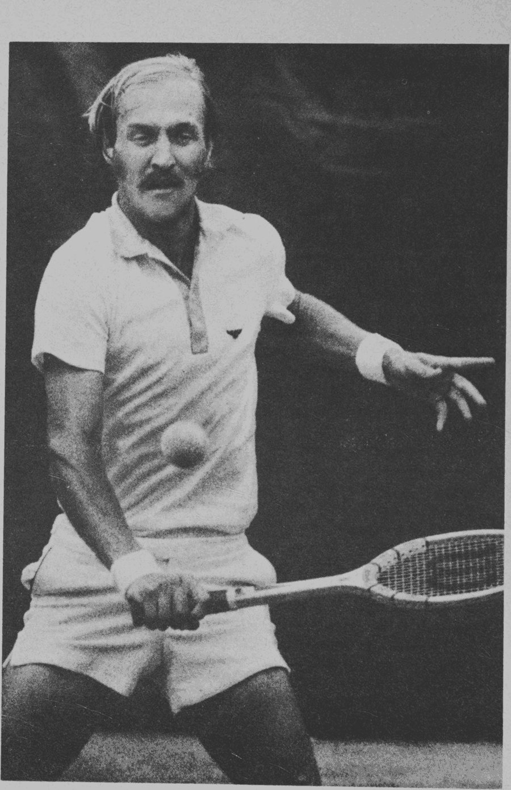
Stan Smith was once rejected in his try to become a tournament ball boy on the basis that he was too clumsy, but he devoted almost every waking hour to become today one of the finest, if not the most skilled, player in tennis.
Chương 1
Thắng Bằng Cái Đầu: Nghệ Thuật Dùng Trí Não Trong Thi Đấu
William Allen Mallory — Chuyên viên Nghiên cứu, Trung tâm Nghiên cứu Hành vi Não bộ, Bệnh viện Bang Sonoma, Eldridge, California
Hầu như mọi người đều thích chiến thắng. Người chơi quần vợt cũng không ngoại lệ. Một số người cho rằng họ chơi quần vợt chỉ để giải trí và họ không quan tâm đến việc thắng hay thua. Những ai cảm thấy như vậy thì không cần đọc thêm nữa. Chương này dành cho những ai thích chiến thắng. Chúng ta có một khát khao chiến thắng sâu sắc và không ngừng nghỉ. Tôi khẳng định rằng chúng tôi cũng rất vui khi chơi quần vợt.
Thái độ tinh thần là rất quan trọng trong quần vợt. Yếu tố tâm lý rất quan trọng. Sự tập trung là điều bắt buộc. Bạn phải suy nghĩ mọi lúc. Bất kỳ cuốn sách tennis nào và bất kỳ tay vợt hàng đầu nào cũng sẽ nói với bạn điều này. Harry Hopman, huấn luyện viên nổi tiếng người Úc thường xuyên tuyên bố rằng thành công trên sân quần vợt có được 25% nhờ cú đánh và 75% nhờ yếu tố tinh thần. Nhưng thế nào là thái độ tinh thần đúng đắn? Các yếu tố tâm lý là gì? Làm thế nào để bạn sử dụng chúng để có lợi cho bạn? Làm thế nào để bạn cải thiện khả năng tập trung của bạn? Làm thế nào bạn có thể suy nghĩ mọi lúc?
Chương này sẽ giải quyết những câu hỏi này theo cách hy vọng sẽ giải thích được các yếu tố tâm lý liên quan đến việc chơi quần vợt để giành chiến thắng. Mục đích là để chỉ ra (a) cách cải thiện trò chơi của một người, (b) cách sử dụng các yếu tố tinh thần để tạo lợi thế cho mình và (c) cách sử dụng các yếu tố tinh thần để gây bất lợi cho đối thủ.
Tâm lý cải thiện trò chơi của bạn
Một cầu thủ xuất sắc gặp một ngày thi đấu tồi tệ sẽ luôn đánh bại một cầu thủ kém cỏi trong một ngày thi đấu tốt đẹp. Vì vậy, bạn nên trở thành một người chơi tuyệt vời. Làm thế nào để bạn làm điều đó? Luyện tập đúng cách, huấn luyện phù hợp, phân tích sai lầm và điều kiện thể chất đều cần thiết và tất cả đều có khía cạnh tâm lý riêng.
Số lượng thực hành tuyệt đối là rất quan trọng. Những điều khác đều bình đẳng, người đã ghi 1.000 giờ trên sân sẽ đánh bại người kém 100 giờ mỗi lần.
Khi bạn chơi một set với ai đó, đó là cách luyện tập tốt. Khi bạn tập trung lại từ vạch cuối sân, đó cũng là một cách luyện tập tốt. Khi bạn đánh bóng vào tường, đó cũng là một cách luyện tập tốt. Nhưng thậm chí còn có cách thực hành tốt hơn. Những bức ảnh quan trọng nhất là gì? Những cái sớm nhất: giao bóng và trả giao bóng. Bạn phải đánh một trong những điểm này mỗi điểm (trừ khi đối thủ của bạn đủ sức để phạm lỗi gấp đôi). Các nét khác có thể xuất hiện hoặc không. Nếu bạn đánh nhiều cú giao bóng liên tiếp, chẳng hạn như 75 hoặc 100, thì cuối cùng bạn sẽ phát triển tính nhất quán, hoặc "đi vào rãnh". Tuy nhiên, chỉ đánh một số lượng lớn các cú giao bóng là không đủ. Trong mỗi lần giao bóng tập luyện, người ta nên suy nghĩ cụ thể về những gì mình đang làm như kiểu giao bóng (phẳng, xoáy, cắt, xoắn kiểu Mỹ), vị trí (thuận tay, trái tay, ngay vào đối thủ) và đó là cú giao bóng thứ nhất hay thứ hai. Nếu bạn đang suy nghĩ về chính xác vị trí và cách thức bạn giao bóng trong luyện tập, Việc này cũng sẽ dễ dàng hơn nhiều khi thực hiện trong trận đấu. Một kỹ thuật đã được chứng minh là có giá trị đối với nhiều người là dán một mảnh vải nhỏ màu sáng vào sân, cách đường biên hai chân và xem bạn có thể đánh bóng bao nhiêu lần.
Ngoài ra, hãy nhờ ai đó thực hiện cú giao bóng cho bạn để bạn có thể thực hành cú trả giao bóng. Cũng giống như với cú giao bóng, mỗi lần trả bóng nên có một kế hoạch rõ ràng: đi sâu về phía trái tay, chéo bàn thấp về phía thuận tay. Một lần nữa, nếu bạn nghĩ về nó trong luyện tập, bạn sẽ dễ dàng nghĩ về nó hơn trong một trận đấu.
Đối với các cú đánh trên mặt đất, người ta nên tìm ra điểm yếu của mình và khắc phục chúng một cách có hệ thống. Nếu bạn không hài lòng với những cú trái tay cao của mình, hãy để đối tác của bạn không đánh bạn gì ngoài những cú trái tay cao trong nửa giờ hoặc hơn.
Một huấn luyện viên hoặc giáo viên giỏi có thể rất có giá trị. Một người không tham gia có hiểu biết quan sát và đề xuất những gì cần thay đổi và những gì không nên thay đổi thường tốt hơn là tự mình đưa ra phỏng đoán. Về cơ bản, huấn luyện viên quần vợt phục vụ mục đích cố gắng cải thiện khả năng thực hiện cú đánh của người chơi. Tuy nhiên, có một số yếu tố tâm lý liên quan đến việc huấn luyện. Huấn luyện viên của bạn có thể khăng khăng yêu cầu bạn chơi “Trò chơi lớn”, nhưng cách bạn trang điểm đến mức đây đơn giản không phải là phong cách của bạn. Có thể huấn luyện viên sẽ chỉ trích nhiều hơn và ít khen ngợi hơn mức phù hợp với tính khí của bạn. Cũng giống như trong tâm lý trị liệu, không phải nhà trị liệu nào cũng phù hợp với mọi bệnh nhân, không phải huấn luyện viên nào cũng phù hợp với mọi vận động viên quần vợt. Một trong những chức năng quan trọng nhất của huấn luyện viên là tạo ra một bầu không khí trong đó người chơi sẽ thích quần vợt và muốn cải thiện kỹ năng chơi của mình. Nếu quần vợt bắt đầu khiến bạn chán nản, bạn nên suy nghĩ nghiêm túc về việc chuyển đổi huấn luyện viên.
Một huấn luyện viên quần vợt có thể phát triển chiến lược cho một tay vợt. Bên cạnh việc cải thiện các cú đánh của mình, huấn luyện viên nhạy bén nên giúp học viên những việc như: đánh ở đâu và khi nào; làm thế nào để thay đổi trò chơi của anh ấy; cách chơi những người chơi khác nhau một cách khác nhau. Nói tóm lại, huấn luyện viên nên quan tâm đến các yếu tố tâm lý trong quần vợt.
Không còn nghi ngờ gì nữa, nhà vô địch tương lai phải tìm ra mình đang làm gì sai và thay đổi nó. Một huấn luyện viên có thể giúp đỡ. Nhưng không phải ai cũng có đủ tiền thuê huấn luyện viên và huấn luyện viên không thể có mặt mọi lúc. Sự thiếu hiểu biết sâu sắc của một số người chơi về những sai lầm họ đang mắc phải thật đáng kinh ngạc. Billie Jean King kể về một chàng trai trẻ đã dành cả buổi chiều mà không thực hiện được một cú chuyền bóng thành công nào. Sau đó, khi được hỏi tại sao không lốp bóng nhiều hơn hay cố gắng đánh thẳng vào đối thủ, anh chỉ nhún vai.
Nói cách khác, anh ấy không biết hoặc có vẻ không quan tâm tại sao mình lại mất tất cả số điểm đó! Sau mỗi điểm bạn thua, bạn nên nói ra, dù là nói to hay với chính mình, chính xác lý do tại sao bạn lại thua. Không chỉ là điều hiển nhiên, chẳng hạn như “T đã đánh bóng vào lưới”. Nếu bạn ghi bàn, đó có phải là do bạn đã rời mắt khỏi quả bóng, vì bạn không khuỵu gối trước quả bóng thấp đó, vì bạn đã nới lỏng tay cầm, hay sao? Nếu lý do bạn mất điểm là vì “anh ấy đã cất nó đi”, thì làm thế nào anh ấy có thể cất nó đi được? Cú lốp bóng ngắn mà bạn thực hiện được là cú duy nhất có được phải không? Liệu việc trở lại phục vụ mạnh mẽ hơn có ngăn cản anh ta thực hiện cuộc tấn công không?
Ban đầu, có thể không phải lúc nào bạn cũng biết ngay mình đã làm gì sai, nhưng bạn sẽ tiến bộ hơn trong việc phân tích này nhờ thực hành. Rất thường xuyên, những người chơi kiểm tra lý do mất mỗi điểm của họ đều rất kinh ngạc. để khám phá ra số lượng lớn các điểm đã bị mất theo cách gần như giống hệt nhau. Một cầu thủ có cú giao bóng đầu tiên khá mạnh (mà anh ta luôn theo sát vào lưới) nhận thấy rằng hơn một nửa số điểm giao bóng mà anh ta mất là do đánh cú vô lê đầu tiên yếu hoặc hoàn toàn bỏ lỡ cú vô lê đầu tiên. Phải làm gì? Làm việc trên những cú vô lê đầu tiên? Làm việc trên vị trí dịch vụ? Bỏ việc lên lưới khi giao bóng? Chắc chắn cầu thủ này phải thay đổi điều gì đó. Chỉ những gì anh ấy thay đổi là một vấn đề khác. Điểm quan trọng ở đây là bằng cách phân tích nguyên nhân của mỗi điểm bị mất, anh ta có thể xác định được điểm yếu đáng kể. Một cách khác để tìm ra lỗi của bạn là quay phim các nét vẽ của bạn. Máy ảnh thẳng thắn một cách tàn nhẫn.
Thành công của một người trên sân cũng phụ thuộc vào tình trạng thể chất của anh ta. Quần vợt thú vị hơn và chiến thắng sẽ dễ dàng hơn nếu một người có thể trạng tốt. Nếu bạn mệt mỏi, bạn sẽ phải nỗ lực nhiều hơn để thực hiện cú giao bóng tốt nhất, chạy vào lưới sẽ tốn nhiều công sức hơn, làm mọi thứ sẽ khó hơn. Theo Rod Laver, lợi ích từ việc rèn luyện thể chất còn vượt ra ngoài phạm vi thể chất. Laver nhấn mạnh rằng điều hòa giúp tập trung và giảm bớt lo lắng. Điều này có ý nghĩa tâm lý tốt. Sự mệt mỏi ảnh hưởng đến tâm trí của bạn. Nó làm giảm ham muốn đuổi theo quả bóng, cố gắng hết sức. Mệt mỏi sẽ khiến bạn mất tinh thần, đặc biệt nếu bạn nghĩ đối thủ của mình không mệt. Nó làm bạn mất tập trung vào trò chơi của mình. Nếu bạn chơi quần vợt theo giải đấu, thường sẽ có những trận đấu mà bạn mệt mỏi ở mức độ này hay mức độ khác. Tận dụng tốt nhất tình huống. Hãy nhắc nhở bản thân những điều sau: bạn có thể nghỉ ngơi bao nhiêu tùy thích sau trận đấu; đối thủ của bạn có thể cũng mệt mỏi như bạn, nếu không muốn nói là mệt hơn bạn; một người chiến thắng mệt mỏi còn hơn một kẻ thua cuộc mệt mỏi! Bằng cách này, bạn có thể bù đắp một phần những ảnh hưởng về tinh thần do mệt mỏi. Tuy nhiên, tốt hơn hết là đừng mệt mỏi. Lấy lại vóc dáng. Chạy ít nhất một dặm một ngày. Đúng vậy - ngay cả khi bạn đã ngoài năm mươi. Kiểm tra với bác sĩ của bạn. Tôi chắc chắn rằng anh ấy sẽ đồng ý. Ngoài chạy, có lẽ là bài tập mang lại lợi ích phổ biến nhất, còn có một số bài tập dành riêng cho quần vợt. Số báo cuối năm 1972 và đầu năm 1973 của Quần vợt Thế giới đã mô tả một số điều trong số này. Bất cứ ai thực sự muốn giành chiến thắng sẽ nỗ lực cải thiện kỹ năng và thể trạng của mình. Điều này nên bao gồm sự kết hợp của các yếu tố tâm lý đã thảo luận ở trên. Hai phần tiếp theo liên quan đến những gì có thể thực hiện được về mặt tinh thần với trình độ kỹ năng nhất định của một người.
Thái độ tinh thần: Người chơi
Mọi người chơi quần vợt đều đã nghe hàng nghìn lần từ “tập trung”. Không có ngoại lệ, anh ấy đồng ý, “đúng rồi, tôi nên tập trung.” Cụ thể, người ta làm gì để tập trung? Mặc dù một số người chơi bẩm sinh đã có khả năng tập trung tốt hơn những người khác nhưng vẫn có một số kỹ thuật có thể giúp một người tập trung. Tự nhủ: “xem bóng” là một cách. Ngay trước mỗi điểm, hãy nói “xem bóng” và thực sự có ý đó. Hãy xem nó ngay cả khi bạn không nghĩ rằng nó sẽ giúp ích. Khi đối thủ của bạn chuẩn bị giao bóng, cầm bóng trước khi ném, đó là lúc bắt đầu quan sát bóng. Hãy theo dõi nó liên tục từ thời điểm đó cho đến khi bạn đánh nó, kể cả khi nó ở trên vợt của bạn. Khi bạn đang vung vợt, đừng quan sát nơi bạn dự kiến sẽ đánh nó. Xem bóng. Khi bạn tập trung vào quả bóng, tầm nhìn ngoại vi của bạn có thể bao quát hầu hết toàn bộ sân, đặc biệt là các bước di chuyển của đối thủ. Theo Tom Brown, ngay cả ở cấp độ cao nhất của trò chơi, người ta vẫn cần liên tục nhắc nhở bản thân xem bóng.
Người ta cũng nên tập trung vào nơi mình sẽ cố gắng đánh bóng. Trước mỗi lần giao bóng, hãy lên kế hoạch đánh nó về phía thuận tay, trái tay hoặc thẳng vào anh ta; và biết liệu bạn có theo nó lên mạng hay không. Cũng cần có một kế hoạch tổng thể về tần suất bạn sẽ đánh bóng đến từng khu vực của sân. Bạn có thể quyết định giao bóng khoảng 75% cho cú trái tay và 25% cho cú thuận tay. Thay vì giao bóng thứ tư về phía thuận tay, bạn nên trộn chúng một cách ngẫu nhiên. Điều này có nghĩa là đôi khi có hai và ba cú liên tiếp ở phía thuận tay, và có thể lên đến mười cú liên tiếp ở phía trái tay. Người nhận nên tiếp tục đoán.
Những người chơi giỏi nhất đồng thời nhấn mạnh rằng: bạn phải luôn suy nghĩ; và phản ứng của bạn trước các tình huống nhất định sẽ trở nên tự động. Nhìn bề ngoài thì điều này có vẻ như là một nghịch lý không thể xảy ra. Hãy xem liệu nó có thể được giải quyết. Ở trên đã nói rằng người ta nên ghi nhớ trong đầu lý do cho mỗi lần thua. Nếu một người có vài ghi chú trong đầu rằng lẽ ra anh ta nên khuỵu gối khi đánh thấp, thì cuối cùng nó sẽ có hiệu lực. Anh ta sẽ bắt đầu khuỵu gối khi thực hiện những cú đánh thấp mà không cần suy nghĩ về điều đó.
Bạn có thể tập trung vào nhiều việc cùng một lúc nếu bạn xác định được những việc đó là gì. Khi bạn đang trên đường vào lưới, sẽ có lúc đối thủ của bạn đánh một cú drive thấp cực mạnh chỉ làm tung lưới và buộc bạn phải cúi xuống thực hiện một cú “vô lê lên” phòng thủ. Bạn cảm thấy mình đang làm tốt chỉ để lấy lại bóng. Vì vậy, bạn hài lòng với một cú đánh vào giữa sân đối thủ. Rất có thể anh ta sẽ vượt qua bạn ở lượt đánh tiếp theo và bạn ghi nhận việc mất điểm là do anh ta đã giao bóng trở lại xuất sắc. Hãy xem xét tình huống này xa hơn một chút. Nếu anh ta cho bạn một cú trả giao bóng dễ thực hiện hơn, bạn có thể đã thực hiện cú vô lê đầu tiên sâu vào góc trái tay. Nhưng thực sự sẽ không khó hơn nhiều để thực hiện cú vô lê phòng thủ đó cũng sâu tới góc trái tay. Sở dĩ bạn không đánh trúng đó là do bạn không nghĩ tới. Bạn đã bận rộn chỉ để lấy lại nó. Nếu bạn tự nhủ đủ nhiều lần “đánh cú vô lê phòng thủ vào góc trái tay”, bạn sẽ sớm thấy mình có thể tự động làm được điều đó.
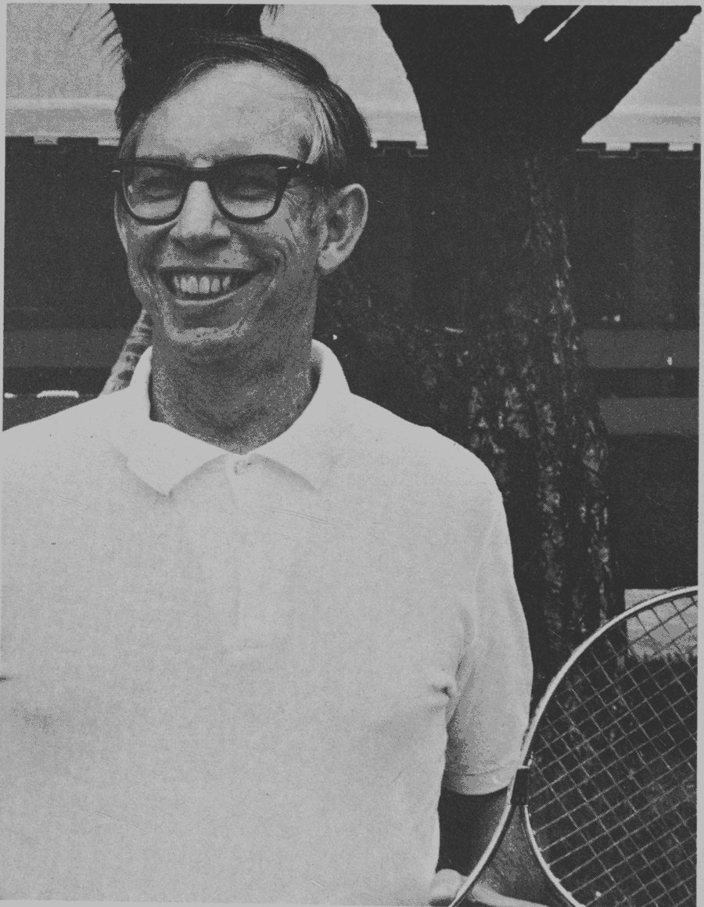
Dr. Claude Frazier: Psychological preparation is the key to winning tennis.
Một số người tham gia “nghẹt thở” trước áp lực. Nghẹn ngào có nghĩa là chơi không tốt như bình thường và thường có hình thức đánh bóng nhẹ nhàng hơn bình thường, bề ngoài là nhằm mục đích “chơi an toàn”. Người ta thường chạm vào quả giao bóng thứ hai khi có áp lực để đảm bảo giao bóng vào được. Điều đáng ngạc nhiên đối với một số người là thực tế là lỗi kép trong tình huống này là khá phổ biến. Có hai lý do để không chạm vào quả giao bóng thứ hai. Điều đầu tiên và rõ ràng nhất là bạn có thể bị nó nhét xuống cổ họng. Thứ hai là nó đơn giản không phải là một cú đánh an toàn hơn. Bạn đã thực hành cú giao bóng thứ hai thông thường của mình bao nhiêu lần? Có lẽ là hàng trăm lần. Bạn đã tập gõ bao nhiêu lần rồi? Một vài lần. Vì vậy, khả năng cao là bạn sẽ có được một cú giao bóng khó hơn một cú giao bóng nhẹ hơn.
Hãy xem xét một tình huống áp lực khác. Tỷ số là 5-4 và đối thủ của bạn giao bóng. Bạn đã trả giao bóng của anh ấy với tốc độ tốt ở cuối đường biên cho cú trái tay của anh ấy hầu hết buổi chiều. Một số cú trả giao bóng của bạn - khoảng 25% - đã bị thất bại, nhưng khi chúng xuất hiện, bạn đã lấy đi lợi thế giao bóng của anh ta khá thành công. Thực tế là bạn đã bẻ giao bóng của anh ta hai lần. Bây giờ, trong một trò chơi quan trọng, bạn bắt đầu chơi nó một cách an toàn và trả lại tiền lãi của mình. Rất có thể anh ta lao vào lưới và bắt đầu cất nó đi, bằng cú vô lê thứ hai nếu không phải là cú vô lê đầu tiên. Cú đánh nào an toàn hơn: cú đánh có 75% xác suất trúng đích, và nếu đúng như vậy, mang lại cho bạn cơ hội cao hơn cả để giành được điểm, hay cú đánh có 95% xác suất trúng đích, và nếu đúng như vậy, gần như chắc chắn sẽ dẫn đến việc mất điểm? Kết luận rất rõ ràng: hãy tiếp tục đẩy lùi nó, dù có áp lực hay không. Chắc chắn, bạn sẽ cảm thấy áp lực, nhưng bạn càng cố gắng chơi như thể bạn không cảm thấy điều đó thì điều đó sẽ càng ít ảnh hưởng đến bạn. Ngoài ra, nếu kẻ thù của bạn cảm thấy bạn đang buồn, điều đó sẽ mang lại cho hắn một lợi thế về mặt tâm lý. Tốt hơn là bạn nên đảo lộn mọi thứ và gây áp lực lên anh ấy.
Mặc dù lý tưởng nhất là bạn nên ghi nhớ từng điểm, vì có rất ít nếu có điểm không quan trọng, nhưng một số điểm rõ ràng là quan trọng hơn những điểm khác. Đương nhiên, nếu điểm số trở nên thấp thì tất cả các điểm tiếp theo đều quan trọng. Điểm thứ tư của một trận đấu cũng là một trong những điểm quan trọng nhất. Nếu đó là số 40 tình yêu hoặc tình yêu- 40 thì tầm quan trọng rất rõ ràng: đó là điểm trò chơi. Nếu tỷ số là 15-30 thì đó cũng là một điểm then chốt, bởi vì nếu bạn thắng nó, bạn sẽ quay lại ngay với tỷ số 30. Nếu bạn thua, đối thủ của bạn có hai điểm trò chơi và có lợi thế lớn. Tương tự, 30-15 là rất quan trọng.
Ngoài ra, mặc dù không có trò chơi nào là không quan trọng nhưng một số trò chơi lại quan trọng hơn những trò chơi khác. Khi tỷ số đạt đến bốn đều, mọi ván đấu sau đó đều quan trọng đối với hiệp đó. Trước đó, ván thứ bảy có tính chất quyết định. Trận đấu có thể kết thúc với tỷ số 6-0, trong trường hợp đó dù sao cũng không có tranh chấp. Nếu tỷ số là 5-1, trận đấu đã định sẵn. Nếu tỷ số là 4-2, một chiến thắng sẽ đưa bạn dẫn trước 5-2 và việc lội ngược dòng là điều cực kỳ khó xảy ra. Mặt khác, một trận thua, nâng tỷ số lên 4-3, mọi chuyện gần như bị san bằng. Đừng bao giờ thư giãn, bất kể bạn có thể dẫn đầu thế nào. Văn học về quần vợt có rất nhiều câu chuyện đau lòng về việc người dẫn đầu đã bị thổi bay vì người dẫn đầu đã thất bại. Đồng thời, nếu một người hiểu rõ đâu là điểm quan trọng nhất và đâu là trận đấu quan trọng nhất, điều đó có thể giúp anh ta chịu đựng nhiều hơn trong những tình huống này.
Tính khí nóng nảy luôn là yếu tố quan trọng kiểm soát hiệu suất làm việc. Có một số quan điểm khác nhau về việc nổi giận sẽ giúp ích nhiều hơn hay cản trở hơn. Chắc chắn sự tức giận của một người không nên tiếp tục vượt quá thời điểm trước mắt. Nếu, theo một điểm mà - làm bạn khó chịu, đập quả bóng vào hàng rào hoặc lẩm bẩm vài câu chửi thề có vẻ hữu ích, thì tốt thôi - nếu mọi chuyện chỉ dừng lại ở đó. Nhắc nhở bản thân rằng điểm cuối cùng đã qua, hãy lo lắng về điểm tiếp theo.
Arnold Beisser chỉ ra rằng một số người chơi tầm cỡ thế giới nói chuyện với chính họ một cách không thương tiếc, cũng như với người khác, với những biểu hiện như “Bạn thật tệ”, “Bạn thật tệ hại”, “Bạn không thể chơi được”. Beisser tuyên bố thêm rằng việc tự phê bình và nói xấu này hầu như luôn đi kèm với sự cải thiện. Như thể họ cần hình thức tự hạ mình này để khơi dậy chiến thắng. Lần tới khi bạn thực hiện một vài cú đánh tồi, hãy thử tự mình tấn công bằng lời nói ác độc. Xem nếu nó hoạt động. Chỉ cần đảm bảo rằng bạn không quá coi trọng lời nói của mình!
Đối với những người trong chúng ta thích nói chuyện với chính mình, vẫn còn những kỹ thuật tâm lý khác. Giả sử tên bạn là Jones. Ngay trước khi giao bóng, hãy luôn tự nhủ: "Tôi là Jones to lớn. Tôi là Jones mạnh mẽ. Tôi là Jones đáng sợ!" Kỹ thuật này được thiết kế riêng cho những người đăng ký theo trường phái sức mạnh của tư duy tích cực. Một lưu ý: đừng để ai nghe thấy bạn. Bạn không muốn bị cười nhạo ngoài sân. Trong các cú đánh trên mặt đất, bạn có thể tự nói với mình, “nảy lên, lùi lại, đánh” vào đúng thời điểm bóng nảy lên, bạn lấy vợt lại và đánh nó tương ứng. Nghe có vẻ giống như một mẹo dành cho người mới bắt đầu, nhưng nó không gây hại gì và có thể giúp bạn tính thời gian.
Có rất nhiều điều kiện môi trường có thể gây mất tập trung: gió, nắng, tiếng ồn, mặt sân không hoàn hảo, bóng không nảy đúng hướng, trọng tài không gọi đúng, cô gái mặc quần đùi đỏ cách đó ba sân. Bất cứ điều gì trong phạm vi tầm nhìn hoặc phạm vi thính giác đều có khả năng gây mất tập trung. Bạn có bao giờ để ý rằng vào một ngày nhiều gió, khi bạn đang chiến thắng, gió không làm phiền bạn chút nào không? Nhưng khi bạn thua, điều đó thực sự làm bạn lo lắng và bạn bắt đầu đổ lỗi cho nó về mọi thứ. Đây là một ví dụ điển hình về việc phản ứng tâm lý của một người có thể quan trọng như hoàn cảnh bên ngoài. Khi bạn thấy mình đang chơi đùa, trước tiên hãy chấp nhận điều đó, nhắc nhở bản thân rằng đối thủ của bạn cũng đang chơi trong những điều kiện giống hệt nhau, sau đó làm mọi thứ có thể để cho phép điều đó xảy ra. Khi bạn đánh bóng, hãy lưu ý xem gió ảnh hưởng như thế nào đến đường bay của quả bóng. Khi bạn chơi ngược gió, hãy nhắc nhở bản thân trong mỗi lần giao bóng ném bóng về phía trước nhiều hơn bình thường một chút. Khi thực hiện các cú đánh trên mặt đất, hãy tự nhủ "đánh mạnh hơn". Khi bạn đang chơi với gió sau lưng, hãy làm ngược lại. Khi mặt trời xấu ở một bên, hãy tự nhủ rằng nửa thời gian đối thủ của bạn cũng ở bên đó. Hãy đánh anh ta vài cú lốp thẳng vào mặt trời. Hãy biến vấn đề của anh ta cũng như của bạn.
Đối với những kẻ gây phân tâm khác, thật khó để không nghĩ đến kẻ pha trò trên khán đài, người cười rú lên mỗi khi bạn bắn trượt. Mặt khác, bạn càng chăm chỉ suy nghĩ về những điều liên quan: quả bóng, bước di chuyển của đối thủ, vị trí của bạn trên sân; và bạn càng làm việc này lâu thì bạn càng dễ dàng loại bỏ những điều không liên quan.
Thái độ tinh thần: Đối thủ của bạn
Phần trước chủ yếu liên quan đến các yếu tố tâm lý ảnh hưởng đến bạn với tư cách là một người chơi. Phần này đề cập đến những cách thức mà các yếu tố tâm lý ảnh hưởng đến anh chàng ở bên kia lưới. Bắt đầu bằng cách tìm ra điểm yếu của anh ấy và tận dụng chúng. Nếu có thể, hãy trinh sát kẻ thù tiềm năng của bạn trước trận đấu. Trong cuộc tập hợp trước trận đấu, hãy đánh anh ta một số quả bóng sâu và một số quả bóng ngắn và tìm hiểu cách anh ta lấy chúng. Lưu ý xem anh ta di chuyển sang trái hay sang phải tốt hơn và liệu anh ta có tránh đánh trái tay hay không. Nhiều điều có thể được khám phá trong giai đoạn này và trong vài trận đầu tiên của trận đấu. Nếu anh ta có cú trái tay yếu, hãy đánh nó về phía trái tay trong phần lớn thời gian. Nhưng không phải lúc nào cũng vậy. Yếu tố bất ngờ là một trong những chiến lược quan trọng nhất có thể được sử dụng. Hãy đánh thuận tay vào lúc anh ta ít mong đợi nhất. Ngoài ra, sự kết hợp tốt giữa lốp bóng và cú đánh rơi sẽ khiến anh ta phải đoán mò.
Nói đến việc đoán, có những lúc việc đoán của bạn chính là phần trăm nước đi. Bạn đang ở trên lưới và vừa thấy cần phải đánh một cú sút ngắn yếu vào giữa sân. Bạn có thể được vượt qua khá dễ dàng ở cả hai bên. Nếu bạn đợi xem anh ta sẽ vượt qua bạn bên nào thì hãy lao về bên đó thì đã quá muộn. Tốt hơn hết bạn nên đoán xem anh ta sẽ đánh nó về phía nào, sau đó di chuyển nhanh sang phía đó trước khi anh ta đánh nó (mặc dù không quá sớm để anh ta vẫn có thể thay đổi cú đánh của mình). Nếu bạn đoán sai, dù sao thì bạn cũng sẽ mất điểm. Nếu bạn đoán đúng, chặn cú sút của anh ta và giành được điểm, lợi thế tâm lý có thể đáng giá hàng chục điểm. Không có gì mất tinh thần hơn việc mất đi một điểm “chắc chắn”.
Tầm quan trọng của việc giữ dáng để không bị mệt mỏi quá mức đã được nhấn mạnh trước đó. Nếu bạn mệt mỏi, đừng nâng đỡ đối thủ bằng cách tiết lộ điều đó cho anh ta. Đồng thời, làm cho anh ấy mệt mỏi. Anh ta nên bị truy đuổi từ bên này sang bên kia và buộc phải đánh nhiều đòn liên tiếp vào cùng một phía, để anh ta phải quay đầu và rút lui. Còn mệt hơn việc chạy từ bên này sang bên kia là chạy tới chạy lui. Một loạt các cú đánh góc ngắn và lốp bóng sâu xen kẽ nhau sẽ khiến tất cả mọi người đều mệt mỏi về mặt tinh thần và thể chất, trừ những người ở trạng thái tốt nhất.
Một số kỹ thuật đánh lừa tâm lý kẻ thù của bạn vi phạm đạo đức tòa án. Rõ ràng, bạn không phát ra những tiếng kêu lớn trong khi đối thủ của bạn đang chờ cú lốp bóng của bạn rơi xuống, mặc dù điều đó rất có thể sẽ khiến anh ta khó chịu nếu bạn làm vậy. Một số cầu thủ hàng đầu nổi tiếng với tần suất dừng trận đấu và thắc mắc về lệnh của trọng tài biên. Một số nhà phê bình nhấn mạnh rằng họ làm điều này nhằm cố ý phá vỡ sự tập trung của đối phương. Dù sao đi nữa, nó dường như giúp những người chơi này tự trấn tĩnh lại.
Gardner Mulloy viết về trường hợp anh ta bị gọi nhiều lần vì lỗi chân. Vô cùng phẫn nộ, Mulloy cảm thấy đối thủ của mình chứ không phải mình mới mắc lỗi lỗi chân. Mỗi lần họ đổi đầu sau đó, Mulloy đều nhận xét: “Bạn có vui lòng bỏ thói bắt lỗi bằng chân không!” Mulloy sau đó đã thắng trận đấu và đối thủ tuyên bố với một số lý do chính đáng rằng lời nói của Mulloy, chứ không phải môn quần vợt của anh ta, đã đánh bại anh ta. Nếu bạn thực sự muốn giành chiến thắng và hoàn toàn không có chút xấu hổ nào, bạn có thể liên tục chất vấn đối thủ của mình rằng tại sao cú thuận tay của anh ta lại vô hại đến vậy. Tuy nhiên, bạn phải cẩn thận với người mà bạn vướng vào. Anh ta có thể là kiểu người sẽ phản bác lại nhận xét rằng trong bộ trang phục chơi tennis của bạn, bạn “chắc chắn là sinh vật trông thảm hại nhất ở bất cứ đâu”.
Ngoài những nỗ lực thô bạo ở trên để ngăn cản đối thủ của bạn rời khỏi trận đấu, còn có một số thực hành tâm lý nhẹ nhàng hơn một chút đã hoặc nên là một phần trong trò chơi của mọi người chơi hàng đầu.
Thực hiện cú giao bóng của bạn. Nhiều người chơi đập quả giao bóng đầu tiên hết sức có thể nhưng hiếm khi thực hiện được quả giao bóng đó. Sau đó, họ chạm vào quả giao bóng thứ hai. Kết quả là đối thủ có một cú chạm để trả lại khoảng 80% thời gian. Tốt hơn hết bạn nên đánh cả hai với tốc độ vừa phải và độ chính xác. Có một lợi thế lớn về mặt tâm lý khi không phải thực hiện cú giao bóng thứ hai. Quả giao bóng đầu tiên không chịu nhiều áp lực. Vì bạn không cần phải đưa nó vào nên bạn có thể tự do và lỏng lẻo hơn khi đánh nó. Lỗi kép được coi là tội lỗi chính của quần vợt. Tuy nhiên, cần phải thừa nhận rằng đôi khi điều đó chắc chắn sẽ xảy ra. Những cầu thủ đẳng cấp thế giới giỏi nhất đều mắc lỗi kép. Mặt khác, những ảnh hưởng tâm lý của lỗi kép khó có thể được nhấn mạnh quá mức. Máy chủ có sự cố. Người trả bóng được nâng điểm: anh ta giành được điểm mà không cần phải nhấc vợt. Bạn nên luyện tập cú giao bóng thứ hai đó cho đến khi bạn có thể thực hiện nó với tốc độ và độ sâu hợp lý ở mức tối thiểu là 90% thời gian. Sau đó, khi bạn mắc lỗi kép, điều không thể tránh khỏi, hãy nhắc nhở bản thân rằng những người chơi giỏi nhất cũng làm điều đó và cứ đánh nó - theo cách tương tự. Đây không phải là lúc để thực hiện một sự thay đổi lớn như đột nhiên đi vào một khuynh hướng Mỹ xa lạ hoặc đánh lén nó. Nếu cú giao bóng của bạn trước đây đã chính xác thì nó sẽ chính xác trở lại.
Di chuyển vào quả giao bóng thứ hai của đối thủ và để anh ta thấy bạn di chuyển. Thỉnh thoảng di chuyển đến gần hơn mức bạn nghĩ và đảm bảo rằng lúc đó anh ta nhìn thấy bạn. Bạn có thể không có nhiều thời gian như bạn muốn để đánh trả, nhưng anh ta sẽ bắt đầu tự hỏi cú giao bóng của anh ta thực sự yếu đến mức nào. Thỉnh thoảng, hãy “đóng thế” qua lại trong khi anh ấy đang chuẩn bị giao bóng để anh ấy không thể chắc chắn bạn sẽ ở đâu khi trả giao bóng. (Đừng mải mê nhảy múa mà quên xem bóng.)
Đừng gửi điện báo cho các bức ảnh của bạn. Cố gắng chuẩn bị gần như giống hệt nhau, bao gồm cả vị trí của bàn chân, cho dù bạn định đánh bóng chéo sân hay dọc biên. Đừng bao giờ tin tưởng vào những gì bạn sẽ làm trong bất kỳ tình huống nào.
Hãy đặc biệt cố gắng để giành chiến thắng trong các cuộc biểu tình dài. Điều này sẽ có xu hướng tạo ra cảm giác vô ích ở đối thủ của bạn: rằng “tất cả công việc đó chẳng là gì cả”. Nhân tiện, một pha giao bóng kéo dài là nơi tuyệt vời để thực hiện một cú đánh rơi hoặc lốp bóng bất ngờ.
Phá vỡ đà. Nếu bạn bị mất nhiều điểm liên tiếp hoặc nhiều trận liên tiếp, hãy bước đi chậm rãi và thận trọng khi đổi sân. Buộc dây giày của bạn. Kiểm tra cẩn thận dây vợt của bạn. Tung bóng tám hoặc mười lần trước khi giao bóng. Những thực hành hoàn toàn hợp pháp này, tương tự như việc gọi hết giờ trong môn bóng rổ, có thể hạ nhiệt đối thủ của bạn cũng như cho phép bạn bình tĩnh lại.
Hãy là một mặt poker. Nếu bạn lo lắng, tức giận, chán nản hoặc phấn khởi, hãy che giấu nó. Khi bạn giao một quân Át hoặc thực hiện một cú chuyền bóng xuất sắc, ngay cả khi nó có thể khiến bạn “sốc đến tận xương tủy, hãy tỏ ra thờ ơ”. Hãy để anh ta nghĩ rằng đây là cảnh quay thường lệ nhất.
Hãy thử các kỹ thuật tôi đã đưa ra và một số trong số chúng sẽ trở thành một phần thường xuyên trong trò chơi của bạn. Tuy nhiên, người ta phải ghi nhớ rất nhiều sự khác biệt cá nhân về tính khí và phong cách. Không phải ai cũng được hưởng lợi từ việc nói chuyện với chính mình. Trong khi một số người tốt hơn nên bùng nổ khắp sân khi họ nổi điên, thì những người khác tốt hơn nên kiềm chế nó. Hãy tìm hiểu xem điều gì phù hợp với bạn.
Hãy để tôi kết thúc bằng việc nhấn mạnh lại điều mà tôi coi là yếu tố tâm lý quan trọng nhất để giành chiến thắng trong môn quần vợt: xem bóng. Nếu bạn dán mắt và tâm trí vào vật thể nhỏ màu trắng (hoặc màu vàng) đó, nó sẽ giúp bạn tàn sát đối thủ, giết chết họ! Rốt cuộc thì đó chính là nội dung trò chơi của quý ông này.
Chương 2
Nghệ Thuật Tâm Lý Chiến (The Art of Gamesmanship)
J. L. Diamond, M.D. — Cố vấn Chương trình Y tế, Evansville, Indiana
James Johnson đưa bóng qua lưới đối phương một cách dễ dàng. Là một người có tuổi, có kinh nghiệm trong cách chơi quần vợt, anh ta không đập bóng, đánh góc, thử nhiều cú đánh từ trên cao, lao vào lưới, cũng như không để vạch cuối sân ở vạch giữa khi đánh trả. Anh ấy đang thả lỏng cho trận đấu của mình. Bộ đồ khởi động rộng thùng thình khiến anh trông còn chắc nịch hơn cả thân hình 70 inch, nặng 200 pound của mình. Cái đầu hói và cặp kính hai tròng làm nổi bật tuổi sáu mươi của ông. Đối thủ của anh ở bên kia lưới thực sự là một sự tương phản. Anh ấy còn trẻ, uyển chuyển và rắn rỏi. Anh ấy liên tục đập mạnh vào mỗi quả bóng chạm vào mình. Cú trái tay bằng hai tay của anh ấy đã thắt bóng. Khi ở vạch giao bóng, anh ấy thực hiện từng cú đánh khi mái tóc dài của anh ấy đung đưa và vung về mọi hướng. Anh nhấn mạnh tuổi mười chín tuổi trẻ của mình. Với sự đồng ý của cả hai, quá trình khởi động đã chấm dứt. Vợt được quay để lựa chọn giao bóng và bên. Họ rút lui về đường cơ sở tương ứng của họ. Tuy nhiên, có sự khác biệt trong cách tiếp cận của từng cá nhân. Khi Johnson cởi quần và áo khoác ra, anh ấy dường như sụt mất 20 hoặc 30 pound. Anh ấy trông to lớn và vạm vỡ, giống như một cầu thủ bóng đá ngày xưa. Anh sải bước ra giữa sân, nhanh chóng nhảy qua lưới nửa chạy nửa đi về phía cuối sân và hét lớn “đi thôi”. Cảnh tượng một đối thủ đầu trọc, cơ bắp cuồn cuộn, nhảy lưới, dù đã sáu mươi, đã khiến đối thủ trẻ tuổi rung động đến mức người đàn ông lớn tuổi nhanh chóng thắng ba ván trước khi gã tóc dài nhận ra mình đang bị tâm thần.
Với rất ít trường hợp ngoại lệ, có rất ít môn thể thao hành động liên quan đến đối đầu trực tiếp mà tâm lý đóng vai trò quan trọng như trong quần vợt. Người ta ước tính rằng trong một trận đấu quần vợt thông thường giữa hai (hoặc bốn) đối thủ, tâm lý đóng vai trò 60%. Có rất ít môn thể thao mà các cuộc đối đầu téte-a-téte không chỉ có kỹ năng pit và tài năng thể thao bẩm sinh mà thái độ tinh thần và cảm xúc cũng đóng một vai trò quan trọng như vậy. Khả năng một người chơi gây rối, chê bai, làm nản lòng, cáu kỉnh, làm nản lòng, vô tổ chức và phá vỡ sự tập trung của đối thủ, trở thành yếu tố quyết định chính đến kết quả của một trận đấu sát nút. Hành động này, khi được người chơi có kinh nghiệm cố tình thực hiện (hoặc do người mới chơi vô tình thực hiện khi chơi với một đối thủ có kỹ năng) được gọi là tâm lý. Áp dụng đúng cách, tâm lý nhằm mục đích phá vỡ kế hoạch hành động, phản xạ tự nhiên hoặc chuyển động dự kiến của đối thủ trên toàn sân.
Tâm trí có chủ ý không được vi phạm các quy tắc chơi khá cứng nhắc do Hiệp hội quần vợt sân cỏ quốc tế hoặc Hoa Kỳ thiết lập. Trong các trận đấu trong giải đấu, số lượng trọng tài sẽ thay đổi tùy theo tầm quan trọng của trận đấu cụ thể, nhưng trọng tài là người quyết định cuối cùng trên sân (ông ta có thể chuyển một số vấn đề nhất định cho trọng tài bên ngoài sân hoặc chủ tịch giải đấu) nói chung sẽ không cho phép một cầu thủ cố gắng tiếp tục hoặc rõ ràng về tâm lý (đặc biệt là người được biết đến là một “diễn viên xấu” mãn tính). Do đó, tâm lý cần sự tinh tế, những nếp nhăn mới, những đổi mới khác nhau và một kỹ thuật cẩn thận.
Có nhiều cách để gây ấn tượng với đối thủ. Một phương pháp sáo rỗng là trì hoãn trận đấu do bị cáo buộc chấn thương. Đối thủ của anh ta sẽ khó chịu nếu một cầu thủ giả vờ bị trật mắt cá chân, chuột rút ở chân hoặc say nắng. Cầu thủ có xu hướng tự nhiên là lo lắng về chấn thương hoặc bệnh tật của đối thủ. Ngay cả khi sự tập trung của anh ta không bị suy giảm hoàn toàn, người chơi “tốt” vẫn sẽ cảm thấy khó chịu. Nếu chấn thương được cho là do bị bóng đập vào, hoặc ngã vào lưới, cột hoặc hàng rào, thì đối phương sẽ có xu hướng bình thường là giảm bớt đòn tấn công của mình hoàn toàn chỉ vì thông cảm. Một thủ đoạn khác đối với một cầu thủ mệt mỏi, nóng nực và kém về điểm số có thể là đòi chấn thương, bệnh tật hoặc cần quan chức kiểm tra y tế để được nghỉ ngơi trong thời gian ngắn.
Ngoài ra, luôn có tâm lý điều chỉnh thiết bị. Cách thông thường nhất là dừng cuộc chơi bằng cách cúi xuống để buộc hoặc cởi dây và buộc lại một sợi dây giày đang kéo. Hoặc điều chỉnh lại quần áo, đội mũ lưỡi trai (hoặc cởi bỏ) hoặc đeo (hoặc cởi) băng thấm mồ hôi ở trán hoặc cổ tay. Hoặc anh ta có thể dành thêm một chút thời gian bên lề để lau trán, nhấp một ngụm đồ uống, lau khô tay trên khăn, thay áo hoặc lấy một cây vợt tennis khác, trong khi đối thủ của anh ta đang háo hức lao tới và giành chiến thắng một chút. đường cơ sở.
Luôn có cách để khiến đối thủ phải co rúm người lại. Một tay vợt hạt giống hàng đầu gặp đối thủ ở những vòng đầu tiên tự giới thiệu bản thân một cách khiêm tốn bằng cách chỉ sử dụng tên riêng của mình. Điều này nhấn mạnh sự vĩ đại đã được khẳng định của anh ấy, vì anh ấy cho rằng một cách chính xác rằng mọi người đều biết đến anh ấy. Việc sử dụng tên riêng của anh ấy có xu hướng hạ thấp đối thủ của anh ấy, thường là một người chơi vô danh hoặc thiếu kinh nghiệm trong giải đấu. Con lớn được gieo hạt tiếp tục chăn bò đối thủ dự định của mình | bằng cách gọi anh ta bằng họ của anh ta, nhưng trong trận đấu, anh ta có thể khiến đối thủ trẻ của mình mất cảnh giác và lạc nhịp hơn nữa bằng cách hạ mình đặt câu hỏi về một tình huống cận kề bằng cách nói, "Anh gọi đó là gì, Bill?" Nếu đó là một trận đấu thực sự thân thiết khi không có người xếp hàng tham dự, thì trận đấu lớn sẽ được hưởng lợi từ lựa chọn này.
Việc kêu gọi trong khoảng thời gian trong một trận đấu không có trọng tài có thể là một chút tâm lý giả tạo. Điều này đặc biệt khó chịu khi quyết định được thực hiện đúng lúc cú giao bóng sắp được thực hiện. Hỏi đối thủ xem tỷ số có phải là 30-tất cả hay không, khi tỷ số là 40-15, là cố tình gây khó chịu. Động lượng và thời gian của một người trở nên sai lầm. Ngay cả khi điểm số được gọi một cách chính xác một cách khiêu khích, là 30-tất cả, cuộc thảo luận sẽ phá vỡ sự tập trung cần thiết. Nếu cuộc gọi là một câu hỏi về điểm số và người nghe thất vọng về tình yêu-3 hoặc 1-4, thì nỗ lực tinh thần có xu hướng khiến anh ta căng thẳng, căng thẳng phản xạ và khiến anh ta bị đè nặng bởi nỗi lo lắng tự nhiên khi bị suy sụp. Đây là một phương thức hoạt động được thực hiện bởi những người chơi biết được xu hướng khó chịu của đối thủ khi trò chuyện.
Nói chuyện trong một trận đấu quần vợt về những vấn đề tốt nhất không nên nói ra là một mưu đồ thông thường. Những nhận xét như “trả lại tốt” hay “cú đánh đẹp” hay “tuyệt vời” hoặc “làm thế nào mà bạn lấy lại được nó?” hoặc “doggone, đó là cú đánh tốt nhất của tôi mà bạn đánh trả”, không phải lúc nào cũng nhằm mục đích nhận xét lịch sự, khuyến khích hoặc lịch sự. Khi được lặp đi lặp lại thường xuyên, chúng có xu hướng hạ thấp sự cảnh giác của đối thủ và hướng anh ta vào bầu không khí an toàn giả tạo. Những lời khen ngợi liên tục khiến vũ khí phòng thủ của anh ta trở nên dễ bị xuyên thủng. Anh ta đang chuẩn bị cho cuộc tiêu diệt sắp tới. Khi một số cú sút đã vượt qua anh ta hoặc anh ta đang chạy từ lưới đến cuối sân hoặc từ các quả phạt góc thuận tay sang trái tay và bị thua, anh ta nhận ra rằng mình đã bị mắc bẫy. Sự thất vọng khiến anh ta bực bội và nổi cơn thịnh nộ. Mưu đồ của đối thủ khôn ngoan của anh ta phải trả giá.
Lawrence P. Carlson là người đứng đầu chính thức của ngành công nghiệp lớn nhất thị trấn. Anh ấy luôn quan tâm đến các vấn đề dân sự đang vây hãm một cộng đồng bị chi phối bởi mức lương khổng lồ của anh ấy. Ông cũng giữ cho thể chất của mình được bôi trơn, thả lỏng và thư giãn một cách hợp lý bằng cách tận hưởng những nỗ lực thể chất tốt nhất mà năm mươi năm ông cho phép. Anh ấy làm việc và rất thích chơi quần vợt và anh ấy chơi để giành chiến thắng. Vì anh ta là một người to lớn, nặng nề, tương đối chậm chạp nhưng mạnh mẽ, không có sự uyển chuyển bẩm sinh thường thấy ở những vận động viên quần vợt bẩm sinh, nên anh ta sử dụng tâm lý trên sân.
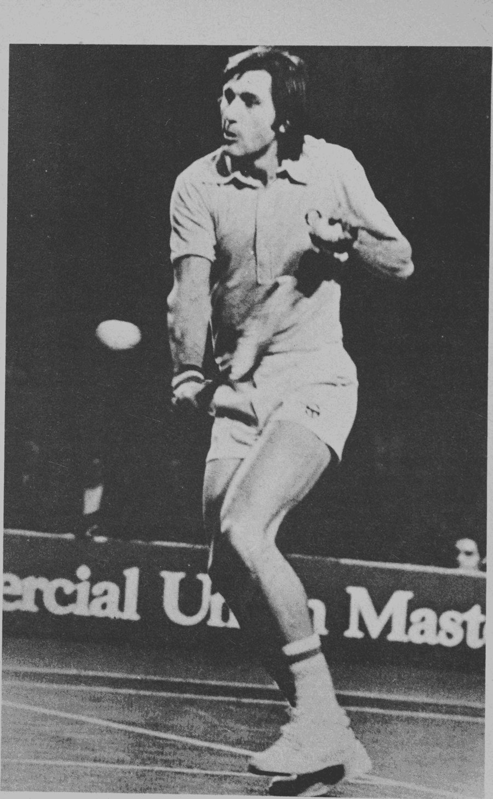
Ilie Nastase uses a fiery and fierce competitive spirit to literally burn the court with his style of intense play.
Anh ta đã có sẵn một lợi thế khi ra tòa. Ông ấy là người đứng đầu và trong các giải đấu hàng tuần, hầu hết các cầu thủ đều là nhân viên của ông ấy. Vì vậy, anh ta sẽ sải bước vào tòa án với sự tự tin của người điều hành, thốt ra câu đố "Xin chào, Tom (hoặc Dick hoặc Jack)", trong khi đối thủ của anh ta đáp lại một cách nghiêm túc bằng "Chào buổi tối, Tiến sĩ Carlson".
Anh ấy tỏ ra thân thiện nhưng lạnh lùng. Sau cú giao bóng đầu tiên và bên sân, anh ấy hoàn toàn được khích lệ. Khi bóng của đối thủ đi ra ngoài vài inch, anh ấy sẽ dừng lại và nói: “Tệ quá, Dick, nó vừa ra ngoài rồi”. Hoặc, nếu đối thủ của anh ta tung ra một cú đánh khó đi chệch con hẻm hoặc đường biên, anh ta sẽ nói: “Cố gắng quá tốt, nó chỉ trượt có một inch thôi”. Vì vậy, Tiến sĩ Carlson không bao giờ có thể bị buộc tội là đã thực hiện các cú đánh tệ, nhưng ông đã làm thất vọng những đối thủ của mình, những người đã tốn nhiều năng lượng và mồ hôi để đánh trả một kẻ cứng rắn, chỉ để nó bị loại một phần nhỏ.
Anh ấy thường xuyên yêu cầu một thời gian khác để chơi trận đấu của mình so với thời gian đã lên lịch. Trong hầu hết các trường hợp, các quan chức của giải đấu, giống như đối thủ của anh, đều làm việc cho anh. Anh ấy đã có cách của mình. Anh ta có thói quen hỏi đối thủ về tỷ số khi thực hiện giao bóng. Hoặc anh ta sẽ đưa ra một điểm rõ ràng là sai, ngay khi đối thủ của anh ta chuẩn bị giao bóng. Khi dừng lại để hỏi số đếm, thường là bằng cách đi về phía lưới như thể để thảo luận (và do đó chia tay thời gian), đối thủ của anh ta, không vui và hơi điên cuồng, sẽ giao bóng một cách giận dữ, chỉ để mắc lỗi kép. Đôi khi, anh ta quay sang đối tác của mình, thường là giám đốc tài khoản hoặc người quan hệ công chúng, và hỏi anh ta xem bóng của đối thủ của họ vào hay ra, từ đó dẫn đến một cuộc họp khiến đối thủ cảm thấy bất mãn và thất vọng. Anh ấy biết rằng tất cả những câu trả lời cho những câu hỏi mà anh ấy thường hỏi người học trò chơi quần vợt của mình đều không cần thiết. Ồ, anh ấy thắng thường xuyên hơn. Nhưng đó không phải nhờ vào khả năng thể chất mà là khả năng của anh ấy trong việc khai thác lối chơi kém cỏi, khó chịu từ đối thủ tâm lý của mình.
Một tâm lý thô thiển được sử dụng bởi những người nghiệp dư chuyên nghiệp và xếp hạng hàng đầu là tranh cãi về quyết định của trọng tài hoặc thắc mắc về điểm của trọng tài. Ít nhất, “kẻ xấu” gây ra tình trạng trì hoãn trận đấu có thể làm giảm đà chiến thắng của đối thủ. Một lần nữa, nếu trọng tài vô tình gọi tỷ số không chính xác, cầu thủ thua cuộc có thể mất tập trung. Chúng tôi đã thấy thủ đoạn này trong các giải đấu nghiệp dư và chuyên nghiệp lớn. Người chơi bị cho là bị xúc phạm sẽ đập bóng xuống, ném vợt lên không hoặc giơ cả hai tay lên trời để cầu xin lý do của mình với trời.
Những màn thể hiện sự nóng nảy của các tay vợt nổi tiếng thế giới tại các giải đấu lớn trước các quan chức đã được hàng triệu người xem qua truyền hình. Quần vợt là một môn thể thao quốc tế, vẫn được coi là trò chơi của quý ông, và các quan chức được cho là mẫu mực của sự trung thực và đạo đức, nhưng các trận đấu quốc tế đã bị các quan chức có khuynh hướng chủ nghĩa dân tộc quá nhiệt tình gọi là thành kiến. Những cơn giận dữ của những cầu thủ ác ý cũng được nhiều người biết đến. Đánh bóng về phía khán giả tỏ ra thù địch bởi tính khí nóng nảy rõ ràng, hoặc về phía trọng tài biên, hoặc sử dụng ngôn từ thô tục, tạo nên những “diễn viên xấu” được quốc tế biết đến. Tuy nhiên, việc họ thiếu tinh thần thể thao tốt thường không làm mất lòng đối thủ giàu kinh nghiệm.
Tại hầu hết các giải đấu lớn, khán đài đều có những người yêu thích quần vợt theo dõi các trận đấu trên sân với sự chú ý nhiều hơn đám đông thông thường tại các sự kiện thể thao, bởi vì nhiều người trong số họ chơi trò chơi này. Có bao nhiêu trong số hàng triệu người xem bóng đá ở trường đại học và chuyên nghiệp hoặc các giải đấu bóng chày lớn đã hoặc đang là cầu thủ? Tuy nhiên, những người đam mê quần vợt biết quần vợt từ một góc độ bí truyền. Họ đã chơi hoặc vẫn chơi quần vợt. Họ hoàn toàn nhận thức được cuộc thi căng thẳng trước mắt. Họ có thể nhận ra tâm lý đang được sử dụng trong giải đấu địa phương, tiểu bang, khu vực, quốc gia hoặc chuyên nghiệp. Họ phản ứng trước những trò hề của người chơi như thể chính họ đang tích cực tham gia. Họ hoan nghênh một cú đánh tốt bằng những tràng pháo tay ngắn đầy lịch sự. Họ im lặng trong khi chơi và nhanh chóng thừa nhận một cú đánh khó thành công. Đến lượt các cầu thủ phản ứng nhạy cảm với khán đài. Đôi khi, một cầu thủ sẽ dừng trận đấu khi ai đó đang đi dọc theo đường biên hoặc đứng lên và đi lại trong phần khán đài đó trong tầm nhìn của anh ta, hoặc sẽ khiển trách gay gắt một nhiếp ảnh gia chụp ảnh dọc theo đường biên hoặc phía sau đường cuối sân. Ánh đèn của nhiếp ảnh gia lóe lên gần sân tennis hay thậm chí trên khán đài đều gợi lên sự tức giận. Người chơi sẽ dừng lại và trình bày nguyên nhân của mình, đôi khi với trọng tài, đôi khi trực tiếp với nhiếp ảnh gia vi phạm và thường kèm theo những nhận xét xúc phạm thường hướng tới khán đài. Việc trì hoãn trận đấu vì lý do chính đáng hoặc không có lý do gì cả, có thể là một tâm lý cố tình nhằm mục đích làm đảo lộn sự tập trung của đối phương trên toàn sân. Đối thủ vô tội hơn sẽ cảm thấy đồng cảm với đối thủ bị cho là ác ý của mình và sẽ vô tình thả lỏng trò chơi của chính mình.
Trong nhiều năm, việc mặc quần áo toàn màu trắng trên sân tennis là truyền thống. Cùng với những chiếc vợt tennis có dây kim loại, cán quá dài, nam giới mặc quần dài bằng vải nỉ và áo sơ mi cổ chữ V. Phụ nữ mặc những chiếc váy rộng, nhiều váy lót, dài đến mắt cá chân. Cách đây vài thập kỷ, những chiếc áo sơ mi và quần short tennis ngắn tay tiện dụng đã được giới thiệu. Mọi sự khác biệt đều bị phản đối, cho đến khi Gussie Moran, một nhân vật hài hước, xinh đẹp, nữ tính nhất, sải bước trên sân trung tâm linh thiêng ở Wimbledon với chiếc quần lót ren xếp nếp. Việc cô là một tay vợt hạng cao cố tình phô diễn sức hấp dẫn hình thể của mình trong một giải đấu lớn trước một lượng lớn khán giả trực tiếp đã tạo ra một chấn động khắp thế giới quần vợt. Sau nhiều tranh cãi, bộ quần áo xếp nếp vẫn được giữ nguyên. Cuộc cách mạng do Gussie Moran khởi xướng giờ đây đã trở thành một ngành kinh doanh trị giá hàng triệu đô la. Hiện nay, màu sắc và kiểu dáng đã được chấp nhận nhiều hơn, mặc dù những người cứng rắn trong Ủy ban Quy tắc và Quy định của USLTA vẫn đưa ra những hạn chế. Tuy nhiên, sự phiền nhiễu do quần áo vẫn tiếp tục gây ra.
Dan Fisher là một ví dụ điển hình về một tay chơi giỏi hơn mức trung bình luôn sử dụng mọi mưu kế để giành chiến thắng. Ở một thành phố nơi quần vợt là vua, người đàn ông này đã làm việc chăm chỉ để trở thành người chiến thắng. Không có tài năng thiên bẩm, anh phải dùng đến lối chơi phòng thủ. Anh ta không bao giờ tấn công. Anh ta nổi tiếng là dùng mọi cách để làm đối thủ thất vọng, chọc tức và tức giận. Ở tuổi tứ tuần, thi đấu thường xuyên quanh năm, anh phát triển nhịp điệu tốt, phản xạ nhanh và khả năng trả bóng ổn định. Không có cú giao bóng mạnh, anh ấy phải dựa vào những trận đấu kéo dài để hạ gục đối thủ. Anh ấy hiếm khi phạm sai lầm. Hơn bất cứ điều gì khác, anh ta đã triển khai những thủ đoạn ngô nghê để chọc giận anh chàng ở sân đối diện. Anh ta dừng lại để điều chỉnh thiết bị được cho là cần thiết, liên tục nói chuyện với chính mình và sử dụng ngôn ngữ không tốt. Khi bắn trượt, anh ấy sẽ kêu lên, "Đó là một cú sút tuyệt vời, Dan." Anh ta không chỉ thành công trong việc gây sốc cho khán giả mới mà đối thủ mới vào nghề còn trở nên hoang mang, thiếu tự tin, tức giận và cuối cùng mắc lỗi trong sự lo lắng để trận đấu kết thúc. Anh ta đã bỏ điểm khi cố gắng đánh bóng mạnh vào Dan, người mà trò chơi vẫn không đổi.
Dan Fisher tiếp tục trò chuyện với trọng tài, trọng tài và khán giả. Thỉnh thoảng anh ta đi về phía hàng rào hoặc đứng vẫy tay với ai đó mà anh ta nhận ra. Trận đấu thường xuyên bị gián đoạn trong một giây ngắn ngủi, đủ lâu để khiến đối thủ khó chịu và quá ngắn để khiến trọng tài chính khởi động, nếu có mặt. Các cuộc gọi xấu thường xuyên chỉ xảy ra khi quan chức không có mặt. Những trò hề của anh ta đã nổi tiếng ở quê nhà. Một ngày nọ, anh chơi trận tứ kết với một cầu thủ vô danh đến từ một thị trấn xa xôi. Anh sưởi ấm với chiếc áo khoác được kéo chặt. Sau khi giao bóng thất bại, anh quay lưng lại với đối thủ, cởi áo khoác, bước về vạch cuối sân để nhận. Máy chủ bị rung chuyển. Chữ lớn trên áo quần vợt của Dan Fisher có chữ SCHIZO. Dan đã thắng bốn ván đầu tiên trước khi đối thủ của anh kịp ổn định. Tâm lý đã được bật lên. Sau khi Fisher thực hiện nhiều cú đánh ngay bên trong đường cuối sân, đường giao bóng hoặc đường biên, đối thủ mới làm quen, không chắc chắn, bối rối và điên cuồng, cuối cùng đã thua. Thói quen của anh ta chỉ có hiệu quả khi đối thủ không biết anh ta. Những người đồng ý chơi với anh ở quê nhà đều không khó chịu trước những trò hề của anh.
Như trong bất kỳ môn thể thao nào khác, có những người tìm cách giành chiến thắng bằng bất cứ giá nào. Đối với họ một chiến thắng là điều bắt buộc. Họ thường được gọi là “thợ săn cúp”. Những người chơi này không ngừng nỗ lực để đạt được một biểu tượng chiến thắng bằng kim loại khác.
Một bậc thầy khác về nghệ thuật tâm lý là Brad Cobb. Ông nội 51 tuổi này cao 74 inch, nặng 225 pound. Làm việc ngoài trời cả đời và là một cựu cầu thủ bóng rổ, anh ấy có thể chất tuyệt vời. Phản xạ của anh ấy nhanh như một cậu bé. Khả năng bẩm sinh của anh ấy gắn liền với khát vọng chiến thắng không thể kìm nén được. Những cú đập đầu của Brad khiến người ta nhớ đến Stan Smith hoặc Pancho Gonzales. Những chiếc xe bán tải của anh ấy từ trên sàn được thực hiện bằng kỹ năng cổ xưa của Don Budge. Cú trái tay yếu ớt của anh ấy được bù đắp bằng chuyển động cổ tay nhanh và mạnh. Chỉ nhanh vừa phải, anh ấy vượt qua điều này bằng khả năng đoán trước bẩm sinh. Anh ta có khả năng đưa tay ra để đập hoặc lật cổ tay để tạo góc cho những cú đánh ngoài tầm với. Người ta sẽ nghĩ rằng với tất cả sức mạnh và khả năng kiểm soát này, anh ta sẽ không cần phải thực hiện những cú cận chiến có lợi cho mình. Thật vậy, khi những người quản lý có mặt, họ sợ phải gọi các trận đấu của anh ấy vì anh ấy có nhiều lý lẽ. Chiến thắng, theo sự thừa nhận của chính anh ta, là điều bắt buộc. Anh ấy không thể chơi quần vợt vì mục đích thể thao. Anh ấy chỉ nhằm mục đích giành chiến thắng. Tâm lý được sử dụng nhiều như kỹ năng. Khát vọng vượt trội của anh được thể hiện khi anh liên tục nói chuyện với đối thủ, khán giả, quan chức.
Brad Cobb thích chơi đôi hơn. Ngay cả ở đây anh ta cũng sử dụng thủ đoạn. Anh ta làm tâm lý đồng đội của mình, mắng mỏ anh ta vì đã thực hiện cú đánh kém, liên tục âm mưu phá hủy động lực và nhịp điệu của đối thủ. Anh ấy chỉ ra những lỗi lầm của đối tác. Anh ta bảo anh ta nên đứng ở đâu, đánh như thế nào, đánh vào đối thủ nào. Anh ta không ngại sử dụng kịch tính để đạt được mục tiêu của mình. Anh ta hét lên những chỉ dẫn, phỉnh phờ và để chọc tức đối tác của mình, anh ta kích thích anh ta tham gia một trò chơi tuyệt vời chỉ để cho Cobb thấy rằng anh ta thực sự giỏi hơn nhiều so với những gì Cobb thể hiện. Quả thực, hầu hết các đối tác của anh ấy chơi với anh ấy tốt hơn bình thường. Anh ấy thực sự có thể tâm lý đối tác của mình.
Có lần, khi đang thi đấu cho đội đôi nam nữ, anh ta đánh bóng liên tục về phía cô gái ở sân đối diện. Khi quả bóng đến gần hoặc thực sự đã chạm vào cô, anh sẽ lao về phía lưới với vẻ xin lỗi thảm hại, nói chuyện ngọt ngào. Sau đó, anh ấy quay lại, nháy mắt với đồng đội của mình và thì thầm nói: “Điều đó sẽ dạy cô ấy tiến quá gần vào lưới.” Một lần khác, đối tác của anh ta đánh trượt một quả bóng chạm vào đường hẻm bên ngoài, đồng thời đưa lòng bàn tay ra hiệu rằng đó là một quả bóng tốt. Brad Cobb, người cũng đang đuổi theo cú sút góc cạnh đã hét lên “ra ngoài”. Khi đồng đội của anh ta, người ở gần quả bóng nhất, khăng khăng rằng nó tốt, Brad Cobb đã kêu lên, phàn nàn và hỏi đồng đội rằng anh ta đang chơi cùng hay chống lại anh ta. Theo cách của Lionel Barrymore, sau đó anh ta thả vợt xuống, nhìn lên trời và giơ cả hai tay lên, cầu xin, "Jim Downs, anh đang ở đâu?" Đây là người bạn chơi quần vợt cũ của Cobb, người đã qua đời một năm trước. Tâm lý của anh ấy đã làm việc. Đối tác của Cobb vô cùng tức giận, anh ấy thực hiện cú giao bóng bùng nổ và thực hiện cú trả giao bóng trong sự tức giận tột độ. Họ đã thắng trận một cách dễ dàng.
Cho đến thời điểm này, chúng ta đã thảo luận về nỗ lực của một cầu thủ nhằm làm khó chịu, khó chịu và làm giảm sự tập trung, nhịp điệu, nhịp độ và sự tự tin của đối thủ. Tuy nhiên, cũng có tâm lý tự thân. Tất cả chúng ta đều biết sự thất vọng khi đánh một quả bóng kém, hoặc một lỗi kép ở tỷ số quan trọng 15-30, hoặc một quả bóng bạn đánh qua đối thủ và bị gọi ra khi bạn cảm thấy nó đang ở trong. Một cảm giác tự ti khác xuất phát từ việc nhận ra rằng bạn đang cho phép đối thủ làm bạn rối loạn tâm lý. Nổi giận với bản thân hoặc đối tác đánh đôi của bạn, hoặc vì hành động của đối thủ, hoặc cuộc gọi đáng ngờ của quan chức, hoặc phản ứng của khán giả, hoặc bất cứ điều gì, là tự tâm lý. Nó không liên quan đến việc giành chiến thắng trong giải quần vợt.
Việc “nổi điên” với chính mình khi ở trên sân không phải lúc nào cũng là một kiểu tự ti tai hại. Đôi khi nó mang lại kết quả chơi tốt hơn; một quả bóng cứng hơn, động tác bằng chân sống động hơn, một pha rượt đuổi bóng ở đường biên nhanh hơn hoặc một cú đập bóng bùng nổ hơn. Adrenalin của sự phấn khích, sự kích thích của sự kích thích do bản thân gây ra có thể mang lại sự quan tâm, sức mạnh và ham muốn lớn hơn. Kích thích tinh thần bản thân là một phần tạo nên tất cả những cầu thủ hàng đầu. Ai mà không biết rằng Billie Jean King liên tục nói chuyện một mình, hay Rosemary Cassals cau mày đáng ngại sau một cuộc gọi đáng ngờ hoặc sau khi thực hiện một cú sút xa ngoài sân, hay Nancy Richey Gunter nhỏ bé đó càu nhàu ầm ĩ sau mỗi lần quay trở lại nhanh chóng? Thông thường, cách cư xử của những cầu thủ nổi tiếng không chỉ làm hài lòng đám đông. Chúng là những nỗ lực tự áp dụng có chủ ý nhằm kích thích người chơi vốn đã căng thẳng lên tầm cao hơn.
Nếu tâm lý sân đấu thực sự chiếm tới 60% trận đấu khi hai đấu thủ có kỹ năng khá ngang nhau gặp nhau trong một cuộc thi căng thẳng, thì việc sử dụng bất kỳ phương tiện nghệ thuật nào được tính toán để gây ra sự thay đổi nhịp điệu hoặc động lượng nhằm ghi điểm có vẻ hoàn toàn hợp pháp. Nếu mục đích của trận đấu không chỉ là rèn luyện thể lực thì mọi biện pháp tâm lý để đạt được chiến thắng đều được cho phép. Người chơi hiểu biết có kinh nghiệm sử dụng nó một cách cố ý hoặc vô tình trên sân. Khi anh ta nhận ra đối thủ đang cố gắng sử dụng tâm lý của mình, anh ta nên nhún vai. Đó là một phần của trò chơi. Trường hợp các đối thủ có kỹ năng tương đối ngang nhau thì chỉ có những người chơi nghiệp dư hoặc mới tập chơi giải đấu mới nhạy cảm với tâm lý. Nó tạo nên sự khác biệt giữa thắng và, ugh, thua.
Chương 3
Tâm Trí Đè Bẹp Vật Chất: Chìa Khóa Của Thành Công
Robert E. Gensemer, Ph.D. — Đại học Denver, Denver, Colorado
Chỉ gần đây những tiềm năng tiềm ẩn của tâm trí con người mới được công nhận. Bộ não hiện được thừa nhận là một cỗ máy của con người có sức mạnh to lớn để thực hiện các biện pháp kiểm soát bên trong và bên ngoài. Ở dạng đơn giản nhất, hiện tượng này được gọi là tâm trí điều khiển vật chất, và ở dạng phức tạp nhất là “điều khiển mạng”, một thuật ngữ ám chỉ sự tự điều chỉnh hoạt động. Đó là một quá trình kiểm soát có ý thức đối với hành vi của chính chúng ta trong mối quan hệ với các đồ vật và sự kiện xung quanh chúng ta.
Trong lịch sử, tâm trí con người được coi là thần bí. Một mảnh bảo tàng. Một sân chơi vũ trụ vượt quá sự xem xét kỹ lưỡng. Nhưng ngày nay hoạt động điện của bộ não đã được mở ra để nghiên cứu, và giờ đây người ta đã thấy rõ rằng hoạt động của nó có mối tương tác với các sự kiện ở xa bên ngoài nó. Và, trong khi tất nhiên tâm trí có thể bị ảnh hưởng bởi các sự kiện, khía cạnh hấp dẫn hơn là tâm trí cũng có thể thông đồng để gây ảnh hưởng của chính nó lên các sự kiện. Hơn nữa, nó vừa phụ thuộc vừa làm chủ nơi ở sinh học của chính nó - cơ thể con người.
Sự tương tác giữa tâm trí và cơ thể này đã được chứng minh một cách chắc chắn bởi những phát hiện y học gần đây cho thấy rất nhiều trục trặc trong cơ thể rõ ràng là do căng thẳng tâm lý gây ra. Vì vậy, thuật ngữ bệnh tâm lý đã trở thành quen thuộc. Tuy nhiên, nếu các quá trình tinh thần có thể gây ra những thay đổi bất lợi cho cơ thể, thì có thể đoán trước được rằng, thông qua rèn luyện, tâm trí cũng có thể tạo ra những thay đổi tích cực. Và thực sự, nó đã được thực hiện. Một số người bị huyết áp cao đã học được cách giảm áp lực đó chỉ bằng suy nghĩ. Những người khác có trái tim đua nhau đã có thể làm chúng chậm lại. Bệnh động kinh đã đạt được một số thành công trong việc ngăn chặn đặc điểm hoạt động điện não bất thường trong tình trạng của họ. Và những người mất ngủ đã được dạy cách tự nguyện tạo ra các sóng não đặc trưng của giấc ngủ.
Tinh tế hơn là tác động mà hoạt động não tự khởi xướng này có thể mang lại cho cuộc sống hàng ngày. Vì người ta biết rằng các hoạt động điện được tạo ra trong não dẫn đến một hệ thống tự quản lý - một loại lập trình tinh thần quyết định các kiểu hành vi và do đó là các kiểu sống của chúng ta - nên yếu tố quan trọng trong hệ thống điều khiển học của con người này là loại thông tin chúng ta đưa vào nó. Ví dụ: nếu chúng ta cung cấp cho nó dữ liệu có ý nghĩa tiêu cực (chúng ta kém cỏi, kém năng lực, không có năng lực, v.v.) thì hình ảnh tiêu cực về bản thân sẽ dẫn đến kỳ vọng và dự đoán về những thất bại. Ngược lại, nếu dữ liệu chúng ta cung cấp cho người phục vụ điều khiển học là tích cực thì hình ảnh bản thân và khuôn mẫu hành vi của chúng ta cũng sẽ tích cực. Trên thực tế, mọi thứ bạn muốn xảy ra đều có thể khiến bạn xảy ra.
Sức mạnh phi thường của trí tưởng tượng tích cực sáng tạo, cùng với hoạt động có ý thức, thường cho phép con người thành công vượt qua những khó khăn dường như không thể. Ví dụ, Beethoven đã sáng tác một trong những tác phẩm được kính trọng nhất của ông ngay cả sau khi ông bị điếc. Robert Burns mù chữ khi còn nhỏ. Milton bị mù. Helen Keller bị tước đi mọi phương tiện giao tiếp thông thường. Harold Connally bị chấn thương bẩm sinh khiến cánh tay trái bị teo, tuy nhiên anh vẫn lập kỷ lục thế giới về môn ném búa (cần sử dụng hai tay). Một tay súng thiện xạ người Hungary tên là Karoly Takase bị mất cánh tay phải thuận lợi trong một vụ tai nạn, sau đó học cách bắn bằng tay trái và giành huy chương vàng trong Thế vận hội Olympic 1948 và 1952. Jim Ryun, người đã lập kỷ lục chạy một dặm khi còn là học sinh trung học, thậm chí còn không thể lọt vào đội điền kinh ở trường trung học trong lần đầu tiên thử sức.
Làm thế nào tất cả điều này liên quan đến quần vợt? Có tiềm năng siêu việt nào đó trong mỗi chúng ta có thể giúp chúng ta đánh một quả bóng nhỏ qua lưới hiệu quả hơn không? Chúng ta có thể sử dụng thứ gì đó ngoài máu và mồ hôi để cải thiện trò chơi của mình không? Câu trả lời hiển nhiên là có!
Về cơ bản, lập trình điều khiển học có thể được sử dụng theo hai cách trong quần vợt. Đầu tiên, bản chất của trò chơi của mỗi người chơi quần vợt bắt nguồn từ những gì có thể được gọi là thiếu. nói một cách hay hơn, đó là “hình ảnh bản thân về quần vợt” của anh ấy. Và thứ hai, việc cải thiện kỹ năng chơi quần vợt có thể thực hiện được thông qua việc sử dụng hình ảnh trong đầu. Cả hai đều xứng đáng được thảo luận chi tiết.
Hình ảnh bản thân về quần vợt
Qua nhiều năm chơi và dạy quần vợt, tôi dần dần nhận ra rằng có hai loại người chơi. Tôi không đề cập đến điều tốt và điều xấu, mặc dù thành công của chúng liên quan trực tiếp đến việc phân loại chúng. Điều tôi muốn nói là tất cả người chơi đều có xu hướng hình dung bản thân tích cực hoặc tiêu cực liên quan đến khả năng chơi trò chơi của họ. Không chỉ có sự khác biệt về kỹ năng của tất cả người chơi mà còn có sự khác biệt trong cách người chơi nghĩ về trò chơi của chính họ. Không có ngoại lệ, những tay vợt thường xuyên thành công trong môn quần vợt đã ăn sâu vào tâm trí họ một thái độ tích cực về khả năng của họ. Họ không bao giờ lường trước được việc thua một trận đấu và khả năng giành chiến thắng của họ không thể được coi là ngẫu nhiên hay ngẫu nhiên. Nhưng những người khác, bị điều chỉnh bởi sự thôi thúc tự khởi xướng rằng họ không có khả năng chơi quần vợt thành công, liên tục duy trì hình ảnh đó thông qua đặc điểm lối chơi của họ. Kết quả là họ thường xuyên thua cuộc, mặc dù trong phần lớn các trường hợp, họ có khả năng tốt hơn nhiều so với những gì họ tự nhận.
Khi những người chơi thành công và các nhà tâm lý học thể thao được hỏi những yếu tố tạo nên thói quen chiến thắng là gì, câu trả lời của họ thường không liên quan đến thể chất mà liên quan đến tâm lý. Khả năng thể chất chắc chắn là quan trọng nhất, nhưng khi trình độ kỹ năng giữa các cầu thủ thi đấu gần như nhau, thì sự khác biệt về thuộc tính tâm lý của các cầu thủ sẽ quyết định người thắng và kẻ thua.
Hãy để tôi giải thích. Tôi chưa và cũng chưa có ai khác phát hiện ra công thức có thể áp dụng cho bất kỳ tay vợt đầy tham vọng nào, bất kể kỹ năng của anh ta ra sao, để tạo ra nhà vô địch đẳng cấp thế giới ngay lập tức. Do những hạn chế bẩm sinh trong hệ thống cơ bắp và thần kinh của chúng ta, đại đa số chúng ta đang và sẽ luôn trở thành những người chơi trung bình (về mặt kỹ năng). Không có sự luyện tập và tưởng tượng tích cực nào có thể biến chúng ta thành Rod Laver. Nhưng đó là vấn đề tương đối, bởi vì dù sao thì đại đa số chúng ta cũng chưa bao giờ thực sự có ý định trở thành chuyên gia. Tất cả những gì chúng ta muốn là thành công trong vòng kết nối của chính mình - giành chiến thắng và thường là ở cấp độ cạnh tranh của chính chúng ta. Và với việc áp dụng một số nguyên tắc điều khiển học cơ bản, chúng ta có thể.
Một cách hợp lý để tiếp cận nỗ lực này là trước tiên hãy xem xét tính cách và đặc điểm của vận động viên xuất sắc - những đặc điểm dường như đi kèm với thành tích thể thao xuất sắc. Khi làm như vậy, chúng ta có thể khám phá ra một số yếu tố nhất định mà nếu được áp dụng có thể hỗ trợ trò chơi của chúng ta.
Thành tích thể thao hiện nay được công nhận là sự tổng hợp đa chiều của những nỗ lực. Để khám phá xem có bất kỳ đặc điểm tâm lý chung nào ở những vận động viên đã thành công hay không, trong khoảng chục năm trở lại đây, các nhà tâm lý học thể thao đã thực hiện các bài kiểm tra tính cách cho các vận động viên ở tất cả các loại hình thể thao. Tại trường Cao đẳng Bang San Jose ở California, Giáo sư Bruce Ogilvie và Thomas Tutko đã thành lập một tổ chức có tên là Viện Nghiên cứu Động lực Thể thao. Mục đích của nó là điều tra cấu trúc tâm lý của các vận động viên để xác định những đặc điểm giúp phân biệt những người có thành tích tốt nhất với những người ở mức trung bình và/hoặc kém. Những nỗ lực tương tự, mặc dù ít chuyên sâu hơn, đã được thực hiện tại các trường đại học khác trên khắp Hoa Kỳ và Châu Âu. Và bây giờ, nhờ tất cả những cuộc thăm dò này, một số kết quả rõ ràng đã xuất hiện.
Thành tích thể thao vượt trội thường đạt được bởi những người có nền tảng thành công trong các lĩnh vực khác trong cuộc sống. Nghiên cứu cho thấy những người thành công trong thể thao không ngừng khai thác tiềm năng của bản thân để họ có xu hướng thành công trong bất kỳ công việc nào. Thông thường, họ có cha mẹ thể hiện khát vọng và thành tích cao. Và vì thành công có tính lây lan nên năng lượng của cha mẹ đã truyền sang họ. Hơn nữa, các vận động viên thành công có xu hướng hung hăng một cách bất thường, nhưng họ đã hướng sự hung hăng của mình vào việc đạt được mục tiêu hợp lý. Đôi khi bản chất hung hãn của họ bộc phát thành sự thù địch, đặc biệt khi họ còn trẻ, nhưng cuối cùng nó được kiểm soát và định hướng một cách thực tế. Những người này thích mọi hình thức cạnh tranh vì nó cho phép họ trở nên quyết đoán hơn. Ví dụ điển hình nhất về đặc điểm này trong thế giới quần vợt là Pancho Gonzales. Anh ta dường như được thúc đẩy bởi một quyết tâm giết người để giành chiến thắng. Có đấy. những lúc anh ấy lạnh lùng, ủ rũ và tỏ ra phản kháng. Tuy nhiên, tính khí nóng nảy bộc phát của ông chưa bao giờ ảnh hưởng tiêu cực đến khả năng chiến thắng của ông, ngay cả ngày nay khi tuổi tác đã khiến phản xạ của ông chậm lại. Chiến thắng đôi khi không phải là điều xảy ra với Gonzales, nhưng anh ấy đã chỉ ra rằng việc trở thành người chiến thắng đối với anh ấy dễ dàng hơn nhiều so với việc tiếp tục là người chiến thắng. Theo cách nói của ông, “Một khi người chơi đã đạt đến đỉnh cao, anh ta có thể phải chịu đựng nỗi sợ thua cuộc hoặc có thể mất đi khao khát chiến thắng”. Đây là một quan sát thú vị về phía ông, vì nghiên cứu chỉ ra rằng nhiều vận động viên, sau khi trở thành người chiến thắng, không chỉ mất đi ham muốn mà còn thực sự sợ hãi khi chiến thắng. Đối với họ, chiến thắng tạo ra áp lực phải thắng lại. Và để duy trì vai trò là nhà vô địch, họ cần phải chơi tốt hơn nữa trong các tình huống cạnh tranh trong tương lai. Thông thường, một người chơi sẽ từ chối đảm nhận vai trò như vậy trong tiềm thức vì anh ta biết rằng anh ta sẽ không thể giải quyết được những áp lực trong tương lai khi trở thành người chiến thắng, và do đó anh ta chỉ dừng lại ở thành công cuối cùng mặc dù điều đó nằm trong khả năng của anh ta. Ngược lại, nghiên cứu cũng chỉ ra rằng những người chơi liên tục giành chiến thắng có bản chất không hài lòng khi đứng thứ hai trong bất kỳ lĩnh vực nào. Họ phải thắng để thỏa mãn cái tôi của mình. Và bất cứ việc gì: một trận tennis, một ván bài, hoặc một công việc kinh doanh. Vì vậy, họ hướng sự hung hăng của mình vào mục tiêu chiến thắng và họ khiến mọi việc xảy ra thay vì chờ đợi chúng xảy ra. Trong quần vợt, họ chơi một trò chơi tấn công, chiếm thế trận trước đối thủ thay vì bằng lòng ngồi ở vạch cuối sân và chỉ giành được điểm nhờ những sai lầm của đối thủ.
Tiếp theo, các vận động viên thành công là người định hướng công việc theo nghĩa họ có thể tập trung hoàn toàn vào yêu cầu của thời điểm đó. Trong quần vợt, họ chơi từng điểm như một thực thể, không phụ thuộc vào bất kỳ lượt chơi nào trước đó. Golfer Billy Casper, đề cập đến kỷ luật tự giác để có thể cô lập sự tập trung của mình vào mỗi cú đánh gôn, đã nói: "Cú đánh cuối cùng của bạn không thể thay đổi. Bạn phải quên nó đi và tập trung vào cú đánh tiếp theo. Những người chơi trẻ có xu hướng lo lắng về những cú đánh tồi của họ và toàn bộ trận đấu của họ bị ảnh hưởng." Vận động viên ném bóng chày Bob Gibson từng nói rằng ông nghĩ những cầu thủ thành công nhất là những người có thể quên đi thất bại của mình nhanh nhất. Stan Musial, khi được hỏi tại sao anh chưa bao giờ trải qua một đợt “sụt dốc” kéo dài trong một môn thể thao mà việc sa sút là chuyện thường tình. cho biết đó là vì anh ấy có thể tập trung toàn bộ sự tập trung của mình vào từng thời điểm riêng lẻ trong trận đấu. Hơn nữa, Musial nói rằng anh ấy chưa bao giờ thực sự tin rằng mình có bất kỳ kỹ năng thể thao vượt trội nào, nhưng thành công trong môn bóng chày của anh ấy là do anh ấy không bao giờ cho phép những màn trình diễn trước đó ảnh hưởng đến thành tích trong tương lai của mình. Rod Laver, năm mà anh trở thành tay vợt thứ hai trong lịch sử giành được Grand Slam quần vợt (bốn chức vô địch lớn trong một năm - anh đã làm được điều đó vào năm 1962 và một lần nữa vào năm 1969) nói rằng trước United States Singles (thứ tư trong bốn giải), anh đã rất lo lắng đến mức không thể mang vợt ra sân mà không đánh rơi chúng. Nghĩ lại trận đấu sau đó, anh nói: "Sự căng thẳng chưa bao giờ khiến tôi phải vất vả như vậy trong bất kỳ trận đấu nào tôi từng thi đấu. Tôi không thể nghe thấy gì và cơ thể tôi như rã rời". Nhưng khi trận đấu tiếp tục, Laver nhớ lại, nỗi sợ hãi của anh chuyển sang ý chí giành Grand Slam để anh trở thành một người đàn ông bị chiếm hữu theo đúng nghĩa đen.
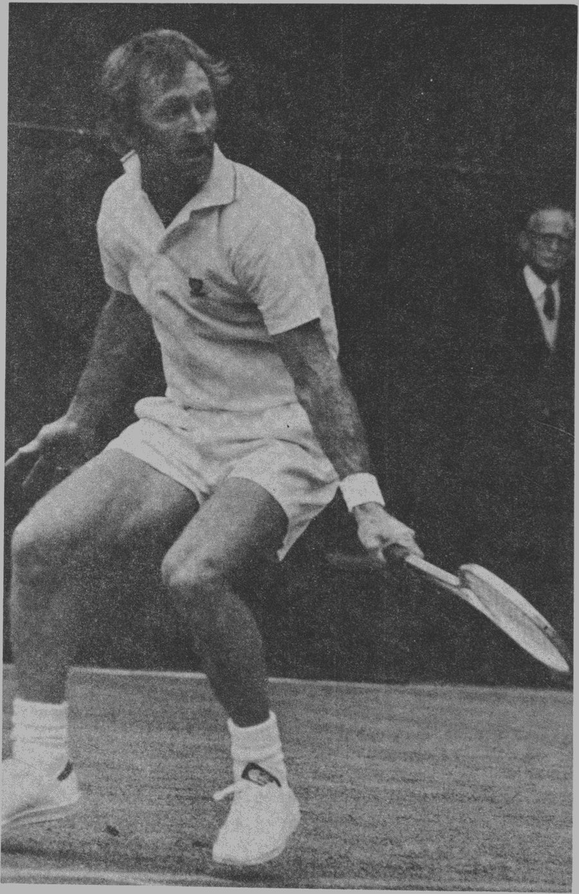
Rod Laver combines determination with a great natural talent to overcome the disadvantage of his relatively small stature.
Như đã gợi ý, một đặc điểm khác của các vận động viên thành công là khát vọng vượt trội của họ. Gọi đó là động lực, sự cống hiến, nhu cầu, sự ép buộc, bất cứ điều gì, đó là một nghĩa vụ mạnh mẽ mà họ tự đặt ra cho mình để chỉ hài lòng với việc trở thành người giỏi nhất và họ sẽ làm việc không mệt mỏi để hoàn thành mục tiêu đó. Hơn nữa (và đây thường là một thuộc tính bị bỏ qua), đôi khi trong tiềm thức, họ cũng đặt cho mình một mục tiêu về thời gian - một thời điểm cụ thể trong cuộc đời khi họ muốn hoàn thành một loạt mục tiêu phụ dẫn đến tham vọng cuối cùng của mình. Và hầu như không có gì có thể khiến họ rời khỏi lịch trình của mình. Bill Tilden, được nhiều người coi là bậc thầy về kỹ năng quần vợt vĩ đại nhất mà môn thể thao này từng thấy, từng nhận xét rằng trong giai đoạn đầu của sự nghiệp, ông cảm thấy sự tiến bộ của mình quá chậm, vì vậy ông đã nghỉ cả năm khỏi mọi hoạt động khác trong cuộc sống để dành mỗi giờ thức giấc để luyện tập trò chơi của mình. Và Ken Rosewall, nói về việc anh ấy hiếm khi có thể về nhà và thư giãn, đã tuyên bố rằng quần vợt đã, đang và phải là một nỗ lực toàn diện, hơn bất cứ điều gì khác trong cuộc sống, để bất kỳ ai trở thành nhà vô địch.
Những cầu thủ hàng đầu cũng rất nhạy cảm với những hạn chế và thuộc tính về thể chất và tinh thần của chính họ. Họ nhận ra rất rõ điểm mạnh và điểm yếu khi chơi của mình, và trong khi dành thời gian để cải thiện điểm yếu, họ nỗ lực hết sức để hoàn thiện điểm mạnh của mình. Cầu thủ bóng rổ Walt - Frazier, khi mới trở thành cầu thủ chuyên nghiệp, đã nhận xét rằng sự khác biệt lớn nhất giữa cầu thủ chuyên nghiệp và cầu thủ đại học là các cầu thủ chuyên nghiệp biết họ làm gì tốt nhất và tận dụng kỹ năng đó để biến nó thành tài sản áp đảo của họ, trong khi các cầu thủ đại học thì không. Johnny Unitas, nhận ra rằng có nhiều tiền vệ tài năng hơn mình trong bóng đá chuyên nghiệp, cũng nhận ra rằng anh ấy có một khả năng kỳ lạ là có thể đọc và điều chỉnh các đội hình phòng thủ khác nhau, vì vậy anh ấy đã không ngừng nghiên cứu các phim trò chơi để hoàn thiện kỹ năng của mình. Liên hệ điều này với thành công của nhóm Vince Lombardi đã đưa ra một tuyên bố kinh điển, “Những đội xuất sắc không làm được những điều phi thường - họ làm những điều bình thường một cách xuất sắc”. Và Billie Jean King có lẽ đã diễn đạt điều đó một cách ngắn gọn nhất khi nói về trận đấu quần vợt của mình: “Tôi cố gắng hoàn thiện những điểm mạnh của mình và khắc phục những điểm yếu của mình một cách thỏa đáng”.
Cuối cùng, và có lẽ là quan trọng nhất, các vận động viên thành công có mức độ tự tin cao về khả năng thi đấu của mình, đặc biệt là dưới áp lực. Golfer Arnold Palmer, khi nói về sự tự tin này, đã nói: "Tôi luôn tin rằng mình sẽ đánh được một cú đánh hoàn hảo. Tôi không bao giờ nghi ngờ rằng mình có thể làm được. Tôi gần như nói với quả bóng rằng: "Hãy đến điểm đó và khi nó không đến, tôi sẽ rất ngạc nhiên." Bill Tilden nhận xét: “Sự hiểu biết về những gì bạn có trong trò chơi của riêng mình và niềm tin chân thành rằng nó sẽ thắng, miễn là nó được chơi với khả năng tốt nhất của bạn - đó là sự tự tin và nó sẽ đưa bạn tiến xa.” Như những ví dụ, tất cả chúng ta chắc chắn đều biết về một cầu thủ có thể đánh một trận đấu tuyệt vời trong thời gian khởi động trước trận đấu, nhưng khi trận đấu bắt đầu thì phản ứng run rẩy, thể hiện ở xu hướng chơi một trò chơi phòng thủ và thận trọng nghiêm ngặt.
Tóm lại, khía cạnh tinh thần của thi đấu thể thao quan trọng hơn nhiều so với những gì đã được đánh giá cao trước đây. Nó quyết định ở mức độ lớn xem ai có thể tận dụng tối đa khả năng thể thao của mình để trở thành người chiến thắng liên tục.
Mặc dù ở đây chúng ta đã xem xét những đặc điểm của những người đã theo đuổi sự nghiệp thể thao nhưng vẫn có những yếu tố áp dụng cho việc thi đấu ở mọi cấp độ. Chìa khóa dường như nằm ở chỗ, để một vận động viên thành công, anh ta phải chân thành mong muốn thành công. Nhưng vì mục đích của chúng ta, đối với hàng trăm nghìn người trong chúng ta là những người chơi quần vợt cuối tuần chứ không phải chuyên nghiệp, chúng ta phải đạt được sự thỏa hiệp giữa chủ nghĩa quyết định khốc liệt đặc trưng cho người chơi chuyên nghiệp và xu hướng chơi quần vợt của chúng ta để thua. Tuy nhiên, ở bất kỳ cấp độ chơi nào, thắng vẫn vui hơn thua. Những người chơi có thói quen thua thường sẽ hợp lý hóa thói quen của mình bằng cách đưa ra nhận xét rằng bản thân trò chơi quan trọng hơn chiến thắng. Họ cố gắng giải thích rằng chính sự phấn khích của trò chơi mới là điều bổ ích chứ không phải là điểm số. Bất cứ khi nào tôi nói chuyện với ai đó thể hiện triết lý đó, tôi thừa nhận với họ rằng tất nhiên có điều gì đó kích thích. về việc chỉ cần ở trên sân và đánh bóng qua lưới, nhưng loại phấn khích đó phần lớn là cảm giác thể chất, trong khi sự mê hoặc tâm lý của quần vợt được phản ánh và liên quan trực tiếp đến tần suất chiến thắng. “Nếu bạn thích trò chơi nhiều như bạn nói,” tôi hỏi họ, “mặc dù bạn thường xuyên thua, nhưng không thể tưởng tượng được rằng bạn sẽ còn thích thú hơn nữa nếu bạn có thể thắng nhiều hơn?” Và thực lòng tôi không biết ai có thể nói một cách chân thành rằng anh ấy sẽ không thích thành công hơn ở môn quần vợt như hiện tại. Chơi tốt hơn những gì bạn từng có hoặc từng mơ ước có thể thực hiện được là một hành vi tự cao thực sự. Quần vợt bản thân nó là một hoạt động theo đuổi hấp dẫn, nhưng việc tham gia toàn bộ là để phát huy hết tiềm năng của bạn.
Bây giờ, yếu tố quan trọng nhất trong việc thúc đẩy thành công trong trò chơi của bạn là thái độ của bạn về khả năng của mình. Đơn giản là, nếu hình ảnh quần vợt của bạn tiêu cực thì trò chơi của bạn cũng sẽ như vậy. Có lẽ tôi có thể minh họa điều này rõ nhất bằng cách kể cho bạn nghe về một vài người bạn của tôi. Một người, thực ra là một tay chơi quần vợt rất điêu luyện, là hiện thân của một người lường trước được thất bại. Đôi khi anh ta sẽ chơi một môn quần vợt thực sự xuất sắc, thực hiện các cú đánh của mình như một kiệt tác về kỹ thuật và đánh bại đối thủ một cách triệt để. Và sau đó, nếu anh ta đánh một vài cú đánh tồi liên tiếp và thua một vài trận đấu đối kháng, anh ta sẽ, không có ngoại lệ, đưa ra nhận xét dưới dạng nào đó, “Tôi biết điều đó không thể kéo dài.” Nói cách khác, anh ấy thực sự mong đợi rằng vào một thời điểm nào đó trong trận đấu, anh ấy sẽ thất bại, và anh ấy không hề ngạc nhiên chút nào khi điều đó xảy ra. Trong những trường hợp khác, anh ta có thể bắt đầu trận đấu một cách tồi tệ, có thể là giao bóng bị hỏng trong ván đầu tiên, và khi đổi sân, anh ta sẽ nhận xét với đối thủ của mình, “Chà, một ngày tồi tệ nữa lại bắt đầu”. Và tất cả điều này đến từ một người chơi có kỹ năng đặc biệt! Anh ấy là một ví dụ điển hình cho câu châm ngôn “Tôi biết tôi không thể làm được điều đó!”
Ngược lại, một người bạn khác của tôi thì ngược lại. Lần đầu tiên chúng tôi thi đấu với nhau, anh ấy đã thắng khá dễ dàng, và sau trận đấu, tôi đã hứa với anh ấy rằng lần sau chúng tôi thi đấu tôi sẽ cho anh ấy một thử thách tốt hơn nhiều.
“Có lẽ,” anh ấy nói, “nhưng bạn sẽ không thắng.”
"Ồ vậy ư?" Tôi hỏi, ngạc nhiên trước sự thẳng thắn của anh ấy, “Tại sao không?”
“Bởi vì tôi không cho phép anh làm thế!” là câu trả lời nhanh chóng của anh ấy.
Lúc đó tôi không nhận ra anh ấy nghiêm túc đến mức nào. Và tôi thực sự không biết chính xác ý anh ấy là gì. Nhưng tôi làm bây giờ. Mỗi khi chúng tôi chuẩn bị bắt đầu một trận đấu, anh ấy đều nói với tôi hoặc bất kỳ ai khác mà anh ấy thi đấu với rằng ý định của anh ấy là giành chiến thắng. Và anh ấy nói điều đó một cách không chắc chắn. Và khi trận đấu diễn ra, anh ấy thỉnh thoảng đưa ra những phản hồi để nhắc nhở bạn về quyết tâm của mình, kẻo bạn quên mất. Anh ấy quyết tâm giành chiến thắng (và anh ấy đã làm được) đến mức anh ấy sẽ không cho phép mình thua cuộc. Và lý do anh ta không thua, trong suy nghĩ của chính anh ta, đơn giản là vì anh ta sẽ không thua.
Dù sao đi nữa, và tôi rất chắc chắn về điều này, thành công trong thể thao là sự kết hợp của nhiều yếu tố, trong đó quan trọng nhất là tâm lý của người biểu diễn. Có niềm tin mãnh liệt và chân thành vào khả năng thành công hoặc trở nên thành công của chính bạn là điều tuyệt đối cần thiết để tiến bộ. Cho dù bạn có nhận ra hay không thì bạn vẫn chơi quần vợt theo đúng cách mà bạn nghĩ mình có thể. Sự thành công trong trò chơi của bạn rất phù hợp với hình ảnh bản thân của bạn.
Vì vậy, nếu sự tiến bộ của bạn trong môn quần vợt bị đình trệ, rất có thể hình ảnh quần vợt của bạn phải được thay đổi. Và thực sự nó có thể được thay đổi. Và sự thay đổi đó sẽ làm tăng khả năng học hỏi và tiến bộ của bạn. Khi đó mọi thứ về quần vợt, bao gồm cả sự thích thú của bạn với môn quần vợt, sẽ được nâng cao.
Luyện tập tinh thần các kỹ năng quần vợt
Cách thứ hai mà lập trình điều khiển học có thể được sử dụng để cải thiện kỹ năng chơi quần vợt của bạn, thoạt nhìn, có vẻ hơi thần bí.
Gần đây, lĩnh vực giáo dục thể chất đã đưa ra một lý thuyết cho rằng chỉ cần nghĩ về việc làm điều gì đó sẽ tạo ra một mô hình điện trong các cơ liên quan đến người thực sự làm việc đó, mặc dù người đó có thể đang ngồi trên ghế vào lúc này. Ví dụ, khi một người thấy mình đang thực hiện chuỗi đánh một quả bóng tennis, các điện thế hoạt động điện nhỏ sẽ được tạo ra trong hành động công khai thực tế sẽ được nhân đôi, mặc dù ở quy mô nhỏ hơn. Do đó, hình ảnh tinh thần về một hành động, được định hướng đúng đắn, có thể được sử dụng để hỗ trợ đạt được sự phối hợp thực hiện hành động đó.
Hình ảnh tinh thần như vậy đã được sử dụng trong nhiều thế kỷ và đã được nghiên cứu một cách khoa học ít nhất là vào đầu năm 1890. Nhưng chỉ gần đây, toàn bộ khả năng ứng dụng của nó mới bắt đầu được hiện thực hóa. Trong khi các cuộc điều tra trong phòng thí nghiệm có kiểm soát đang diễn ra để khám phá tiềm năng, những cuốn sách nổi tiếng đã giúp công chúng làm quen với ý tưởng cơ bản. (Tôi đặc biệt đề cập đến Sức mạnh của tư duy tích cực của Norman Vincent Peale và Tâm lý điều khiển học của Maxwell Maltz).
Giả thuyết trong mọi trường hợp là cá nhân tạo ra một kiểu tự thôi miên có ý thức hoặc tự gợi ý, trong đó anh ta thực sự hình dung mình đạt được một mục tiêu nhất định hoặc thực hiện một hành động nhất định và nỗ lực này sẽ tăng cơ hội cho anh ta đạt được mục tiêu đó thực sự xảy ra. Đó là một quá trình thiết lập một mục tiêu, một mục tiêu rõ ràng và sau đó tạo ra một bức tranh tinh thần, thông qua việc sử dụng trí tưởng tượng, về việc đạt được mục tiêu đó. Nó bao gồm việc đặt ra các mục tiêu hợp lý, thực hành và trải nghiệm hình ảnh tinh thần về các mục tiêu đó, sau đó hành động một cách có ý thức để đạt được chúng.
Hiện nay, các giáo viên dạy quần vợt hoặc bất kỳ hoạt động thể chất nào theo truyền thống đều chỉ nghĩ đến việc luyện tập dưới góc độ thành tích công khai. Lượng học tập và cải thiện trong một hoạt động được coi là có mối quan hệ trực tiếp với thời gian dành cho luyện tập thể chất. Một kiểu nghiêng về làm. Nhưng nghiên cứu gần đây liên quan đến các khả năng điều khiển học đã chỉ ra rằng sự cải thiện trong một hoạt động thể chất có thể đạt được chỉ bằng cách nghĩ về việc thực hiện hoạt động đó.
Văn học đã sử dụng thuật ngữ “thực hành tinh thần” để biểu thị sự thực hành nội tâm hoặc bí mật này đối với một nhiệm vụ thể chất. Nó liên quan đến việc khái niệm hóa, thực sự tạo ra một bức tranh tinh thần về một hoạt động thể chất. Ví dụ, nó có nghĩa là thực sự nhìn thấy bản thân bạn thực hiện chuyển động giao bóng tennis, đánh một cú trái tay mượt mà, hoặc lao vào lưới để thực hiện một cú vô lê kết thúc điểm. Và tất cả đều dựa trên mối quan hệ chặt chẽ được công nhận hiện nay giữa tâm trí và cơ thể.
Từ lâu người ta đã biết rằng hoạt động thể chất làm tăng hoạt động điện của não. Và người ta cũng biết rằng, ngay cả khi một người đang nghỉ ngơi, anh ta vẫn có thể tăng cường hoạt động điện của cơ chỉ bằng cách tập trung vào vấn đề tâm thần. Điều hiện đang được nhận ra là có thể điều khiển hoạt động tinh thần của một người để tăng hiệu quả trong các phản ứng của cơ.
Tất cả chúng ta đều đã sử dụng sự thực hành tinh thần ở một mức độ nào đó. Chúng ta có thể hình dung mình mua một chiếc ô tô mới, được thăng chức trong công việc hoặc trở thành một vận động viên xuất sắc. Điều này đã ảnh hưởng hoặc định hướng năng lượng của chúng ta đến mức nào chỉ là vấn đề suy đoán, vì trong hầu hết các trường hợp, đó chỉ là sự mơ mộng. Có lẽ ví dụ điển hình hơn về thực hành tinh thần là kiểu hình dung mà chúng ta thực hiện khi cố gắng giải một câu đố cơ học, hoặc khi chúng ta đang sửa sang nhà cửa và chúng ta có thể nhìn thấy sản phẩm cuối cùng ngay cả trước khi bắt đầu. Trong quần vợt, tất cả chúng ta đôi lúc đều nghĩ về màn trình diễn của mình, nhưng phần lớn điều này chỉ là nhận thức muộn màng khi chúng ta xem xét lại những sai lầm của mình thay vì sử dụng sự luyện tập tinh thần để lập trình cho màn trình diễn trong tương lai.
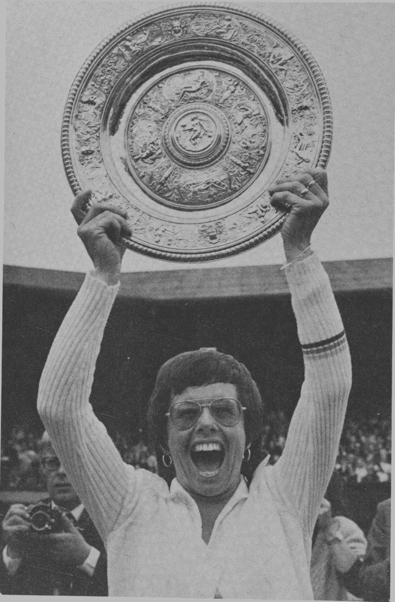
Billie Jean King, with drive and probably the most keen competitive instinct, has fought her way time and again to her rightful position as the best women's tennis player in the world.
Có hai lý do rất chính đáng tại sao mọi người muốn cải thiện khả năng chơi quần vợt của mình nên áp dụng việc luyện tập tinh thần. Quan trọng nhất, nó sẽ dẫn đến một trò chơi tốt hơn. Và thứ hai, nó có thể phần nào bù đắp cho việc thiếu thời gian mà tất cả chúng ta dành cho việc rèn luyện thể chất các kỹ năng chơi quần vợt.
Tôi nên chỉ ra rằng tôi không hề đề xuất việc luyện tập quần vợt trong đầu như một sự thay thế hoàn toàn cho việc luyện tập thể chất một cách công khai. Nhưng bằng cách tạo thói quen suy nghĩ và phân tích trò chơi của mình, bạn sẽ có thể đảm bảo sử dụng tốt hơn khả năng của mình. Nghiên cứu xác minh điều này. Các nghiên cứu có kiểm soát về việc rèn luyện tinh thần các kỹ năng thể thao đã chỉ ra rằng nó có lợi cho việc thực hiện kỹ năng đó. Hãy để tôi cho bạn một vài ví dụ.
Trong một nghiên cứu, ba nhóm nam sinh trung học, mỗi nhóm có khả năng ngang nhau, được đưa ra các biến số sau. Một nhóm thực hành 25 quả ném phạt bóng rổ hàng ngày; một nhóm khác không làm gì cả; và nhóm thứ ba đến phòng tập thể dục, nhưng ngồi xuống và tưởng tượng mình đang thực hiện 25 quả ném phạt. Sau mười bốn ngày, các nhóm đã được kiểm tra. Nhóm luyện tập thể chất cho thấy sự cải thiện 25%, nhóm nghỉ ngơi không có sự cải thiện nào, và nhóm sử dụng phương pháp luyện tập tinh thần cho thấy sự cải thiện đáng kinh ngạc là 24%. Các kết quả tương tự, tất cả đều được báo cáo trên các tạp chí khoa học được công nhận, đã được thể hiện trong các nghiên cứu áp dụng thực hành tinh thần vào các kỹ năng thể dục, ném để đạt độ chính xác, bơi lội và các kỹ năng mới lạ như tung hứng. Tất cả đều nhận thấy việc luyện tập tinh thần có lợi cho hiệu suất.
Hai nghiên cứu đã được báo cáo trong đó việc luyện tập tinh thần đã được áp dụng vào quần vợt. Một nghiên cứu sử dụng 183 sinh viên đại học nam làm đối tượng và nghiên cứu còn lại sử dụng 75 sinh viên đại học nữ. Cả hai nghiên cứu đều chia các đối tượng của họ thành ba nhóm tương đương, sau đó yêu cầu một nhóm thực hành các cú công bóng thuận tay và trái tay hàng ngày, một nhóm khác không làm gì và nhóm thứ ba chỉ luyện tập trong đầu các cú công bóng thuận tay và trái tay. Đúng như dự đoán, nhóm luyện tập thể chất trong mỗi nghiên cứu cho thấy sự cải thiện đáng kể, trong khi những nhóm không tập luyện cho thấy không có sự cải thiện nào. Nhưng phát hiện đáng kinh ngạc là, trong cả hai nghiên cứu, nhóm luyện tập đều cải thiện tinh thần gần như nhóm luyện tập thể chất, mặc dù họ chưa bao giờ chạm vào vợt tennis trong các buổi luyện tập.
Nhưng bây giờ, trước khi chúng ta chấp nhận niềm tin mù quáng rằng luyện tập tinh thần có thể giúp ích cho trò chơi của chúng ta, chúng ta phải thiết lập một số hướng dẫn cho việc sử dụng nó. Để có hiệu quả, việc thực hành tinh thần phải được thực hiện đúng cách. Người ta không thể chỉ ngồi yên, nghĩ đến việc trở thành Ken Rosewall hay Billie Jean King và để điều đó xảy ra. Điều đó sẽ chỉ là ảo giác. Nhưng bằng cách xem xét kỹ hơn những nghiên cứu sử dụng thực hành tinh thần, chúng ta có thể đưa ra một số kết luận thực tế về cách sử dụng nó một cách tốt nhất.
Không có một chút bằng chứng nào cho thấy rèn luyện tinh thần vượt trội hơn luyện tập thể chất, nhưng kết quả kiểm tra đã chỉ ra rằng luyện tập tinh thần hiệu quả nhất khi được sử dụng kết hợp với luyện tập công khai. Do đó, khi một người luyện tập cả về thể chất và tinh thần một kỹ năng thể thao, sự cải thiện có thể được mong đợi sẽ vượt xa những gì sẽ đạt được khi chỉ sử dụng một trong hai kỹ năng đó.
Nhưng có một điều rất quan trọng cần cân nhắc trước khi bất kỳ ai cũng có thể áp dụng phương pháp thực hành tinh thần. Loại diễn tập kỹ năng điều khiển học này chỉ có thể được sử dụng bởi những người đã có đủ kinh nghiệm trong môn thể thao này để có thể nhận ra đâu là kỹ thuật trái ngược với đâu là kỹ thuật không hiệu quả. Một người thiếu kinh nghiệm sẽ không thể biết nên tập trung sự chú ý của mình vào điều gì, giống như cố gắng luyện tập trong đầu việc lái máy bay nếu bạn chưa bao giờ nhìn thấy bảng điều khiển. Trừ khi bạn biết các cơ chế tạo ra những cú đánh quần vợt hiệu quả, nếu không bạn không thể luyện tập những cơ chế đó trong đầu. Có thể hình dung rằng nếu luyện tập sai kỹ thuật trong tâm trí thì kỹ thuật sai sẽ được học.
Sau đó, với sự thừa nhận rằng luyện tập tinh thần có thể dẫn đến sự cải thiện về kỹ năng - rằng nó tạo ra hoạt động điện trong cơ và có thể tạo ra một kênh thần kinh về các chuyển động liên quan đến một kỹ năng - câu hỏi đặt ra là làm thế nào để áp dụng đúng tiềm năng của nó. Đối với nhiều người trong chúng ta muốn cải thiện khả năng chơi quần vợt của mình, cách tốt nhất để sử dụng phương pháp luyện tập tinh thần này là gì?
Đầu tiên cần phải nói rằng chưa ai có được tất cả các câu trả lời. Không có kiến thức khoa học nào về việc liệu có những loại thực hành tinh thần khác nhau hay không. Cũng không ai biết chính xác nên dành bao nhiêu thời gian cho việc luyện tập tinh thần so với luyện tập thể chất. Nhưng có vẻ như nó có thể mang lại lợi ích cho mọi người chơi quần vợt còn sống, theo những nguyên tắc sau.
Đầu tiên, và có lẽ là quan trọng nhất, việc luyện tập trong tâm trí phải thực sự tạo ra cảm giác năng động của chuyển động công khai. Ví dụ, nếu bạn đang luyện tập trong tâm trí việc giao bóng, bạn nên thực sự cảm thấy mình đang thực hiện chuyển động, đôi khi thử nó với đôi mắt mở và đôi khi lại nhắm mắt lại. Điều này đòi hỏi một số kỷ luật tinh thần, nhưng rất quan trọng vì khi bạn thực hiện cú giao bóng một cách công khai, bạn không thực sự nhìn thấy nó, do đó việc luyện tập tinh thần phải hướng đến cảm giác của cú giao bóng.
Thông thường, việc thực hành trong tâm trí nên được hình dung ở cùng tốc độ mà bạn sẽ thực hiện kỹ năng bên ngoài. Hãy tưởng tượng bạn đang đánh một cú trái tay với tốc độ tương đương với tốc độ mà bạn thực hiện hành động đó. Tuy nhiên, để thay đổi thói quen, thỉnh thoảng hãy hình dung mình đang thực hiện kỹ năng đó trong chuyển động chậm. Bằng cách này, bạn có thể nhìn, cảm nhận và phân tích mọi khía cạnh của kỹ năng.
Toàn bộ kỹ năng cần được luyện tập trong đầu chứ không chỉ một phần. Điều này bao gồm bất kỳ hoạt động nào dẫn đến việc thực hiện kỹ năng trên thực tế. Ví dụ, giả sử bạn đang luyện tập cú giao bóng trong đầu. Sau đó, hình ảnh trong đầu của bạn nên bao gồm bất kỳ chuyển động sẵn sàng nào bạn thực hiện trước khi giao bóng, chẳng hạn như điều chỉnh vị trí chân của bạn phía sau vạch cuối sân, nảy bóng, nhắm mục tiêu, v.v. Một số người gợi ý rằng bạn thậm chí có thể hình dung mình đang bước lên vạch sau điểm trước đó. Và sau đó việc luyện tập trong tâm trí sẽ đưa bạn qua toàn bộ quá trình thực hiện cú giao bóng, bao gồm cả việc tưởng tượng đường bay của quả bóng khi nó rời khỏi vợt của bạn.
Hãy giữ những buổi thực tập tinh thần khá ngắn, có lẽ không quá năm phút, nhưng hãy thực hiện thường xuyên. Thời điểm tuyệt vời để thực hiện các buổi luyện tập tinh thần ngắn là khi bạn đang đọc phần mô tả về một kỹ năng chơi quần vợt. Hãy ngừng đọc thường xuyên, hình dung kỹ năng đang được thảo luận và sau đó quay lại bài đọc.
Hãy rèn luyện tinh thần ngay trước, trong và sau một trận đấu quần vợt. Hãy hình dung ra mọi kỹ năng trong đầu bạn ngay trước khi bạn thực hiện nó. Và sau mỗi điểm, hãy nhanh chóng xem xét hiệu suất của bạn, phân tích nó và hình thành hình ảnh về những điều chỉnh của bạn, nếu cần. Giả sử rằng trước đây bạn chưa bao giờ thực sự nghĩ đến việc thực hành tinh thần, thì có lẽ bạn đã thực hiện điều này từ lâu, mặc dù là trong tiềm thức. Một số người chơi mà tôi biết, sau khi đánh một cú đánh kém, sẽ bắt chước cú xoay mà lẽ ra họ nên sử dụng. Những gì họ đang làm, mặc dù họ có thể chưa thực sự nghĩ về điều đó, là luyện tập động tác xoay người đúng thay vì ghi nhớ cú đánh kém. Và một số người chơi sẽ nhắc nhở bản thân bằng lời nói trong suốt trận đấu để thực hiện một số nguyên tắc cơ bản nhất định vốn là bản chất thứ hai trong trò chơi của họ.
Luyện tập tinh thần không chỉ để cải thiện các kỹ năng thể chất trong môn quần vợt mà còn để luyện tập chiến lược chơi. Thông thường, khi một cầu thủ thể hiện một khả năng kỳ lạ là dường như luôn đưa ra phản ứng chính xác về vị trí đặt bóng và vị trí sân của mình, anh ta được cho là có “ý thức trò chơi” tốt. Tuy nhiên, rất có thể điều anh ta đã làm là xem xét trong đầu những khả năng có thể xảy ra trong từng tình huống và đưa ra lựa chọn của mình trên cơ sở xác suất. Một tiền vệ bóng chày giỏi thực hiện điều này khi anh ta suy đoán trong đầu về các khả năng khác nhau của một tình huống nhất định - số lần ra ngoài, tốc độ của người chạy trên sân, nơi bóng có thể bị đánh, ete - và sau đó nếu bóng được đánh vào anh ta, anh ta có nhiều khả năng sẽ ném đến căn cứ thích hợp hơn. Quần vợt mang lại cơ hội tương tự ở chỗ có khoảng dừng giữa mỗi điểm mà tại thời điểm đó bạn có thể hình dung chiến lược của mình cho điểm tiếp theo. Ví dụ: khi nhận giao bóng, bạn có thể nghĩ đến nơi bạn muốn thực hiện cú trả giao bóng, tùy thuộc vào vị trí nó được đánh vào bạn, trước khi đối thủ của bạn thực hiện giao giao bóng. Và trong suốt trận đấu, bạn nên xem xét một cách nhận thức mức độ thành công tương đối trong kế hoạch trò chơi của mình và thực hiện những thay đổi cần thiết để tăng cơ hội thành công trong tương lai.
Khi đó, việc luyện tập tinh thần có thể được sử dụng để lập trình thành công cho trò chơi quần vợt của bạn. Đó là sự chuẩn bị cho hoạt động thể chất và điều quan trọng là tất cả người chơi muốn cải thiện trò chơi của mình phải học cách kết hợp hình ảnh điều khiển học này vào kế hoạch luyện tập của họ. Bộ não của chúng ta thực sự không thể phân biệt được sự khác biệt giữa hàng thật. trải nghiệm và trải nghiệm được tưởng tượng một cách sống động, do đó, việc luyện tập trong đầu một kỹ năng thể chất, được sử dụng đúng cách, thực sự có thể lập trình cho chúng ta để đạt được hiệu suất trôi chảy, dễ dàng, phối hợp và thành công.
Tóm lại, rất ít người nhận ra tiềm năng về mặt tinh thần của quần vợt. Hầu hết việc luyện tập các kỹ năng chỉ giới hạn ở thể chất. Tuy nhiên, có một “người điều hành” điều khiển học tuyệt vời trong mỗi bộ não của chúng ta có thể lập trình cho chúng ta thành công hay thất bại. Nó có thể vượt qua những trải nghiệm giác quan, trở nên tự động hóa để tạo ra hiệu suất công khai hiệu quả hơn. Và thay vì là một hệ thống tiếp nhận thụ động, điều khiển học là một hệ thống sản xuất, chủ động.
Đây là những điểm cần nhớ:
1. Có những mục tiêu rõ ràng và có thể đạt được trong quá trình chơi quần vợt của bạn. Và khi bạn đạt được những mục tiêu đó, hãy thiết lập lại chúng ở mức độ cao hơn (nhưng có thể đạt được).
2. Trong đầu hãy tưởng tượng bạn đang hoàn thành mục tiêu của mình. Hãy cố gắng thực sự tạo ra cảm giác chơi quần vợt thành công.
3. Sử dụng hình ảnh tinh thần này để thực hành các kỹ năng thể chất thực tế, đồng thời cố gắng nhìn và cảm nhận bản thân đang thực hiện những kỹ năng đó.
4. Hãy quan tâm đến những điều tích cực về trò chơi của bạn thay vì những điều tiêu cực. Nếu bạn không thể tránh khỏi lo lắng, ít nhất hãy lo lắng về khía cạnh tích cực, chẳng hạn như liệu bạn có thể thực hiện được 75% số lần giao bóng đầu tiên của mình hay không, thay vì lo lắng về việc liệu bạn có thực hiện được quả giao bóng nào hay không.
5. Hãy nhớ rằng thái độ của bạn về khả năng thi đấu của bản thân, hình ảnh quần vợt của bạn, là sản phẩm của chính tâm trí bạn. Những suy nghĩ duy nhất bạn có về khả năng của mình là những suy nghĩ do chính bạn đặt ra.
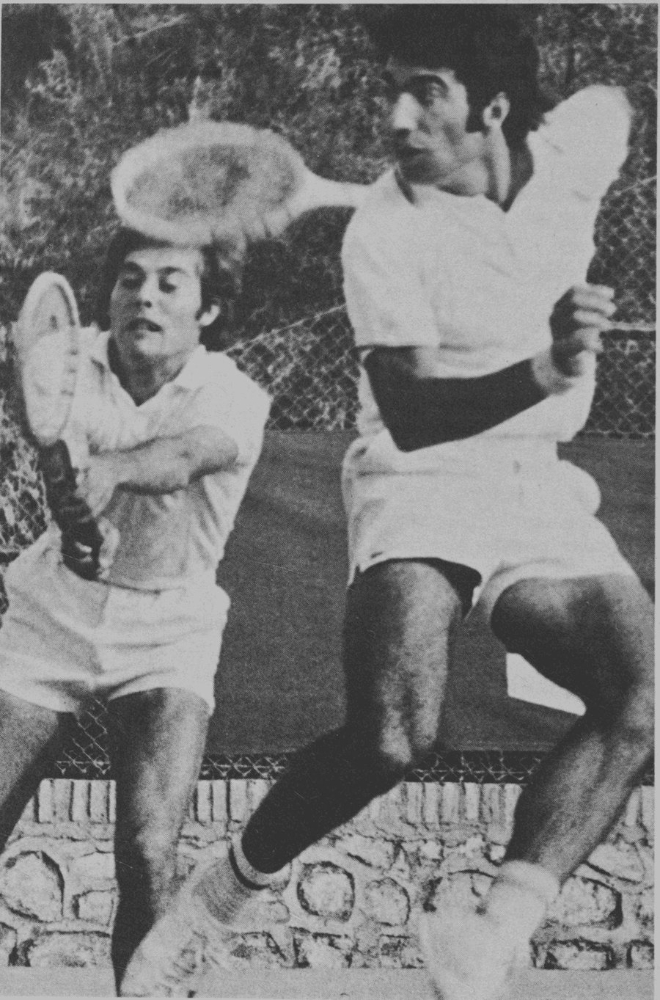
Concentration and effort, two winning characteristics, show clearly in this photo of Manolo Orantes and Ramon Munoz playing in an exhibition match at Lew Hoad's Camp de Tenis in Spain.
Chương 4
Khuynh Hướng Thắng – Thua Trong Quần Vợt
Timothy Noonan — Đội quần vợt vô địch NCAA Stanford, Stanford, California
Trong quần vợt, trong thể thao và trong cuộc sống, có rất nhiều người thất bại, thành đạt quá mức và kém thành tích, thắng cái này và thua cái kia. Vì hàng ngàn lý do khác nhau, chúng dường như không bao giờ là gì khác ngoài những điều tầm thường. Tuy nhiên, ở mỗi đầu của quang phổ, có những cá nhân luôn đứng cuối cùng và những người khác dường như hết lần này đến lần khác nổi lên ở vị trí dẫn đầu. Tôi muốn kiểm tra tính cách của những người cực đoan này. Chính đặc điểm thắng thua này thường chi phối hoàn toàn một cầu thủ, cả một đội và cuối cùng là kết quả của cuộc thi. Quần vợt là môn thể thao trong đó việc trở thành người chiến thắng là rất quan trọng do tính chất cá nhân của trò chơi và vì không có tỷ số hòa hoặc hòa; chỉ có thể dẫn đến thắng hoặc thua. Thông qua quần vợt, chúng ta sẽ xem xét các hiện tượng của những tính cách hướng tới thành công và thất bại.
Một trong những tay vợt trẻ hơn ở giải trẻ quốc gia bước nhanh vào hội quán nơi các tay vợt khác đang tụ tập và có phần hào hứng thông báo rằng Sparky, hạt giống số một, đã bị dẫn 4-1 trong set thứ ba, trong trận đấu ở vòng hai. Hai lần nghỉ dịch vụ! Một vài người cựa quậy, và giữa tiếng xì xào chung chung, họ rời đi để xem xét tình hình. Những người chơi lớn tuổi chỉ mỉm cười với nhau, không lo lắng về Sparky, và ai đó đã nói điều gì đó về việc “làm điều đó mọi lúc”. Ba mươi phút và hai điểm trận đấu với anh sau đó, Sparky giành chiến thắng với tỷ số 7-5 trong set thứ ba.
Bjorn Krugger đã đi vòng quanh thế giới trong 5 năm và chơi Davis Cup cho đất nước của mình. (Anh ấy thực sự là tay vợt đẳng cấp thế giới duy nhất ở đất nước mình.) Trên đường đua, anh ấy luôn được tôn trọng, nhưng không bao giờ bị các nhà vô địch lâu năm Newcombe, Laver, Rosewall và những người khác sợ hãi. Thường xuyên, tên của họ xuất hiện trong lễ bốc thăm với tư cách là người chiến thắng cuối cùng, thì Bjorn cũng vậy với tư cách là kẻ thua cuộc ở hiệp thứ ba và đôi khi là thứ tư. Không bao giờ xa hơn nữa. Đây là một điều bí ẩn đối với tất cả mọi người vì trò chơi của Bjorn thường được xếp vào loại một trong những trò chơi hay nhất và hay nhất thế giới, xét về tiềm năng thô sơ. Anh thậm chí còn được ca ngợi ở tuổi 19 như người thừa kế ngai vàng quần vợt. Tuy nhiên, anh ấy chưa bao giờ hoàn thành được những gì được mong đợi ở anh ấy. Bây giờ, cũng như nhiều lần trước, anh đã tiến rất gần đến chiến thắng đậm (lần này là trước hạt giống số 3) ở vòng 4 Wimbledon. Anh ấy đang dẫn trước hai set với một và break giao bóng ở set thứ tư, nhưng khi anh ấy nhận ra rằng trận đấu thực sự nằm trong vợt của mình và anh ấy chỉ cần giữ giao bóng thêm ba lần nữa, anh ấy trở nên hơi bất cẩn một chút và ngay lập tức trận đấu dường như tuột khỏi tay anh ấy. Một vài người chiến thắng quan trọng trước đối thủ của anh ấy đã bẻ giao bóng của anh ấy, và một tiebreak mà anh ấy không bao giờ có được trong trận đấu ở hai set mỗi người. Set thứ năm 6-3 thường lệ với anh ấy đã đưa mỗi tay vợt đến vị trí quen thuộc của anh ấy – Bjorn ngồi ngoài, hạt giống thứ ba vào tứ kết. Và theo như Bjorn (và hầu hết những người khác) có thể thấy, không có lý do thực sự nào khiến anh ấy thua cuộc.
Kết quả trận đấu của cả Sparky và Bjorn đều không liên quan nhiều đến trận đấu của họ. Nếu Sparky và Bjorn gặp nhau, rất có thể Sparky sẽ thắng nếu anh ấy ở gần tầm cỡ của Bjorn, hoặc thậm chí nếu anh ấy chơi kém hơn một chút. Nhưng có nhiều thứ liên quan hơn. Vấn đề là Sparky đã thắng trận đấu của mình và Bjorn thua trận, không phải ở khả năng của họ mà ở sức mạnh tuyệt đối của xu hướng thành công hay thất bại trong các nhân vật của họ. Hơn nữa, mỗi cái đại diện cho một phần nào đó của mỗi người - xu hướng thành công và thất bại. Hầu hết chúng ta đều có một chút cả hai, nhưng trong bất kỳ hoàn cảnh nào cũng chỉ có hai lựa chọn thay thế: thành công và thất bại, và khi nước tự tìm được mực nước riêng, người chiến thắng cũng sẽ tìm cách thành công và kẻ thua cuộc sẽ tìm cách thất bại.
Mỗi người chơi tự mãn tại một giải đấu quần vợt không nhất thiết là người chiến thắng, cũng không phải người khuất phục và nhút nhát là kẻ thua cuộc. Cách chắc chắn nhất để nói đại khái cái nào là nhìn vào các hạt giống ở đầu kết quả rút thăm. Họ là những người đã thắng trong quá khứ. Nhưng không có công thức nào để trở thành người có định hướng thành công, thậm chí bằng cách nghiên cứu tính cách của tất cả những vĩ nhân trên thế giới, bởi vì điều kiện như vậy là một trạng thái tinh thần độc nhất của người đó, một cách nhìn nhận bản thân với sự kết hợp giữa hiểu biết, lẽ thường, kỷ luật, kinh nghiệm và thậm chí có thể là một số ảo tưởng.
Ngay cả khi một đơn thuốc thành công có thể được trao cho một cầu thủ, tôi nghi ngờ rằng nó sẽ mang lại lợi ích gì cho anh ta vì nếu không tự mình đạt được nó, anh ta sẽ không tin và cũng không hiểu cách kiểm soát nó. Nhưng mặc dù những phẩm chất này là riêng biệt của mỗi cá nhân, nhưng có rất nhiều điểm tương đồng trong khuôn khổ tinh thần của tất cả các nhà vô địch. Cơ bản trong số những điểm tương đồng này là những phẩm chất mà ít người khác có được - sự kiên định, kỷ luật, chủ nghĩa thực tế và lòng dũng cảm.
Tính nhất quán của một nhân vật hướng tới thành công có lẽ là phẩm chất dễ xác định nhất, vì người chiến thắng đã tìm thấy trong trạng thái tinh thần của mình một cách tiếp cận các trận đấu, thường không thể xác định được, mà anh ta sẽ theo đuổi. Người thua cuộc đơn giản là chưa tìm thấy nó. Do đó, hết lần này đến lần khác, chúng ta có thể khái quát về phong cách của một nhà vô địch cũng như tính cách của anh ta trong và ngoài sân đấu. Những ý tưởng bất chợt hoặc phong cách sống của anh ấy có thể thất thường, nhưng hiếm khi có những màn trình diễn của anh ấy. Nếu đúng như vậy, anh ấy sẽ không phải là người chiến thắng liên tục. Mặt khác, kẻ thua cuộc thường không thể đoán trước được. Hôm nay anh ta có thể tạo ra một màn trình diễn xuất sắc, nhưng với điều kiện tương tự vào ngày hôm sau, anh ta có thể thấy anh ta chơi một cách thảm hại. Người thua cuộc thường sẽ tìm ra câu trả lời cho câu hỏi “có chuyện gì vậy?” nhưng sau một thời gian, anh ấy có biết cách trả lời câu hỏi “điều gì là đúng?” Trong quá trình tìm cách tiến bộ, người thua cuộc liên tục thay đổi cách tiếp cận và lối chơi của mình, hiếm khi giữ được một phong cách đủ lâu để vượt qua những thất bại tạm thời phải đến nhằm phát triển sức mạnh để đạt được thành tích thành công nhất quán. Tiềm năng, khả năng là có. Điều này đã được chứng minh qua sự xuất sắc thường xuyên. Nhưng khả năng này và việc không đạt được thành tích nhất quán, bất chấp những nỗ lực đáng kể, khiến anh ta rơi vào tình trạng có định hướng thất bại.
Một yếu tố quan trọng khác trong quá trình phát triển thành công của bất cứ điều gì - con người, vận động viên, doanh nhân - là kỷ luật. Sự khác biệt giữa người có kỷ luật và người vô kỷ luật rất dễ nhận ra. Cần có kỷ luật để rèn luyện và làm việc để đạt đến đỉnh cao. Cần phải có kỷ luật để luôn đạt được hiệu suất cao nhất. Cần có kỷ luật để từ chối những hình thức không nhất quán, đồng thời tiếp tục và giải quyết khía cạnh đang tạm thời chùn bước trong trò chơi của bạn, đồng thời cần có kỷ luật để xử lý các vấn đề nảy sinh khi đứng đầu. Nếu ai đó buông lỏng bất kỳ kỷ luật nào trong số này, thì sự sa ngã của người đó sắp xảy ra. Thực tế là vấn đề có nhiều mặt và rất cần thiết để trở nên mạnh mẽ trong mọi việc, khiến nó có lẽ là quy luật quan trọng nhất và bị vi phạm nhiều nhất trong bốn quy luật thành công.
Chủ nghĩa hiện thực phải đi cùng với thành công. Người chơi quần vợt chiến thắng phải thực tế với sự tự tin và cơ hội của mình trong một trận đấu hoặc giải đấu cụ thể, tuy nhiên đôi khi một chút ảo tưởng về bản thân cũng là cần thiết. Nói cách khác, sự thiếu tự tin và quá tự tin đều gây tử vong, tuy nhiên nếu một người chơi phải đối mặt với tỷ lệ áp đảo chống lại anh ta, thì ở đâu đó anh ta phải tìm ra dũng khí để tin vào chính mình - trong cơ hội mong manh mà anh ta có để giành chiến thắng, nếu không anh ta sẽ không bao giờ tạo ra một sự thất vọng lớn. Sự tự tin vào bản thân của anh ấy phải luôn kiên định, nhưng anh ấy có thể đồng thời có sự tôn trọng lớn đối với đối thủ và nhận ra rằng mình sẽ phải chơi và lên kế hoạch tốt để giành chiến thắng. Anh ta không bao giờ có thể quá tự tin (một ví dụ về sự thiếu kỷ luật), vì anh ta có thể trở nên cẩu thả hoặc thiếu tập trung đến mức bị một đối thủ giỏi bất ngờ đánh bại. Anh ta phải lo lắng về nhiệm vụ trước mắt chứ không phải về những người khác trong tương lai hay quá khứ.
Một kẻ thua cuộc có thể có những phẩm chất này, nhưng nhìn chung anh ta có thể bị coi là không thực tế. Người thua cuộc hoặc không hiểu đầy đủ về khả năng của mình hoặc anh ta tràn đầy sự tự tin sai lầm khi tưởng tượng mình đánh bại một người chơi giỏi hơn mà không có bất kỳ manh mối thực sự nào về cách thực hiện. Cái bẫy còn lại là sự thiếu tự tin, khi cầu thủ trẻ hoặc kém hơn không tự tin vào bản thân và như người ta thường nói, “bị đánh trước khi ra ngoài”. Kết quả cuối cùng là người chiến thắng là người hành động, thông qua đánh giá tình huống và hành động thông minh, thăng hạng bằng cách đánh bại những người chơi giỏi hơn. Kẻ thua cuộc không thực tế, kẻ mơ mộng, vẫn ở nguyên chỗ cũ do suy nghĩ quá nhiều và hành động không đủ. Khả năng hoặc sự tự tin của kẻ thua cuộc đều bị suy giảm. Người chiến thắng có cả hai và có kiến thức về các kích thước của chúng.
Yếu tố chiến thắng cuối cùng là lòng dũng cảm. Đây là điều quan trọng nhất trong hầu hết các giai đoạn nỗ lực. Cần có can đảm để thực hành khi kiệt sức; cần có can đảm để đạt được thành công lớn; cần có can đảm để cố gắng rút que diêm ngay cả khi điều đó dường như vô vọng. Lòng can đảm có nhiều hình thức và chúng phải được làm chủ. Sự sợ hãi trong cạnh tranh là phản đề của lòng can đảm. Sợ thất bại, một lỗi thường gặp khi ai đó “chơi an toàn”, là nguyên nhân của việc chơi thử. Rất ít nhà vô địch trong bất kỳ lĩnh vực nào có tính thăm dò. Có những lúc phải chơi lớn và các nhà vô địch nhận ra những thời điểm này và không ngại thử sức. Một ví dụ về điều này là tiền vệ thực hiện đường chuyền dài ở vị trí thứ tư trong lãnh thổ của mình. Không cần can đảm để ném đường chuyền, nhưng cần có can đảm để kìm nén nỗi sợ hãi có thể khiến anh ta chơi an toàn khi có một âm thanh, mặc dù khó, phần trăm chơi cũng có sẵn. Trò chơi ngập ngừng (do sợ hãi) sẽ khiến việc này thất bại. Sự sợ hãi đã hủy hoại nhiều người có khả năng chiến thắng. Một đối thủ cạnh tranh sợ hãi được cho là “không có can đảm” và chính lòng dũng cảm mới tạo ra người chiến thắng trong những tình huống ngặt nghèo.
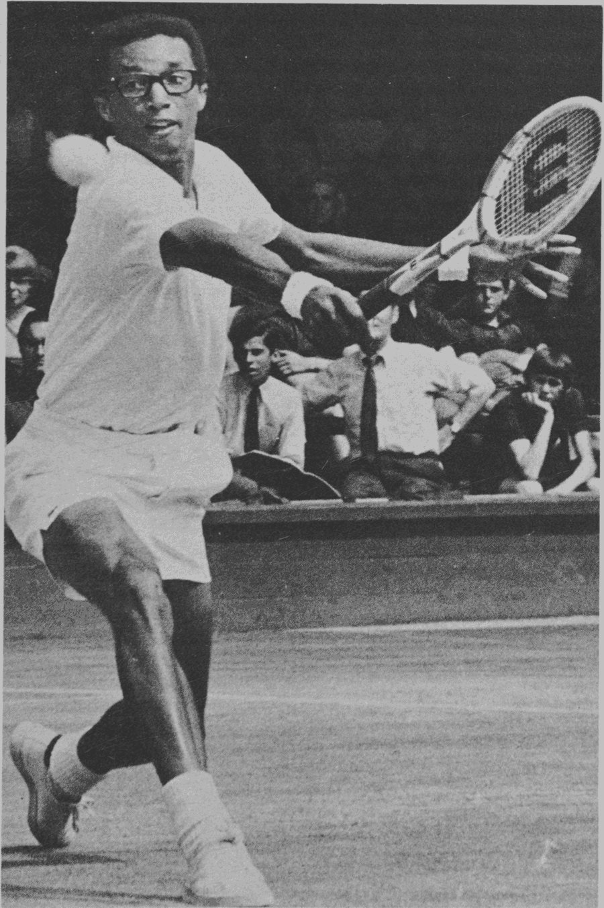
Arthur Ashe is a stable personality in all fashions of life. He never loses his cool on the courts, for he is too conscious of what it may do to his game.
Về mặt ứng xử, người ta nghe rất nhiều về một cầu thủ xuất sắc, người luôn cao ngạo và tự mãn và luôn thu mình vào chính mình. Không có nhiều đề cập đến loại nhà vô địch khác - người chiến thắng khiêm tốn, duyên dáng và tốt bụng, sẵn sàng cống hiến hết mình và tài năng của mình. Có khá nhiều người sau này và có vẻ như phần trên cùng, vòng tròn của những người vĩ đại và gần vĩ đại, bị chi phối bởi loại cá nhân tốt hơn, có lẽ vì sự xuất sắc của anh ta quá rõ ràng nên anh ta không cần phải vẫy nó xung quanh như một biểu ngữ. Hai kiểu nhân vật này, tự mãn và khiêm tốn, tạo nên sự tương phản thú vị về mọi mặt bởi vì, một lần nữa, ai cũng có một chút cả hai.
Khi chúng ta xem bất kỳ trận đấu quần vợt nào, chúng ta sẽ nhanh chóng nhận ra ai thắng ai thua, ai tức giận và ai không, ai tự mãn và ai do dự. Đằng sau những vai trò giả định này được đảm nhận trong suốt thời gian diễn ra cuộc thi là những kế hoạch và vở kịch rõ ràng. Người chiến thắng thường có thể trở nên cộc lốc hoặc không thân thiện, coi thường hoặc coi thường đối thủ một cách chế nhạo hoặc thô lỗ nhằm đe dọa đối thủ. Một cầu thủ có thể trở nên thống trị đến mức người kia dường như không khác gì một cỗ máy ném bóng. Điều này được gọi là sự kiểm soát của tòa án. Một hình thức kiểm soát hoàn toàn của tòa án ít nghiêm khắc hơn là thái độ coi trọng công việc. Nó rất hiệu quả. Một người bạn của tôi sử dụng chiến thuật này. Anh ấy nổi tiếng là một trong những chàng trai tử tế nhất ở bất cứ đâu - chỉ ngoài sân đấu. Và anh ấy thắng.
Mặt khác, kẻ thua cuộc thường trở thành kẻ hay than vãn. Khi nói đến kẻ thua cuộc, ý tôi là kẻ thua cuộc theo tính cách chứ không phải trong một trận đấu cụ thể. Người chiến thắng có thể thua cuộc và có thể trở nên tức giận hoặc khó chịu, nhưng khi làm như vậy họ hiếm khi than vãn và rên rỉ. Người thua cuộc thường than vãn về cách chơi của mình, và thường thì càng có nhiều người xem thì anh ta càng rên rỉ nhiều hơn. Lý do cho điều này là đơn giản. Người chiến thắng có lẽ là một người chơi đã thành danh, người có danh tiếng được những người bên lề biết đến và việc anh ta được chấp nhận là một người chơi giỏi không thực sự gặp nguy hiểm. Một người chơi kém hơn thiếu sự bảo mật này. Anh ta vẫn chưa chứng tỏ được bản thân và phải làm như vậy trên sân. Nếu anh ta chơi kém hoặc thậm chí vừa đủ nhưng lại thua, anh ta phải tìm cách khác để cho người xem biết rằng anh ta là một người chơi giỏi, và cách duy nhất để làm điều này là liên tục nhắc nhở bằng lời nói cho tất cả mọi người và những việc lặt vặt rằng anh ta thường không chơi tệ đến thế.
Các chi tiết và biến thể của những đặc điểm được đề cập ở trên phát sinh trong các cuộc chạm trán trực tiếp thú vị hơn những gì sự thật chung có thể hy vọng. Có những yếu tố bên ngoài bù đắp cho những đặc điểm này, chẳng hạn như tầm quan trọng của trận đấu hoặc nhiệm vụ và đối thủ có thể là ai. Người chơi có nhiều biến số và tất cả đều phản ứng khác nhau vào những thời điểm khác nhau trong những điều kiện khác nhau. Không có hai màn trình diễn nào giống hệt nhau; không có hằng số. Chúng ta đã nói về những xu hướng và đặc điểm nói chung sẽ tạo ra những kết quả tương tự. Xu hướng càng mạnh thì hiệu suất càng ổn định. (Do đó, sự khác biệt giữa nhà vô địch chớp nhoáng và nhà vô địch lâu dài.) Tuy nhiên, điều gì sẽ xảy ra khi lượt thích gặp lượt thích? Tại sao lại có những xáo trộn? Tại sao một người chơi giỏi thỉnh thoảng lại có kẻ thù? Những tình huống một chọi một này mang lại hương vị cho trò chơi - và là những lý thuyết khó hiểu.
Trong môn quần vợt đỉnh cao hơn bất kỳ môn thể thao nào khác, các tay vợt hàng đầu xuất hiện từ nhóm và chơi với nhau hàng tuần. Trong hạng mục này chủ yếu chỉ có những người chiến thắng - sân đấu thường là một trong những nhà vô địch. Tuy nhiên, khi hai người chơi cuối cùng xuất hiện trong trận chung kết, hầu như luôn là hai trong số một nhóm ba hoặc bốn người. Rod Laver và Ken Rosewall đã đứng đầu làng quần vợt thế giới trong nhiều năm. Rosewall dường như chỉ đơn giản là đã đạt được trình độ thành thạo cao hơn những người đồng hương của mình. Sẽ không ai phủ nhận rằng “Little Master” có những cú đánh chạm đất nguy hiểm nhất, kiểm soát tốt nhất trò chơi. Và trên cơ sở kỹ thuật, việc kiểm soát là hết sức quan trọng. Tuy nhiên, mặc dù có cú giao bóng yếu hơn nhiều người, nhưng dường như không ai có thể chơi tốt, lâu và thường xuyên như Rosewall. Anh ấy đã áp dụng kỷ luật tinh thần và sự tự tin để giúp trận đấu của mình giành chiến thắng.
Rod Laver lại là một câu chuyện khác. Nhiều tay vợt ra sân với sự tự tin khi đối đầu với anh ta, hoặc tự tin nhất có thể khi đấu với một nhà vô địch thế giới. Thường xuyên hơn không, họ thua. Tại sao? Trước hết, điều không thể chê vào đâu được là khả năng trúng số lớn của anh ấy. Anh ấy phải là một trong những người bắn giỏi nhất mọi thời đại trong trò chơi. Nhưng anh ấy mắc khá nhiều lỗi mà dường như hiếm khi khiến anh ấy bị tổn thương. Những lỗi này và một số thiếu sót trong trò chơi của anh ấy (rõ ràng là anh ấy đã bù đắp nhiều hơn) đã nuôi dưỡng niềm tin này vào đối thủ của mình. Quả thực, anh ấy thường thua hai set, hoặc một set, trước khi giành chiến thắng. Trong Grand Slam đầu tiên vào năm 1962, anh đã thua Marty Mulligan tại Freency trước khi giành chiến thắng, và vào năm 1969 ở thành tích thứ hai, Premjit Lall đã khiến anh phải thua hai set trong một giải đấu trước khi Laver giành chiến thắng. Nhiều người chơi có giả thuyết về anh ấy. Một điều đáng chú ý là Laver tin rằng anh ấy là người giỏi nhất và anh ấy sẽ thắng bất kỳ trận đấu nào mà không nghi ngờ gì. Tôi dịch điều đó là sự thiếu sợ hãi. Đây là lý do tôi nghĩ anh ấy thường xuyên bị tụt lại phía sau - bởi vì anh ấy không lo lắng khi bị tụt lại phía sau. Sau đó anh ta sẽ thắng khi phải làm vậy.
Điều gì sẽ xảy ra khi người thắng gặp người thắng hoặc người thua gặp người thua? Đối với những nhà vô địch đã thành danh như Rosewall và Laver, chiến thắng phụ thuộc vào lối chơi của người chơi. Họ quá kiểm soát tâm trí của mình để có thể bị loạn thần. Nhưng những người chơi kém hơn có những cuộc gặp gỡ thú vị với nhau vì phụ thuộc rất nhiều vào sự thống trị tinh thần. Không có ví dụ nào tốt hơn trường hợp của ba tuyển thủ quốc tế, mỗi người trong số họ đều đứng đầu ở đất nước mình. Tất cả đều là những tay vợt trẻ đang lên, tất cả đều đã đánh bại những tay vợt đẳng cấp thế giới có thứ hạng rất cao trong năm qua, và hai trong số họ, Steve và Tom, như tôi sẽ gọi họ, đã chơi đôi trong vài năm và đã đạt được khá nhiều thành công. Tom luôn dành sự tôn trọng rất cao cho Steve và thông qua mối quan hệ hợp tác của họ, mối quan hệ đó ngày càng trở nên lớn hơn. Sau đó, Tom giành được chiến thắng và thành tích của anh nhanh chóng vượt trội so với Steve, tuy nhiên nỗi sợ hãi khi phải chơi với anh, xuất phát từ sự tôn trọng này, đã khiến Tom thua Steve một cách thuyết phục mỗi khi hai người gặp nhau. Người chơi phải mất rất nhiều công sức để vượt qua sự thống trị tinh thần này. Mặt khác, Tom gần đây đã có chuỗi 5 trận toàn thắng (bị Steve chặn lại), trong đó anh đánh bại người chơi thứ ba, Fred, trong giải đấu đầu tiên với tỷ số 6-3, 7-6. Đó là một trận đấu khá chặt chẽ. Kể từ đó, cả hai đã đấu với Fred, một trong những cầu thủ trẻ xuất sắc ngày nay, thêm bốn lần nữa, thắng tổng cộng khoảng mười trận trong cả bốn trận. Hai trong số những chiến thắng của Tom đều là những thất bại nặng nề đối với Fred. Cả hai kết quả này giữa Steve và Tom, và Fred và Tom đều là do định hướng thành công và thất bại giữa những người chơi cụ thể, với một người chơi, Tom, đóng hai vai - người thắng và người thua. Chỉ vì lợi ích, Fred, trong 5 trận thua Tom, đã tự mình đánh bại một số cầu thủ đẳng cấp thế giới, bao gồm cả Steve.
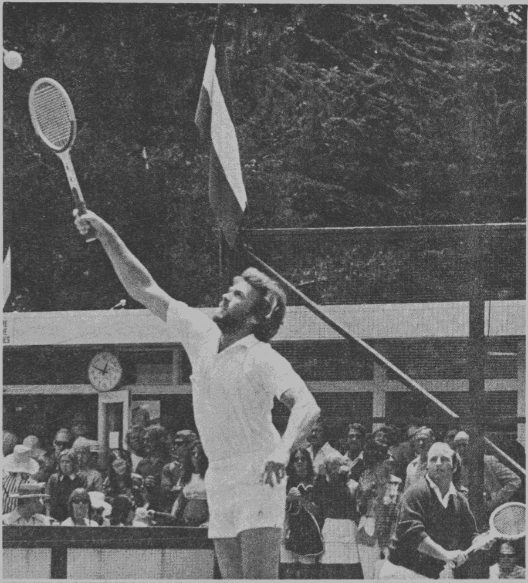
Clint Eastwood jumps to return a shot during the Invitational Celebrity Tournament at The Beach & Tennis Club in Pebble Beach, California.
Cuối cùng, ở phía bên kia của quang phổ, là hiện tượng thú vị của trận đấu thiên về thất bại trong đó cả hai tay vợt dường như liên tục đề nghị giành chiến thắng cho đối phương. Cách phổ biến nhất mà điều này có thể xảy ra là khi người chơi thua hết lần này đến lần khác hoặc mắc lỗi lặp đi lặp lại. Dù thế nào đi nữa, những trận đấu này hiếm khi có nhà vô địch. Nếu làm được thì nhà vô địch gần như sẽ luôn giành chiến thắng, bởi một trong những định nghĩa của một cầu thủ giỏi là anh ta thắng khi chơi tệ. Và nguyên nhân của kiểu trận đấu này là thứ mà tôi đã đề cập mà Laver thiếu – sự sợ hãi. Chính nỗi sợ hãi này đã tạo ra lối chơi ngập ngừng rất rõ ràng trong những trận đấu tồi tệ. Và trong một trận thua và thua, một trận đấu giữa nỗi sợ hãi: vs. nỗi sợ hãi, thường thì người lấy hết can đảm trước sẽ là người chiến thắng.
Tôi đã cố gắng kiểm tra các động lực tinh thần đằng sau việc thắng và thua - chính xác tầm quan trọng của quan điểm, trạng thái tinh thần, định hướng hoặc xu hướng chơi thành công hay thất bại trong một trận đấu hoặc trong toàn bộ sự nghiệp của một cầu thủ. Tầm quan trọng của những sức mạnh tinh thần này là rất lớn. Nó có thể được nhìn thấy từ trận này sang trận khác, từ cầu thủ này sang cầu thủ khác, trong hành vi, tính cách và trên hết là kết quả. Các biến thể của chủ đề thành công-thất bại là vô hạn, nhưng vẫn còn một sự phân chia rõ ràng, đó là sự phân chia giữa thành công và thất bại, giữa thắng và thua. Trong quần vợt, tất cả mọi thứ đều bình đẳng, người hướng tới thành công sẽ là người chiến thắng.
Chương 5
Cách Tự Kéo Mình Ra Khỏi Cơn Sa Sút Phong Độ
H. E. Stanton — Giảng viên cao cấp ngành Giáo dục (Tâm lý học), Đại học Flinders, Nam Úc
“Thật là một màn trình diễn tồi tệ, tôi không thể đưa bóng vào lưới.” “Tôi ngày càng tệ hơn - không kiểm soát được các cú đánh của mình, không tự tin chút nào vào trận đấu của mình.” Những nhận xét như vậy thường xuyên xảy ra ở bất cứ nơi nào người chơi quần vợt gặp nhau, vì rất ít người trong chúng ta hoàn toàn hài lòng với cách mình chơi. Tuy nhiên, có những mức độ hài lòng và đôi khi chúng ta hết sức chán ghét phong độ tồi tệ liên tục của mình. Vậy thì tại sao đôi khi chúng ta lại có khả năng chơi dưới mức tiêu chuẩn bình thường đến vậy?
Mệt mỏi có thể là một lời giải thích. Thiếu ngủ, tập thể dục quá nhiều hoặc quá say mê rượu vang, phụ nữ và bài hát có thể sẽ tàn phá thành tích quần vợt của những người giỏi nhất trong chúng ta. Chấn thương cũng thường là nguyên nhân gây ra sự suy giảm phong độ rõ rệt ngay cả khi nó tương đối nhỏ về tính chất. Cơn đau dai dẳng khi cơ chân bị căng, cảm giác khó chịu khi bị đau chân hoặc cảm giác khó chịu khi bàn tay bị phồng rộp, đều có khả năng gây ra tổn hại rõ rệt trong trò chơi thông thường của chúng ta. Việc luyện tập không liên tục có thể được coi là một nguyên nhân nữa dẫn đến hiệu suất kém do kỹ năng thực tế bị giảm sút. Nếu không có lợi ích của việc luyện tập thường xuyên, người chơi thường mất khả năng kiểm soát bóng theo ý muốn, thời gian và khả năng phối hợp bị ảnh hưởng và kỹ năng chơi quần vợt của anh ta giảm sút.
Những yếu tố được đề cập ở trên đều có nguồn gốc vật chất. Tuy nhiên, chúng ta có thể nói gì về một cầu thủ đột nhiên mất khả năng thi đấu trở lại phong độ bình thường mà không rõ lý do? Anh ấy có thể lực khá tốt, đã tập luyện chăm chỉ, đang nghỉ ngơi và tỉnh táo, nhưng dường như không còn khả năng chơi quần vợt hợp lý nữa. Những người chơi cách đây vài tuần không thể khiến anh ấy đổ mồ hôi giờ đã đánh bại anh ấy một cách dễ dàng và những đối thủ khác mà anh ấy từng đẩy mạnh giờ đây coi anh ấy là mục tiêu dễ dàng. Phải chăng một cầu thủ như vậy bỗng nhiên mất đi kỹ năng, những cú sút từng có đã bỏ rơi anh ta? Khi được hỏi về sự sa sút của mình, tay vợt không vui thường đổ lỗi cho sự mệt mỏi, mất hứng thú với quần vợt, mất đi bản năng “sát thủ”, v.v. Tất cả những lý do này có thể được phân loại là “tinh thần”, khác với các yếu tố thể chất đã đề cập trước đó, và chính những khía cạnh tâm lý trong thành tích quần vợt mà tôi muốn tập trung vào chương này. Cụ thể hơn, tôi muốn đưa ra quan điểm rằng việc mất phong độ quần vợt do các yếu tố tâm lý có thể được giải thích trong một khung tham chiếu nhận thức, sự hiểu biết về điều đó sẽ giúp người chơi tự vực dậy khỏi tình trạng sa sút và khôi phục trận đấu của mình về mức bình thường.
Tâm lý học nhận thức đã được Combs, Avila và Purkey (1972) tóm tắt khi họ phát biểu rằng:
"', . tâm lý học nhận thức cho rằng mọi hành vi đều là chức năng của những nhận thức tồn tại đối với một cá nhân tại thời điểm anh ta hành xử, đặc biệt là những nhận thức mà anh ta có về bản thân và về thế giới mà anh ta đang vận hành. Mỗi người chúng ta thực hiện vào mọi thời điểm những gì có vẻ phù hợp vào thời điểm đó. Khi bản chất của nhận thức được hiểu rõ, ngay cả hành vi kỳ lạ nhất cũng trở nên dễ hiểu. " Rõ ràng câu nói này thể hiện cái nhìn chủ quan về thực tế. Chúng ta nhìn sự việc theo một cách cụ thể, chấp nhận điều này như bản chất thực sự của sự vật và hành động theo quan điểm này. Do đó, hành động của một người tại một thời điểm cụ thể là một chức năng của tất cả những nhận thức tồn tại đối với anh ta tại thời điểm đó. Tất nhiên, nhận thức được sử dụng theo nghĩa này biểu thị “ý nghĩa”, “ý nghĩa đặc biệt của một sự kiện đối với người trải nghiệm nó”. Do đó, một người cư xử theo một cách nhất định bởi vì điều này có ý nghĩa đối với anh ta trong hoàn cảnh hiện tại của anh ta.
Ví dụ: một người chơi đang bị đánh bại nặng nề bởi một người khác mà anh ta cho là có năng lực kém hơn và có vẻ như người chơi giỏi hơn sẽ không có nhiều cơ hội để kéo trò chơi ra khỏi tình trạng hỗn loạn. Sẽ là một đòn giáng nặng nề vào nhận thức của anh ấy khi cho rằng mình bị đánh bại bởi một cầu thủ mà anh ấy coi là kém cỏi, do đó anh ấy thay đổi nhận thức của mình về trận đấu để việc giành chiến thắng dường như không còn quan trọng nữa và anh ấy có thể giải thích cho thất bại của mình sau đó bằng cách nói rằng anh ấy cảm thấy không khỏe hoặc chỉ là không thể hứng thú.
Làm thế nào người ta có thể thay đổi nhận thức này để tạo ra hành vi có nhiều khả năng dẫn đến cải thiện hiệu suất hơn? Một cách là chuyển trọng tâm hoàn toàn. Thay vì xem toàn bộ trận đấu, hãy tập trung vào từng điểm một. Thay vì nghĩ: "Tôi đang thua 1-4 và có rất ít hy vọng thắng set này", hãy nghĩ: "Tôi không thể làm gì với số điểm trong quá khứ và số điểm trong tương lai vẫn chưa đến, nhưng tôi có thể tận hưởng điểm này. Tôi sẽ chỉ tập trung tận hưởng điểm này. Tôi sẽ theo dõi quả bóng thật kỹ, đánh nó một cách trôi chảy và cảm thấy hài lòng khi di chuyển quanh sân với một mục đích rõ ràng trong đầu. Đây là mục tiêu của tôi - chơi tốt điểm này mà không cần suy nghĩ đến bất cứ điều gì khác." Bằng cách thu hẹp nhận thức theo cách này, phần lớn căng thẳng tâm lý sẽ được dỡ bỏ. Nỗi tuyệt vọng khi phải đối mặt với một khoản thâm hụt lớn có xu hướng bị lãng quên và mối đe dọa đối với bản thân được thay thế bằng sự tập trung duy nhất vào một mục tiêu phụ tương đối dễ đạt được. Nó có vẻ quá dễ dàng phải không, và tất nhiên, nó có thể không phải lúc nào cũng hiệu quả nhưng tôi có thể rút ra kinh nghiệm của bản thân như một dấu hiệu cho thấy nó thường tạo ra những thay đổi kỳ diệu. Vài năm trước tôi đã chơi một trận đấu ở Sydney với tư cách là đại diện cho câu lạc bộ của mình. Tôi đã thắng set đầu tiên một cách thoải mái, nhưng đối thủ của tôi đã vượt qua set tiếp theo và dẫn trước 5-1, 40-15 nhờ cú giao bóng của chính anh ta ở set sau. Khi anh ấy trở nên tốt hơn và tôi càng tệ hơn, tôi bận nghĩ về tất cả những lý do tôi có thể đưa ra cho thất bại sắp xảy ra của mình. Không ai trong số này bao gồm điều mà anh ấy có thể đã chơi tốt hơn tôi. Không, điều này sẽ quá sức chịu đựng của tôi. Tuy nhiên, ở giai đoạn trên, khi đối thủ của tôi chỉ cần một điểm để chiến thắng, tôi nghĩ: "Tôi thật là ngu ngốc. Tôi đang ở đây, khiến bản thân trở nên thất vọng và căng thẳng trong một tình huống mà tôi đã tự nguyện đặt mình vào. Lẽ ra tôi phải chơi quần vợt để tận hưởng và rèn luyện sức khỏe mà nó mang lại. Hôm nay là một ngày đẹp trời và tôi cảm thấy khá tốt, vì vậy tôi sẽ có được niềm vui từ cú đánh tiếp theo này. Tôi sẽ chơi nó nhẹ nhàng và dễ dàng, không nghĩ đến điều gì khác." Ở hai điểm tiếp theo, tôi chỉ làm như vậy, cảm thấy rằng nếu đối thủ của tôi chặn được cú đánh và đánh trúng người chiến thắng, chúc anh ta may mắn. Tất cả những gì tôi quan tâm là di chuyển tự do quanh sân và tận hưởng việc chơi điểm của mình. Khi tôi thay đổi nhận thức của mình theo cách này, sự căng thẳng thoát ra khỏi tôi và tôi chơi hai cú đánh đẹp mắt, thoải mái và đúng lúc. Với tỷ số ở mức deuce, đối thủ của tôi mắc lỗi kép rồi tung cú sút dễ dàng vào lưới. Từ thời điểm này, anh ấy trở nên căng thẳng và lo lắng, nhận thấy chiến thắng dễ dàng của mình ngày càng ít có khả năng xảy ra và nghĩ xem mọi người sẽ nói gì về việc anh ấy để trận đấu trôi đi. Ngược lại, tôi vẫn thảnh thơi và thoải mái, đặt ra hàng loạt mục tiêu phụ của mình, từng điểm một và không để ý đến bất cứ điều gì ngoài mục tiêu này. Cuối cùng tôi thắng 9-7 và học được một bài học mà tôi đã luyện tập nhiều lần kể từ đó.
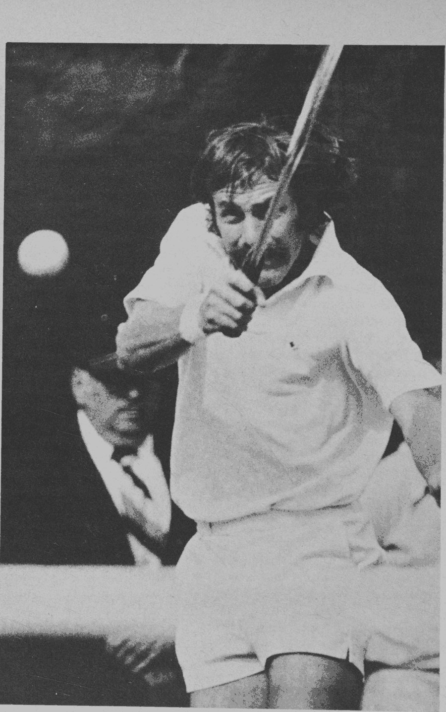
John Newcombe is the personification of an athlete transmuting his entire self into a champion's flash and style. He is truly at his best when the competition is strongest.
Khi viết về trải nghiệm này, tôi nhớ đến một ví dụ được Kennedy (1965) trích dẫn trong cuốn sách Thư giãn và Sống của ông. Anh ấy đang nói về một tác giả đã ngừng viết, không thể đối mặt với nhiệm vụ in ra một số trang nhất định mỗi ngày. Khi người này thay đổi nhận thức và quyết định chỉ viết một trang rồi để đó trong ngày, khả năng viết của cô ấy đã quay trở lại. Mục tiêu phụ này có thể dễ dàng thực hiện được và ngay sau đó cô ấy đã nói: “Chà, tôi đã đọc xong một trang, có lẽ tôi sẽ làm thêm một trang nữa trước khi dừng lại,” v.v.
Ví dụ cụ thể này về sự thay đổi nhận thức dẫn đến thay đổi hành vi có thể xảy ra song song với nhiều tình huống trong một trận đấu quần vợt. Khi khởi động trước khi trận đấu bắt đầu, người ta thường coi thời gian này là cơ hội để thả lỏng cơ bắp, thực hiện các cú đánh trôi chảy, v.v., nhưng nó có thể còn hơn thế nữa. Sự thay đổi trong nhận thức cho phép người ta coi giai đoạn khởi động này là thời điểm để vạch ra chiến lược và sự thay đổi như vậy sẽ dẫn đến việc thực hiện các hành vi khác. Ví dụ: một người thực hiện một số cú đánh ngắn để xem liệu đối thủ của mình có đánh bóng và tiếp tục vào lưới để thực hành chuyền bóng hay sau đó anh ta rút lui về đường cuối sân, từ đó biểu thị sở thích của anh ta hoặc nói cách khác là đối với lưới. Một người kết hợp các lát, các cú trả bóng từ trên xuống, các cú lốp bóng, các cú thả bóng và các cú đánh được thực hiện ở các tốc độ và góc độ khác nhau để xem đối thủ của mình xử lý chúng như thế nào và trên cơ sở đó, quyết định chiến lược mở đầu của một người.
Chúng ta hãy quay lại vấn đề cầu thủ không có phong độ mà tôi đã đề cập trước đó, người đang bị một cầu thủ kém hơn đánh bại. Một sự thay đổi về nhận thức mà tôi đã đề xuất là chuyển từ khái niệm chung về bản thân và đối tượng nói chung sang khái niệm vi mô về từng điểm một. Một thay đổi có lợi khác có thể liên quan đến loại trò chơi đang được chơi. Nếu người chơi bị đánh khi chơi trò chơi bình thường của mình, một biến thể sẽ được chỉ ra. Tuy nhiên, nếu anh ta cứ khăng khăng nghĩ rằng mình vượt trội và có thể giành chiến thắng khi làm những gì anh ta luôn làm, anh ta có thể sẽ thất vọng. Một sự thay đổi trong nhận thức là cần thiết theo những hướng sau. Trong tình huống hôm nay John X đang chơi tốt còn tôi thì chơi tệ. Tôi có thể làm gì để thay đổi mô hình này? Mặc dù điều đó sẽ khiến tôi đau đớn nhưng tôi phải từ bỏ việc chơi trò chơi bình thường của mình vì nó đang thua. Thay vào đó, tôi phải tập trung nhận thức của mình vào trò chơi của John X, đối thủ của tôi. Anh ta còn thiếu những bức ảnh nào? Tôi phải thay đổi trò chơi của mình như thế nào để mang lại cho anh ấy nhiều thứ hơn? Nếu điều này có nghĩa là từ bỏ một số cú đánh yêu thích của tôi và chơi một loại trò chơi mà tôi không thích, thì điều đó đáng giá nếu xét về những tác động có thể có của nó trong việc đảo ngược xu hướng của trò chơi này. Một lần nữa, sự thay đổi trong hành vi này không thể diễn ra cho đến khi nó được bắt đầu bằng một sự thay đổi trong nhận thức.
Điều tương tự cũng đúng với một cầu thủ ngày càng cảm thấy khó chịu vì những lỗi lầm của mình. Mỗi lần mắc lỗi, anh ấy lại tự trách mình về điều đó và do đó, anh ấy ngày càng trở nên căng thẳng và lo lắng. Nhận thức của anh ấy ở đây là mỗi điểm anh ấy mất đều là do lối chơi kém cỏi của bản thân. Nhưng chắc chắn điều này khá vô lý. Đối thủ của anh ta phải ghi công vì đã đặt anh ta vào tình huống mà anh ta có khả năng mắc lỗi. Nếu anh ta có thể thay đổi nhận thức của mình để anh ta coi đối thủ là người chịu trách nhiệm giành điểm hơn là bản thân anh ta đánh mất chúng, thì hành vi của anh ta sẽ thay đổi ở chỗ anh ta có thể sẽ trở nên thoải mái hơn và bớt lo lắng hơn. Một thái độ tập trung vào việc làm tốt nhất có thể và ghi nhận hoàn toàn công sức của đối thủ vì lối chơi tốt của anh ta thay thế cho thái độ tự khiển trách bản thân vì những lỗi lầm của mình. Không ở đâu mà sự thay đổi như vậy có thể nhận thấy ngay lập tức hơn khi một người cố gắng thực hiện những cú chuyền bóng vào lưới một cầu thủ. Lợi thế lớn nhất của người chơi trên lưới là áp lực mà anh ta gây ra cho người chơi cuối sân để nhìn lên trước khi đánh, một quy trình gần như chắc chắn sẽ tạo ra lỗi. Nếu một đấu thủ đang cố gắng thực hiện cú sút nhận thấy cần phải nhìn lên để xác định vị trí của đối phương trên lưới trước khi đánh bóng và phạm lỗi, thì anh ta sẽ tự trách mình một cách sâu sắc. Sau khi điều này xảy ra một số lần, anh ấy nhận thấy mình không thể đánh bại được kẻ tung lưới. Tuy nhiên, nếu anh ta thay đổi nhận thức thì toàn bộ cách chơi của anh ta sẽ thay đổi. Ví dụ, anh ta có thể lập luận rằng anh ta thực sự biết người cầm lưới sẽ ở đâu, vì cầu thủ giỏi sẽ theo sau đường đánh tiếp cận của anh ta. Và nếu đối thủ của anh ta không phải là một người chơi giỏi thì có lẽ anh ta cũng không phải lo lắng nhiều. Một khi anh ta nhận thấy rằng không cần thiết phải nhìn lên để kiểm tra vị trí của người lưới, anh ta có thể quyết định nơi mình sẽ đánh bóng và sau đó tập trung thực hiện cú đánh của mình tốt nhất có thể. Nếu người chơi lưới cắt nó ra và đánh trúng người chiến thắng, điều đó là quá tệ, nhưng gần như không gây khó chịu bằng việc bị mất điểm do mắc lỗi.
Toàn bộ khái niệm về ý nghĩa của việc gây áp lực trong một trận đấu quần vợt cũng là một vấn đề về nhận thức. Nếu ai đó hỏi hầu hết các cầu thủ rằng họ muốn nói gì khi nói rằng họ gây áp lực lên đối thủ, họ có thể sẽ trả lời là đánh bóng mạnh và lao vào lưới. Đối với người chơi trên lưới không tốt và không thoải mái ở vị trí đó, đây là một quan điểm khá nản lòng về việc “gây áp lực”, vì nó dường như loại trừ khả năng anh ta sẽ có thể thực hiện được bài tập mong muốn nhất này. Nhưng có nhiều cách khác để nhận thức tình hình, vì có nhiều cách gây áp lực lên đối thủ, vừa khó đối với anh ta, vừa an toàn hơn nhiều cho bạn. Ví dụ, khi bạn dẫn trước rõ ràng trong một set đấu và một sai lầm sẽ khiến đối thủ mất một điểm quan trọng, bạn sẽ khiến anh ta vô cùng căng thẳng bằng cách giữ bóng trong cuộc, vung nó quanh sân để giữ anh ta di chuyển nhưng luôn tạo cơ hội cho anh ta mắc lỗi trong khi bạn để mình mắc lỗi với khoảng cách lớn. Bằng cách thay đổi tốc độ, hướng và độ xoáy của bạn, luôn trong giới hạn an toàn, bạn gây áp lực đáng kể lên đối thủ vì anh ta biết một lỗi sẽ phải trả giá đắt và rõ ràng là bạn sẽ không để anh ta thoát khỏi vòng vây bằng cách tự mình mắc lỗi.
Áp lực cũng có thể được coi là vấn đề của việc chơi theo tỷ số, vì không phải tất cả các điểm trong một trận đấu, một hiệp đấu hoặc một trận đấu đều có giá trị như nhau. Người chơi có thể nhận thức được những điểm quan trọng này và nỗ lực nhiều hơn để giành được chúng thực sự đang khiến đối thủ của mình phải chịu áp lực đáng kể. Để minh họa, trong bất kỳ trận đấu nào, việc giành được điểm đầu tiên đều quan trọng vì người ta có được tâm lý tốt khi khởi đầu tốt, nhưng điểm thứ ba và thứ năm mới thực sự quan trọng. Nếu bạn dẫn trước 30-0, việc giành được điểm thứ ba với tỷ số 40-0 thường sẽ mang lại cho bạn thế trận. Ở tỷ số 15-15, điểm này mang lại cho bạn lợi thế trong khi nếu bạn bị dẫn trước 0-30, chiến thắng sẽ giúp bạn tiếp tục trò chơi. Điểm thứ năm, nếu bạn tính toán các khả năng, cũng quan trọng tương tự. Trong một set, game thứ bảy rất quan trọng, mang lại cho bạn set đấu với tỷ số 6-1, dẫn trước 5-2, dẫn trước 4-3 hoặc ít nhất là giúp bạn tiếp tục trận đấu với tỷ số 3-4. Các trận đấu quan trọng khác là trận thứ tư và thứ chín, và cần phải nỗ lực nhiều hơn vào những thời điểm này.
Từ những minh họa như thế này, có vẻ rõ ràng rằng cách một người chơi một trận quần vợt sẽ bị ảnh hưởng rất nhiều bởi nhận thức của người đó về tình huống và liệu người đó có thể thay đổi những nhận thức đó để thích ứng với những điều kiện thay đổi hay không.
Theo một cách nào đó, cách tiếp cận này thông qua sự thay đổi nhận thức có liên quan đến liệu pháp ý nghĩa của Frankl, tất nhiên, được phát triển trong một bối cảnh rất khác. Frankl đã lập luận rằng, để tồn tại, con người cần có mục đích sống. Nếu anh ta không thể chấp nhận một mục đích đã có sẵn, thì anh ta phải tìm ra ý nghĩa cho cuộc sống của mình và mô hình trị liệu ý nghĩa sẽ giúp ích ở đây bằng cách cho người đó thấy cách anh ta có thể biến những sự kiện hàng ngày trong cuộc sống thành những thách thức phải đối mặt. Người ta cũng có thể cảm nhận một trận đấu quần vợt theo những cách như vậy, ở cấp độ vĩ mô của toàn bộ trận đấu hoặc ở cấp độ vi mô của từng điểm tại một thời điểm. Nếu phong độ kém hiện tại của một người là kết quả của thái độ “không thể quan tâm” đối với trò chơi, thì bằng cách thay đổi nhận thức này thành nhận thức về việc nhìn thấy thử thách được tạo ra, người đó sẽ tạo ra một thái độ có mục đích hơn và thay đổi hành vi. Đây là một nhiệm vụ, chiến thắng một trận đấu, hoặc tận hưởng trải nghiệm chơi trò chơi, hay bất kỳ cách nào khác mà người ta thích diễn đạt, và việc vượt qua thành công thử thách này sẽ khiến cuộc sống của một người có ý nghĩa hơn thông qua ý thức về mục đích được tạo ra. Điều này nghe có vẻ xa vời nhưng một lần nữa dựa trên kinh nghiệm cá nhân, tôi biết rằng nó có thể hiệu quả.
Có lẽ nhiều điểm tôi nêu trong chương này đã từng được độc giả nghĩ đến trước đây. Điều tôi đã cố gắng làm là tập hợp chúng lại với nhau trong khuôn khổ tâm lý học nhận thức, chỉ ra rằng nếu một người có thể cố ý thay đổi cách nhận thức về hoạt động chơi quần vợt, thì ở một mức độ lớn, người ta có thể kiểm soát hành vi của mình và bằng cách đó cải thiện cơ hội thành công của một người chơi quần vợt.
Chương 6
Hội Chứng Nghẹn Điểm (The Choke) và Cách Chống Lại
William W. Hahn, Ph.D. — Phó Giáo sư Tâm lý học, Đại học Denver, Denver, Colorado
Nghẹt thở, bám chặt, tê cứng, bị siết chặt hay đơn giản là “nghẹt thở” là trải nghiệm kinh khủng xảy ra khi người chơi căng thẳng đến mức các cú đánh cơ bản của anh ta tan rã, khả năng phối hợp và căn thời gian của anh ta rất tệ, đồng thời khả năng tinh thần và thể chất của anh ta suy giảm đến mức cuối cùng anh ta thua một đối thủ có khả năng kém hơn đáng kể. Tình trạng khốn khổ này là điều mà gần như mọi tay vợt nghiêm túc đều đã trải qua dưới hình thức này hay hình thức khác. Khả năng tránh tình huống này hoặc khắc phục nó khi nó đã bắt đầu có thể là sự khác biệt giữa một đối thủ thành công và một đối thủ tầm thường, do đó, việc xem xét các yếu tố phổ biến nhất có liên quan và một số kỹ thuật để đáp ứng những điều này sẽ hữu ích cho những ai muốn cải thiện trò chơi của mình.
Thuật ngữ “nghẹt thở” có thể xuất phát từ thực tế là trong điều kiện căng thẳng cao, hầu họng của một người trở nên cực kỳ khô do tuyến nước bọt và tuyến tiết chất nhầy bị ức chế, và sau đó không có chất bôi trơn, cùng với sự căng thẳng cao độ của cơ cổ họng, khiến nó gần như không thể nuốt được - do đó có cảm giác nghẹt thở. Hơn nữa, trong điều kiện bị kích thích cao, cảm giác khó tiêu, buồn nôn và sắp nôn trớ thường xảy ra, điều này càng hỗ trợ thêm cho sự phù hợp của cụm từ thông tục “nghẹt thở”, được sử dụng để mô tả hoạt động bị cản trở hoặc bị ức chế trong điều kiện căng thẳng.
Những câu hỏi quan trọng nhất cần được trả lời đối với người chơi nghiêm túc liên quan đến hiện tượng nghẹt thở là: (1) các điều kiện môi trường và tâm lý thúc đẩy hiện tượng này là gì và (2) những bước nào có thể được thực hiện để ngăn chặn hoặc khắc phục nó khi nó đã xảy ra?
Điều kiện gây ra sặc
Cảm giác nghẹt thở, một phần trong trải nghiệm của mọi người chơi nghiêm túc, khác với các triệu chứng tương tự có thể xảy ra do thiếu tập trung, mệt mỏi về thể chất hoặc quá tự tin. Mặc dù tách biệt và có thể phân biệt được với những điều này, tuy nhiên, vẫn có mối quan hệ qua lại với chúng và như chúng ta sẽ thấy, không thể hiểu hoặc thảo luận một cách thông minh về nghẹt thở nếu không hiểu các điều kiện tối ưu để chuẩn bị tâm lý cho trận đấu.
Một cách để hiểu điều gì sẽ xảy ra khi quá nhiều căng thẳng cản trở khả năng của một người là xem xét mối quan hệ chung giữa hiệu suất thực hiện các nhiệm vụ khác nhau và mức độ cảm xúc được thể hiện thông qua kích thích sinh lý. Các nhà tâm lý học từ lâu đã biết rằng có một mối quan hệ nảy sinh khi việc thực hiện một nhiệm vụ nhất định được xác định dựa trên mức độ kích thích ngày càng tăng. Biểu đồ điển hình của mối quan hệ được thể hiện trong Hình 1-A trong đó sự kích thích tăng tuyến tính theo thời gian, trong khi hiệu suất đạt đến một đường tiệm cận và sau đó giảm dần khi đạt được mức độ kích thích cao hơn.
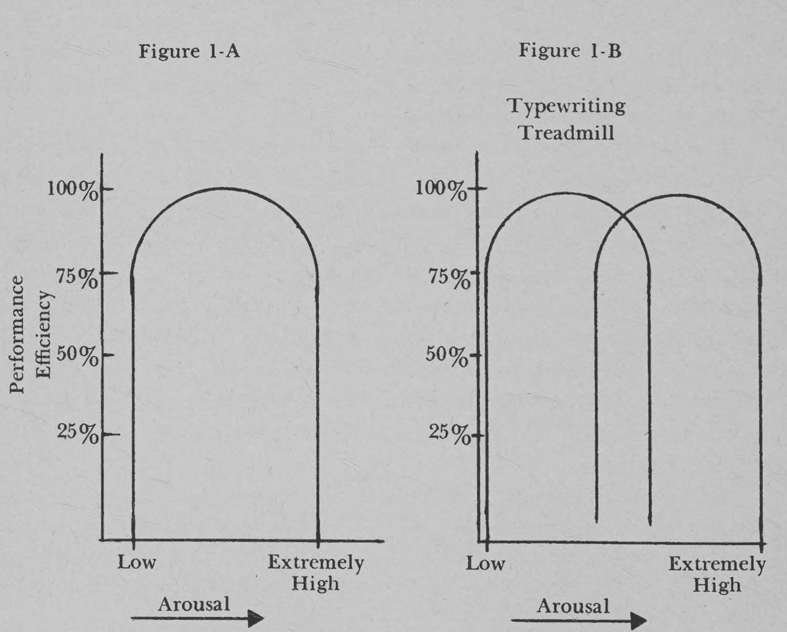
Hình 1-A và 1-B: tương quan giữa mức hưng phấn sinh lý (arousal) và hiệu suất thi đấu, với hai đường cong khác nhau cho hai loại nhiệm vụ (đánh máy và chạy máy tập).
Người ta cũng chứng minh rằng các nhiệm vụ khác nhau có liên quan đến các mức độ hưng phấn rất khác nhau; nói chung, mức độ phối hợp vận động cần thiết càng tốt thì mức độ kích thích tối ưu càng thấp. Trong ví dụ ở Hình 1-B, mức độ hưng phấn cao sẽ không phù hợp để đạt được hiệu suất tối ưu trong việc đánh máy, mặc dù nó có thể phù hợp với việc chạy trên máy chạy bộ. Rõ ràng, các nỗ lực thể thao khác nhau cũng có thể được mô tả như vậy, và các môn thể thao như quần vợt và gôn sẽ nằm ở bên trái trên đường cuối sân, trong khi bóng đá, cử tạ và các môn thể thao đòi hỏi nỗ lực cơ bắp nhiều hơn sẽ ở bên phải. Do đó, Dick Butkus hoặc Tom “Mad Dog” Curtis có thể chơi một trận bóng đá thành thạo - hoặc thậm chí là vượt trội - trong khi phần lớn thời gian đang ở trong cơn thịnh nộ ảo. Tuy nhiên, không có tay vợt hàng đầu nào có thể thi đấu thành công khi đang trong trạng thái hưng phấn cảm xúc cực kỳ cao độ. Trên thực tế, điều ngược lại mới đúng; những cầu thủ xuất sắc là những người “giữ bình tĩnh” và Lavers và Rosewalls hiện đang thống trị cuộc chơi. Trong môn chơi gôn, những người có khí chất của Sam Snead hay Jack Nicklaus sẽ trở thành những bậc thầy xuất sắc của môn nghệ thuật này. Đôi khi, những nhân vật lịch sử hơn có thể chiếm ưu thế trong thời gian ngắn - Lee Trevino hoặc Ilie Nastase - trên thực tế, thường bằng cách làm mất tinh thần, mất tập trung hoặc khiến đối thủ mất tập trung; nhưng trong lịch sử của những môn thể thao này, những kiểu đàn ông này chưa bao giờ thống trị trận đấu từ lâu theo cách mà những chuyên gia ít màu mè hơn nhưng kiên trì hơn đã làm.
Đối với hầu hết người chơi, sự kết hợp của sự hưng phấn cao ban đầu, cùng với áp lực xã hội ngày càng tăng, chơi trong một môi trường xa lạ hoặc gặp một phong cách chơi không mong đợi - tất cả hoặc bất kỳ điều kiện nào trong số này đều có thể dẫn đến các triệu chứng khó chịu của nghẹt thở. Thông thường, người chơi lần đầu tiên tham gia thi đấu giải đấu sẽ gặp phải những cơn nghẹt thở tương đối thường xuyên trong năm đầu tiên thi đấu. Mức độ hưng phấn mà trước đây là tối ưu đối với anh ta có thể thường xuyên đạt được ngay trước trận đấu, nhưng, với áp lực gia tăng của sự cạnh tranh nghiêm túc, đáp ứng nhiều phong cách chơi đa dạng hơn và có lẽ, sự căng thẳng gia tăng của một số khán giả, mức độ này tăng lên đến mức mà sự phối hợp cơ bắp và thời gian bị suy giảm đáng kể. Ngoài những căng thẳng bổ sung này, một người mới chơi giải đấu có thể bỏ lỡ các hoạt động giảm lo lắng thông thường khi nói chuyện bình thường với bạn bè và môi trường quen thuộc ở câu lạc bộ hoặc sân nhà của anh ta. Tác động của sự lo lắng tăng thêm này có thể khiến bạn cực kỳ suy nhược và phá hủy không chỉ lối chơi của bạn trong một trận đấu quan trọng mà quan trọng hơn, trải nghiệm nghẹt thở có thể xâm nhập vào sự tự tin của bạn và dẫn đến một chu kỳ lặp đi lặp lại luẩn quẩn khiến bạn giảm tự tin và khả năng chơi kém hơn. Chắc chắn có một số lượng lớn người chơi giỏi chưa bao giờ chinh phục được “sự bồn chồn” của giải đấu và trở nên chán nản với lối chơi kém cỏi của mình trong các giải đấu đến mức họ kết luận rằng họ không có khả năng tham gia loại hình thi đấu này và quay trở lại với sự thoải mái của những trận đấu ít đòi hỏi và ít căng thẳng hơn. Điều này có thể là tốt nhất đối với một số người, nhưng mặt khác, có thể đạt được sự hài lòng lớn từ cách chơi cạnh tranh chính thức hơn của các giải đấu và cách duy nhất để khắc phục những vấn đề ban đầu của nghẹt thở là tiếp tục tham gia vào những tình huống này, phân tích các yếu tố cụ thể khiến bạn trở nên căng thẳng (và những điều giúp bạn thư giãn và chống lại xu hướng này) cho đến khi thích ứng với các điều kiện của giải đấu.
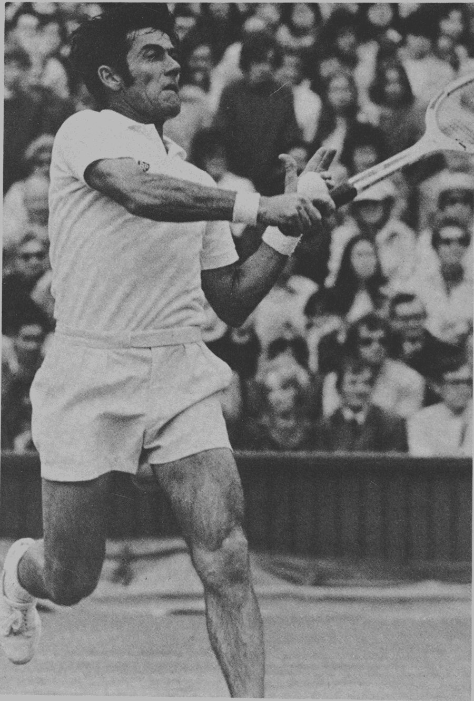
Ken Rosewall, since he stands only 5'7" and weighs only 145 pounds, was often told he was too small for big-time tennis, but he dedicated himself as an aspiring amateur to become the Australian champion, an intensity that now has developed into his being one of the great players of all time.
Kỹ thuật chung để khắc phục cuộn cảm
Đối với người chơi quan tâm đến việc học cách tránh hoặc khắc phục các vấn đề nghẹt thở khi bước vào cấp độ hoặc khu vực thi đấu mới, có sẵn hai chiến lược cơ bản.
Phần đầu tiên có thể được mô tả như một loại “chương trình cấp tốc” và thường được theo sau bởi những người chơi trẻ hơn lần đầu tiên tham gia thi đấu nghiêm túc. Chiến lược ở đây chỉ đơn giản là tham gia một số lượng lớn và nhiều giải đấu đa dạng nhanh chóng theo lịch trình cho phép. Làm theo quy trình này, hầu hết người chơi sẽ trở nên quen với sự căng thẳng khi chơi ở môi trường mới sau bốn đến sáu tháng. Lúc đầu, vòng đua có vẻ giống như một cơn ác mộng với môi trường xa lạ, những con người mới và những thất bại không thể tránh khỏi lặp đi lặp lại. Nhưng sau một thời gian ngắn, những người chơi khác trở nên quen thuộc, các sân chơi bắt đầu có những điểm tương đồng dễ nhận biết và quan trọng nhất là các phong cách chơi khác nhau được đối mặt nhiều lần và việc điều chỉnh các phong cách chính bắt đầu. Sau khi thi đấu với nhiều phong cách khác nhau và trong những điều kiện khác nhau, đơn giản là không có điều kiện thực sự mới lạ nào có thể gặp phải. Người chơi nhận thấy rằng mình đang “giải đấu khó khăn” về mặt tinh thần cũng như thể chất.
Mặc dù chiến lược này có thể hiệu quả đối với những người chơi trẻ tuổi, nhưng họ có nguy cơ trở nên quá bão hòa với sự cạnh tranh liên tục và sau đó sẽ mất đi lợi thế cần thiết để đạt được hiệu suất cao nhất. Người chơi lớn tuổi mong muốn bước vào những cấp độ thi đấu mới thậm chí còn có nhiều khả năng cảm thấy mệt mỏi với tốc độ nhanh chóng và căng thẳng liên tục của các giải đấu liên tiếp và có thể nên xem xét chiến lược thứ hai.
Phương pháp chính thứ hai để điều chỉnh trước áp lực khi bước vào cấp độ cạnh tranh mới là sử dụng phương pháp xấp xỉ liên tiếp. Ở đây, trước tiên người chơi nên cố gắng xác định xem yếu tố nào có nhiều khả năng khiến mình “đứng hình” nhất trong một trận đấu. Sau đó, anh ta nên đặt mình vào những tình huống (trong hoặc ngoài các giải đấu chính thức), trong đó anh ta sẽ phải đối mặt với lượng thành phần rắc rối ngày càng tăng dần của từng tình huống.
Ví dụ: giả sử khán giả đặc biệt gây rắc rối cho John Smith và khiến anh ta chơi dưới mức trung bình khoảng 20%. John có thể thiết lập các tình huống trong đó anh ấy sẽ chơi trước một số ít người và dần dần tập hợp thành một nhóm lớn nhất mà anh ấy có thể biểu diễn trước đây. Những bước đầu tiên có thể được thực hiện bằng cách cố ý chọn một sân nhất định hoặc một thời điểm nhất định trong ngày cho các trận đấu tập của anh ta. Tại hầu hết các câu lạc bộ và cơ sở công cộng, việc chọn thời gian và địa điểm hầu như đảm bảo rằng sẽ có ít khán giả có mặt là một vấn đề đơn giản. Sau đó, tình hình có thể trở nên khó khăn hơn một chút bằng cách chơi ở những địa phương phổ biến hơn một chút hoặc trong các giải đấu có tỷ số hòa lớn hơn.
Trong những điều kiện tăng dần mức độ tiếp xúc với các áp lực liên quan, người chơi sẽ nhận thấy rằng mức độ căng thẳng thấp liên tục có thể đi kèm với việc leo lên các bậc thang của các tình huống khó khăn. Nếu tại một thời điểm nào đó, anh ta đột nhiên tràn ngập lo lắng quá mức và lối chơi tương ứng sa sút, anh ta nên tạm thời rút lui về một nhóm điều kiện ít căng thẳng hơn một chút, đợi cho đến khi anh ta hoàn toàn thích nghi với những điều kiện đó rồi mới chuyển sang cấp độ khó tiếp theo.
Phương pháp tương tự này có thể được áp dụng cho bất kỳ yếu tố nào khiến người chơi khó chịu nhất - cho dù đó là lối chơi chậm, bề mặt sân khác nhau hay môi trường xung quanh mới. Người chơi, theo tốc độ của riêng mình, có thể chọn cấp độ khó tiếp theo và chơi trong những điều kiện đó cho đến khi có kết quả thích ứng.
Những cách tiếp cận chung này để vượt qua sự lo lắng trong những tình huống mới lạ về cơ bản là những chiến lược dài hạn được áp dụng trong một hoặc nhiều mùa chơi. Ở cấp độ khác, có những chiến lược chung có thể được áp dụng trong một giải đấu riêng lẻ hoặc thậm chí trong một trận đấu.
Một trong những điều cần tránh khi rơi vào tình huống mà bạn nghĩ có nguy cơ nghẹt thở đó là khoảng thời gian dài cô độc ngay trước một trận đấu quan trọng. Mặc dù bạn có thể đã nghe nói về một số chuyên gia “tự trấn an mình” bằng cách tập trung cao độ một mình trước trận đấu, nhưng điều này có thể không hiệu quả với người mới. Thay vào đó, nếu bạn phải đợi một mình trong một hoặc hai giờ trước trận đấu, bạn sẽ bắt đầu băn khoăn, lo lắng và hình thành căng thẳng mà chỉ có thể mang tính hủy diệt khi bạn bước vào sân. Tất cả những người chơi khác (ngay cả những người bạn đã đánh bại trước đó) đều trông vượt trội hơn rất nhiều trên sân; bạn sẽ nhìn vào một đám đông khán giả và tưởng tượng rằng tất cả họ đều đang theo dõi bạn một cách nghiêm khắc; và mọi cơn đau nhức và cơn đột quỵ đáng ngờ của bạn sẽ khắc sâu một cách sống động trong tâm trí bạn. Khi bước ra sân, bạn có thể cảm thấy mình bị bao bọc trong một khối băng.
Nếu điều này xảy ra với bạn, có ít nhất hai điều bạn có thể làm để ngăn chặn điều đó. Bạn có thể hòa nhập xã hội với những người chơi khác hoặc nếu điều này không dễ dàng hoặc thuận tiện, hãy mang theo một hoặc hai người bạn đến trận đấu. Chỉ cần trò chuyện và đi loanh quanh trong khuôn viên với bạn bè sẽ giúp bạn phân tâm và khiến bạn không chìm đắm trong những thảm họa tưởng tượng đang chờ đợi mình.
Biện pháp phòng ngừa thứ hai là tránh mất nhiều thời gian chờ đợi trận đấu tại địa điểm thi đấu. Thông thường, một cuộc gọi điện thoại đến trụ sở giải đấu sẽ cho bạn biết trận đấu của bạn sẽ diễn ra theo lịch trình hay sẽ bị trì hoãn và sau đó bạn có thể đến nơi thoải mái mười hoặc mười lăm phút trước khi tiếp tục. Nếu bạn đang ở giữa các trận đấu, hãy hỏi chủ tịch giải đấu và chắc chắn rằng ông ấy đồng ý cho bạn xuất hiện trở lại sau một giờ nữa trong trận đấu tiếp theo, sau đó hãy uống Coke hoặc nằm xuống trong một giờ và nghỉ ngơi.
Nếu bạn bước vào sân và cảm thấy căng thẳng dâng cao, bạn vẫn có thể làm một số việc. Một số người, sau khi cố gắng và thực hiện một vài cú ném dễ dàng, có thể hít một hơi thật sâu, tự nhủ “điều đó không có ý nghĩa gì nhiều” và “đừng cố gắng quá nữa” và tự mình vượt qua điều đó. Việc thư giãn sau đó có thể có tác động tích cực ngay lập tức. Những người khác có thể làm việc khiến cơ thể họ hơi mệt mỏi; ở một mức độ nào đó, có sự không tương thích cơ bản giữa mức độ căng thẳng cao và sự giãn cơ do mệt mỏi về thể chất. Tôi biết một người sẽ tập thể dục mềm dẻo và chạy mạnh mẽ sau những quả bóng lỏng lẻo khi bắt đầu trận đấu chỉ để giảm mức độ căng cơ và lo lắng.
Đôi khi trong trận đấu, một tình huống khủng hoảng sẽ phát triển có thể dẫn đến phản ứng nghẹt thở ngay cả khi trận đấu diễn ra bình thường trước đó. Hiện tại điều này rất có thể xảy ra trong thời gian tie-break được sử dụng trong nhiều giải đấu. Hầu hết các kỹ thuật được đề cập ở trên không thể được áp dụng trong bối cảnh này. Một cách tiếp cận có thể được sử dụng là nước cờ này mà tôi đã học được từ đối tác của mình khi chúng tôi chơi trận bán kết đôi nam nữ của Giải đấu Denver Starter 1970. Chúng tôi đang ở set thứ ba và bị dẫn trước 4-2 trong loạt tie-break chín điểm. Đối tác của tôi, Mona, còn khá mới chơi quần vợt nhưng là một đối thủ có kinh nghiệm trong các môn thể thao khác. Điểm quan trọng thứ bảy, thứ tám và thứ chín là của cô. Ở điểm đầu tiên, cô ấy đã giành chiến thắng rõ ràng trong lần giao bóng đầu tiên; ở điểm thứ hai, cô ấy bỏ lỡ quả giao bóng đầu tiên nhưng lại đánh quả giao bóng thứ hai khó, được trả lại như một pha thiết lập dễ dàng đối với tôi, và ở điểm thứ ba, quả giao bóng đầu tiên một lần nữa được thực hiện cho người chiến thắng rõ ràng để mang lại cho chúng tôi bàn thắng hòa và trận đấu. Tôi quay lại hoàn toàn kinh ngạc và hỏi cô ấy lấy đâu ra dũng khí để làm điều đó trong cơn cuồng nộ. Cô ấy lạnh lùng nói với tôi rằng cô ấy chỉ đơn giản nghĩ rằng chúng tôi không thể nào giành được ba điểm liên tiếp nếu cô ấy để căng thẳng chi phối và “nuôi dưỡng” các cú giao bóng của mình. Vì vậy, giả sử trận đấu thua nếu cô ấy không chịu nổi xu hướng tự nhiên là siết chặt và chơi để tránh lỗi kép, cô ấy quay lại và làm hoàn toàn ngược lại.
Đương nhiên, cách tiếp cận này không phải lúc nào cũng hiệu quả; nhưng nếu chơi “nghẹn ngào” thì bạn rất hiếm có cơ hội chiến thắng. Nếu bạn đang thua trong một trận đấu - hòa 4-2 hoặc tỷ số set 5-2 đối với bạn - bạn cũng có thể cho rằng tất cả sẽ thua trừ khi bạn thua. Bạn cũng có thể thử bất cứ điều gì mang lại cho bạn cơ hội chiến thắng trận đấu dù rất mong manh.
Các yếu tố cụ thể có thể gây nghẹt thở và phương pháp chống lại chúng
Khi một cầu thủ đã bị kích thích cao độ bởi tình huống hiện tại, bất kỳ trải nghiệm hơi bất ngờ hoặc khó chịu nào cũng có thể đẩy anh ta vượt lên trên đỉnh của đường cong hiệu suất đảo ngược chữ “U” đó. Dưới đây là một số trong những cái phổ biến hơn. Chơi chậm. Một trong những nguyên nhân phổ biến nhất, đặc biệt ở những cầu thủ trẻ và ham chơi, đó là việc chạm trán một đối thủ chậm chạp và bài bản. Thông thường, không chỉ do bản chất việc chơi chậm mà còn do khoảng thời gian dài bất thường giữa các điểm và giữa các ván đấu có thể khiến một đối thủ háo hức rơi vào phản ứng nghẹt thở. Mỗi cá nhân muốn thành công trong trò chơi này phải học cách đối phó với vấn đề này. Một điều có thể tạo điều kiện thuận lợi cho sự điều chỉnh này rất nhiều là thiết lập một tình huống mà bạn gặp phải phong cách chơi này, sau đó cố gắng làm chậm tốc độ chơi của bạn để phù hợp với đối thủ ở giữa các điểm, nhắc nhở bản thân rằng những khoảng thời gian này hoàn toàn không liên quan đến kết quả của trận đấu. Tuy nhiên, khi một điểm đã được bắt đầu, bạn phải tự điều chỉnh tinh thần để đạt được mức độ tập trung và tốc độ tối ưu. Nói cách khác, sự thiếu kiên nhẫn nhỏ nhặt của bạn với nhịp độ chung của trận đấu phải được phân biệt với việc chơi một điểm riêng lẻ; không được phép chơi chậm để làm giảm lợi thế cạnh tranh của bạn khi trận đấu đang diễn ra. Nếu một người có thể đạt được một hoặc hai trải nghiệm tích cực - nghĩa là giành chiến thắng xứng đáng trước một đối thủ xứng đáng - bằng cách sử dụng kỹ thuật này, thì rất có thể nó có thể được gọi lại và sử dụng lại khi gặp phải tình huống chơi chậm trong những hoàn cảnh khó khăn hơn. Tòa án mới. Một yếu tố phổ biến khác góp phần gây ra nghẹt thở là trò chơi của một người đột ngột tan rã, xảy ra khi người chơi tham gia thi đấu trên một bề mặt chơi khác và trong môi trường xung quanh mới. Điều đầu tiên nhận thấy có thể là những cú chạm đất kém hiệu quả hơn, khó đánh giá tốc độ của quả bóng hoặc các vấn đề trong việc ước tính độ sâu của một cú lốp bóng. Điều đầu tiên cần lưu ý là đây là những vấn đề rất thực tế chứ không chỉ là vấn đề hưng phấn nhất thời hay định hướng tâm lý của bạn. Những người chơi ít kinh nghiệm hơn có xu hướng đánh giá thấp hoặc bỏ qua những vấn đề này trong quá trình khởi động, cho rằng họ sẽ tự giải quyết khi trận đấu diễn ra. Trên thực tế, chúng có thể trở nên tồi tệ hơn; cú lốp bóng tiếp tục bay dài và cú thuận tay liên tục được tiếp xúc muộn; sau đó, khi bạn bị tụt lại phía sau, bạn sẽ cố gắng xây dựng sự căng thẳng, sửa chữa vội vàng và đa dạng cho đến khi mất đi những cú đánh cơ bản hơn và trò chơi của bạn trở nên hỗn loạn.
Điều gì đã xảy ra?
Vấn đề bắt đầu từ việc đánh giá thấp tầm quan trọng của việc làm quen với sân thi đấu. Ngay cả những người chơi có kinh nghiệm trong giải đấu dường như cũng xem nhẹ yếu tố này, bỏ qua hoặc coi nhẹ thực tế là có những khác biệt lớn về bối cảnh, đặc điểm hình ảnh, dòng gió và các yếu tố tinh vi khác giữa các sân. Chúng tôi hiếm khi chứng kiến các cầu thủ tập luyện trên sân đã chọn một hoặc hai ngày trước giải đấu. Nhưng người chơi có kinh nghiệm sẽ quan sát sâu sắc mọi sắc thái của sự khác biệt trong cách chơi bóng trong quá trình khởi động và làm việc chăm chỉ để chẩn đoán mọi vấn đề và sửa chữa.
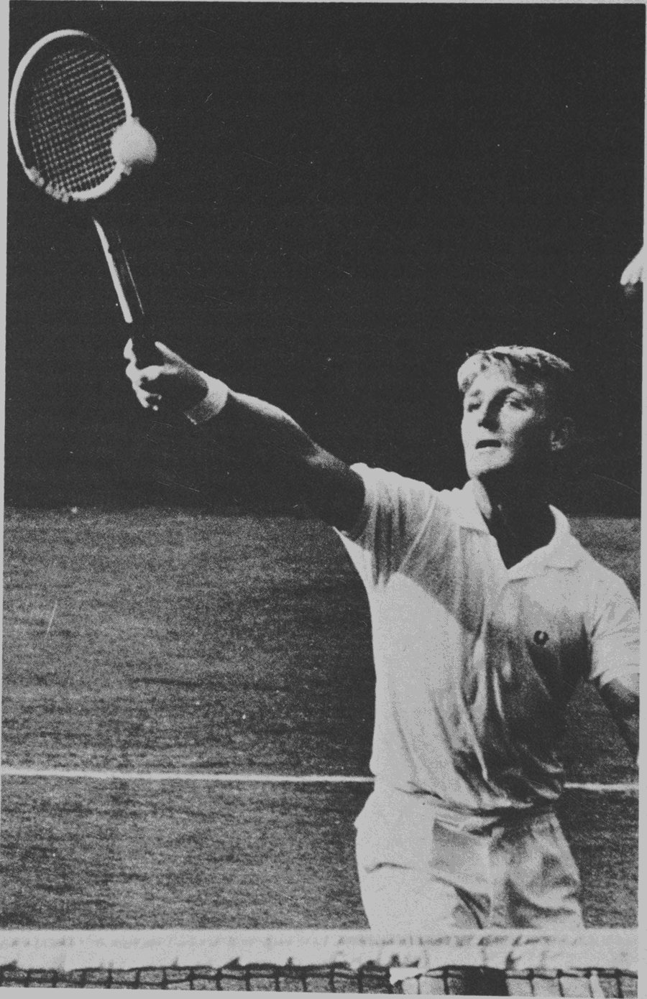
Lew Hoad: Under stress, he seemed immune to nerves, playing a poised concentration that allowed full utilization of his magnificent strokes.
Sai lầm khiến một người chơi ít kinh nghiệm hơn bắt đầu trên đường đến chokesville là niềm tin ngây thơ rằng mọi thứ sẽ tự giải quyết khi trận đấu diễn ra. Ảo tưởng này và sự vỡ mộng tương phản diễn ra ngay sau đó, kết hợp lại để tạo ra cú sốc tâm lý đáng lo ngại dẫn đến sự “tách rời” cuối cùng trong trò chơi của anh ta. Khán giả. Một trong những “yếu tố đóng băng” thường gặp nhất là sự có mặt của khán giả. Sự xuất hiện của họ không chỉ khiến những người chơi không quen chơi trước người quan sát cảm thấy tự ti mà còn có thêm những yếu tố gây mất tập trung và phức tạp thường đi kèm với sự hiện diện của khán giả. Những người đang theo dõi một trận đấu không bao giờ chỉ là những người vô danh đối với người chơi trên sân. Khán giả luôn đóng góp ít nhất một trong những ảnh hưởng sau: (a) họ hầu như luôn là người hâm mộ và do đó chỉ trích trò chơi và, (b) họ có thể là bạn bè và đối thủ cạnh tranh hoặc, theo cách khác, đại diện và bạn bè của đối thủ của bạn, và (c) khán giả gần như luôn tạo ra một loạt các ảnh hưởng gây mất tập trung phi cá nhân có thể ảnh hưởng đến trò chơi của bạn.
Đối với một số người chơi, sự căng thẳng lớn nhất được tạo ra khi có bạn bè hoặc những người cùng chơi quan sát. Điều này có thể đặc biệt đúng nếu một người mới tham gia một câu lạc bộ và mong muốn gây ấn tượng với những người mới quen của mình. Đây là một trường hợp đơn giản khi việc “cố gắng quá mức” có thể khiến người chơi đánh cú giao bóng mạnh hơn bình thường một chút, khiến tỷ lệ giao bóng đầu tiên 40% của anh ta giảm xuống còn 20% và số lỗi kép của anh ta tăng lên đáng kể. Nó có thể dẫn đến việc anh ta cố gắng thực hiện những cú đánh trái tay hào nhoáng trên sân khi anh ta không thực sự thành thạo cú đánh. Sau một hoặc hai ván đấu được chơi theo cách này, người chơi có thể không thể quay lại các cú đánh và trò chơi cơ bản của mình, và tổng chi phí cho việc “cố gắng gây ấn tượng” sẽ phải trả giá.
Một tình tiết phức tạp hơn có phần xảy ra khi một người hành trình đến một bối cảnh khác để tham gia một trận đấu giữa các thành phố hoặc giữa các câu lạc bộ. Trong bối cảnh này, người quan sát có thể bị thiên vị một cách công khai và lớn tiếng. Trong một hoặc hai lần điều này xảy ra lần đầu tiên, việc nghe thấy tiếng vỗ tay chỉ dành cho những cú đánh tốt của đối thủ có thể là một trải nghiệm đáng sợ. Đôi khi, tinh thần đảng phái có thể vượt xa những tràng pháo tay và sự tán thành từ một phía và liên quan đến việc cổ vũ thiếu lịch sự và chế nhạo khi bạn thực hiện một cú đánh dễ dàng. Mặc dù hiếm gặp nhưng người viết này đã chứng kiến những sự kiện như vậy hơn một lần trong các trận đấu giữa các thành phố và ảnh hưởng thường xuyên đến chất lượng lối chơi của đội khách.
Chắc chắn sẽ có một số cuộc trò chuyện và một số chuyển động giữa các khán giả và người mới trong tình huống này có thể dễ dàng rời khỏi trò chơi của mình nếu anh ta để mình bị phân tâm bởi hoạt động này. Anh ta có thể bắt đầu nắm bắt được các phần của cuộc trò chuyện chỗ này chỗ kia và cố gắng hiểu chúng, hoặc đơn giản là anh ta có thể trở nên mất tập trung khỏi trò chơi của mình do nhận thức quá mức về sự hiện diện của khán giả.
Đâu là cách giải quyết tất cả những khó khăn này mà khán giả có thể gây ra cho thí sinh thiếu kinh nghiệm? Như đã thảo luận trước đó trong chương này, người chơi có thể cố gắng làm dịu bản thân trước những trường hợp này hoặc anh ta có thể xây dựng khả năng chống lại nó thông qua phương pháp xấp xỉ liên tiếp. Nhưng trước khi áp dụng một trong những nguyên tắc chung này, người chơi cần có một số thiết bị để đối mặt với tình huống trước mắt trong một hoặc hai lần đầu tiên anh ta đối mặt với bóng ma của khán giả.
Không giống như các vấn đề khác mà chúng tôi đã mô tả, hầu như không có cách nào để có hành động trực tiếp giải quyết vấn đề này. Nếu tình hình thực sự tuyệt vọng, việc kháng cáo lên chủ tịch giải đấu (hoặc người tương đương với ông ta) có thể dẫn đến việc ông ta yêu cầu đám đông im lặng hơn hoặc thậm chí có thể sắp xếp thay đổi tòa án. Nhưng những bước này khó có thể được thực hiện và chỉ trong những trường hợp cực đoan. Đối với những trường hợp thường gặp hơn, cách duy nhất là cố gắng loại bỏ sự phân tâm của đám đông, phớt lờ họ càng nhiều càng tốt và tập trung hoàn toàn vào trận đấu. Nếu sự chú ý của bạn hoàn toàn tập trung vào quả bóng trong suốt thời gian chơi thực tế, tiếng ồn của đám đông vào những thời điểm này dường như sẽ biến mất và sẽ không còn là yếu tố cản trở cuộc chơi của bạn.
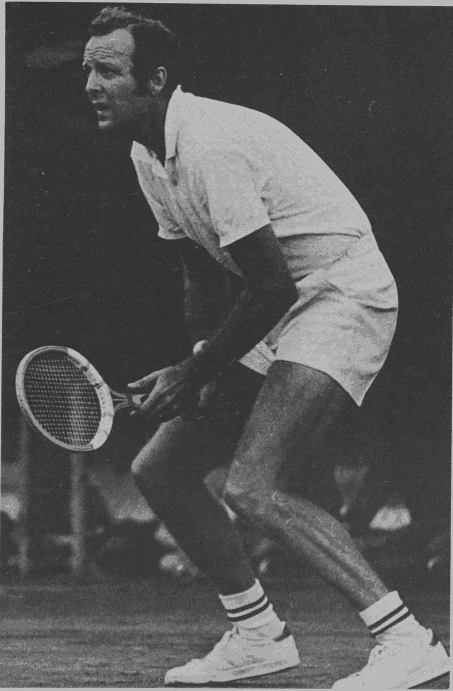
Fred Stolle: A very shrewd player who takes every advantage of his opponent's weakness.
Điều quan trọng cần nhớ là cảm giác nghẹt thở mà bạn gặp phải không phải là khuyết điểm duy nhất và không thể giải quyết được trong cách tiếp cận tâm lý của bạn đối với trò chơi. Đó là sản phẩm của sự căng thẳng và hưng phấn quá mức và có thể được khắc phục bằng cách thực hiện các bước thích hợp. Cũng như mọi khía cạnh khác của trò chơi, những người vượt qua thành công trở ngại này sẽ đạt được thành công và sự hài lòng lớn hơn từ trò chơi quần vợt.
Chương 7
Quần Vợt Cảm Xúc: Hưng Phấn Tột Độ Hay Suy Sụp Tinh Thần?
Kenneth R. Lawson, M.A. — Giáo viên, Trường Trung học Northeastern, Springfield, Ohio
“Cha đẻ của Phân tâm học”, Tiến sĩ Sigmund Freud, đã gợi ý rất khôn ngoan với các nhà khoa học tương lai rằng họ chỉ nên xác định các hiện tượng đang được nghiên cứu sau nhiều giờ nghiên cứu, quan sát, phân loại và đánh giá. Vì vậy, trước tiên tôi sẽ xác định các thuật ngữ được đề cập. Quần vợt cảm xúc đề cập đến cảm xúc gắn liền với việc chơi môn thể thao này. Cảm xúc trong bối cảnh này có thể được định nghĩa theo các thuật ngữ sau: một phản ứng cơ thể theo khuôn mẫu của sự hủy diệt, tái tạo, hợp nhất, định hướng, bảo vệ, tước đoạt, từ chối hoặc khám phá hoặc một số sự kết hợp của những điều này, được tạo ra bởi một kích thích. Định nghĩa này được chấp nhận cho mọi mục đích vì chúng ta sẽ thảo luận ở đây về quần vợt đầy cảm xúc của những cá nhân chơi môn thể thao này - mỗi người phản ứng khác nhau trong tình huống sân cụ thể của mình.
Có nhiều điều để nói về mối quan hệ giữa cảm xúc và việc chơi quần vợt. Đàn ông và phụ nữ (sự thừa nhận này sẽ làm hài lòng những người chơi libbers nữ, đặc biệt là B.J.K.) về cơ bản là những người có mục tiêu rõ ràng khi chơi trò chơi. Người chơi tìm kiếm các mục tiêu, từ niềm vui cạnh tranh đến việc tiêu diệt hoàn toàn đối thủ (trừ khi họ chuyển sang chuyên nghiệp khi mục tiêu chuyển thành tiền). Người chơi cố gắng bằng mọi cách có thể để đạt được mục tiêu của mình. Vì lý do này, sự hiểu biết tâm lý về các kiểu hành vi khác nhau thực sự đã trở nên quan trọng trong thi đấu thể thao. Bản thân những mô hình hành vi này là một chủ đề hoàn toàn khác và không thể đề cập đầy đủ trong chương này. Tuy nhiên, lĩnh vực cảm xúc của quần vợt là lĩnh vực mà chúng ta có thể thấy sự tham gia của cá nhân vào môn thể thao này sẽ đáp ứng một số nhu cầu như thế nào, từ đó cung cấp cho người chơi những lối thoát cảm xúc, hoặc có lẽ tốt hơn là một van an toàn. Không bao giờ có thể loại bỏ cảm xúc khỏi môn quần vợt - người chơi cảm thấy hài lòng và phấn khích khi giành chiến thắng, hoặc cảm thấy buồn bã và chán nản khi thua cuộc. Cảm xúc gắn liền rất chặt chẽ với thành công và thất bại trong thi đấu thể thao. Ví dụ, hãy nhìn vào những tay vợt giỏi nhất hiện nay và để ý xem mỗi người sẽ thể hiện những phản ứng cảm xúc khác nhau như thế nào đối với trận đấu của mình. Báo chí và các phương tiện truyền thông khác nhanh chóng tận dụng phản ứng cảm xúc của những người chơi này để giải trí cho khán giả của họ. Người ta chỉ cần xem tivi, nhìn báo, tạp chí là thấy Billie Jean King đánh vào trán hay la mắng những câu nói phóng túng của phụ nữ; Ilie Nastase chửi bới ai đó hoặc dùng những dấu hiệu tay khó chịu; Stan Smith, luôn rất ngầu, tự nói chuyện với chính mình và hất tóc ra sau; hoặc Chris Evert giật gân nhìn chằm chằm vào một vị trí mà cô ấy đã bỏ lỡ; để thấy những biểu hiện cảm xúc riêng lẻ khiến tất cả những ai xem chúng phải rung động. Quần vợt đầy cảm xúc như được thấy trong các ví dụ này thực sự là một phản ứng cá nhân và cá nhân đối với môn thể thao này cũng như những yêu cầu hoặc mong đợi của nó. Phản ứng (cảm xúc) của người chơi sẽ phụ thuộc vào tính cách của anh ta, nhu cầu của môn thể thao này, kỳ vọng của chính môn quần vợt cũng như khả năng thể chất và tinh thần tổng thể khi chơi điền kinh. Do đó, người ta giả định rằng thành công trong bất kỳ lĩnh vực nào - quần vợt hoặc kỹ thuật hóa học - chỉ đến với những cá nhân trước đây đã đạt được thể lực tinh thần, sức mạnh cam kết với trò chơi và trình độ thể chất cần thiết để chơi trò chơi đó, và cuối cùng là phục hồi nhanh chóng sau những căng thẳng và yêu cầu của trò chơi.
Với phần giới thiệu ngắn gọn về chủ đề này, chúng ta hãy đi vào trọng tâm của vấn đề: quần vợt được cảm xúc hóa và làm thế nào để trở nên “hưng phấn” hoặc “hưng phấn” trong quần vợt. Cần phải ghi nhớ hai điều ngay từ đầu cuộc thảo luận này: cảm xúc thường được khơi dậy bởi các kích thích bên ngoài và trạng thái cảm xúc được tạo ra sau khi một vật thể (người hoặc vật) trải qua quá trình cảm giác và nhận thức. Cảm giác đề cập đến sự kích thích của các cơ quan cảm giác, trong khi nhận thức đề cập đến ý nghĩa, tổ chức hoặc sự liên kết được đưa ra cho cảm giác. Do đó, chúng ta hãy bắt đầu chu kỳ hoặc quá trình liên quan đến việc nâng cao tinh thần, hãy nhớ rằng những giả định này rất có thể hoạt động ngược lại và khiến một người trở nên mất bình tĩnh, tùy thuộc vào hoàn cảnh của trận đấu quần vợt.
Chúng ta hãy bắt đầu với giả định rằng cảm xúc được khơi dậy bởi sự hiện diện của ai đó hoặc điều gì đó. Trong một trận đấu quần vợt đơn tràn ngập cường độ và cảm giác của cả hai người chơi, một (hoặc cả hai) trong số hai người tham gia rất có thể bị phấn khích chỉ vì cơ hội chơi trận đấu và giành chiến thắng hoặc chơi ở một vị trí mới - “Đơn số 1”. Một người chơi có thể trở nên phấn khích chỉ vì anh ta đang chơi một người mà anh ta thích chơi và đánh bại, hoặc vì đối thủ của anh ta đặc biệt khó chịu và đánh bại anh ta (hoàn toàn là vậy) là niềm vui lớn nhất! Nói về việc phấn khích thế là đủ rồi - hay vậy?
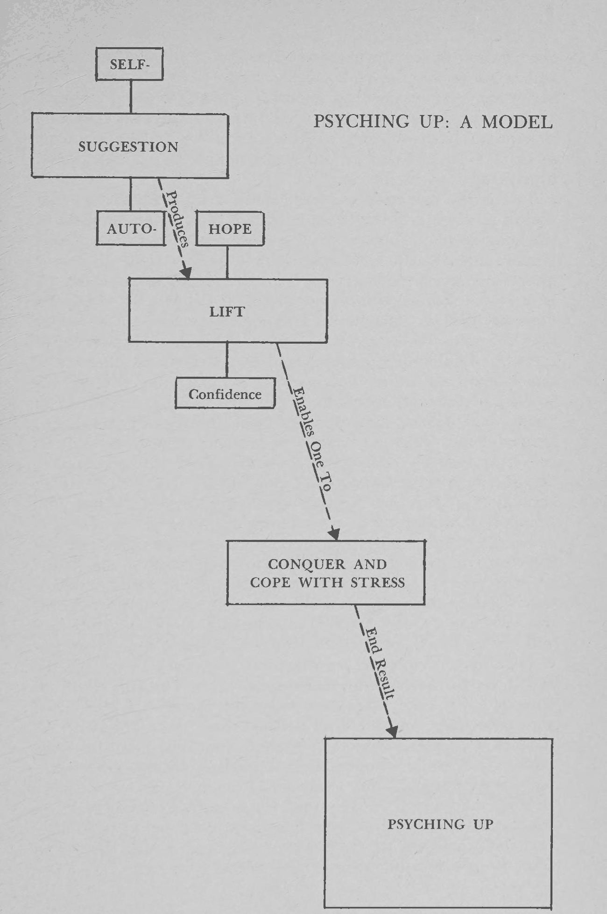
Mô hình “lên tinh thần” (Psyching Up): chuỗi từ bản ngã → gợi ý → hy vọng → nâng đỡ → củng cố → chinh phục và đối phó với căng thẳng.
Điều này dành cho huấn luyện viên - người biết một chút về tâm lý học nhưng muốn có một khóa học bồi dưỡng nhanh chóng về các kỹ thuật liên quan đến việc nâng cao tinh thần cho các vận động viên quần vợt của mình. Việc nâng cao tinh thần các cá nhân trong quần vợt thường được yêu cầu hơn là nâng cao tinh thần của đội quần vợt như một nhóm người chơi. Trọng tâm của nghệ thuật nâng cao tinh thần là quá trình gợi ý. Gợi ý là quá trình truyền đạt những ý tưởng hoặc suy nghĩ mới vào tâm trí. Đề xuất có thể là tự động hoặc tự động. Tự ám thị xảy ra khi một người tự giúp mình, trong khi tự ám thị liên quan đến sự tương tác giữa hai người, một người giúp đỡ người kia. Hãy để tôi nhấn mạnh: có thể gợi ý suy nghĩ cho người khác là một trong những nhiệm vụ khó khăn nhất được giao cho bất kỳ ai. Mục tiêu cuối cùng của gợi ý là nó tạo ra và nuôi dưỡng cảm xúc thăng hoa và từ đó cho phép người chơi giải quyết căng thẳng sắp tới (đấu trận) bằng một chiến lược trận đấu cân bằng, gần như hoàn hảo, được cân nhắc kỹ lưỡng về trí tuệ và thể chất. Một huấn luyện viên hoặc giáo viên không bao giờ được quên nguyên tắc thôi miên rằng có một lượng sức mạnh to lớn trong suy nghĩ của con người có thể tạo ra kết quả tích cực hoặc tiêu cực. Nói “Bạn có thể và sẽ đánh bại Ted” là một gợi ý mạnh mẽ nếu người chơi được cung cấp thêm những suy nghĩ dự phòng về gợi ý tiếp theo giúp anh ta thực sự hình dung và chấp nhận một cách trung thực kỹ thuật gợi ý và nâng cao tâm lý này. Hy vọng rằng những suy nghĩ sẽ được chuyển thành hành động và tại thời điểm này, các quy trình đánh giá có thể được đưa vào để huấn luyện viên có thể thấy được mức độ kỹ thuật gợi ý của mình. Sẽ là khôn ngoan khi thừa nhận với bản thân rằng nếu (và khi) những suy nghĩ được đề xuất được chấp nhận và cuối cùng được cảm xúc hóa trong người chơi thì những kết quả kỳ lạ có thể xảy ra. Hành vi được khơi dậy và cảnh giác không chỉ bởi cảm xúc - động lực còn là một yếu tố khác. Vì vậy, khi người chơi bị kích động không đúng cách hoặc ở một mức độ vượt quá mức cần thiết đối với một người cụ thể, họ có thể trở nên rất không đáng tin cậy. Cảm xúc phải được giữ trong dòng. Quá trình xử lý có trật tự trong cơ thể con người có thể bị suy giảm và do đó khả năng phán đoán của người chơi kém tin cậy hơn. Người ta chỉ có thể hy vọng chuẩn bị cho các cầu thủ của mình theo tiêu chuẩn của huấn luyện viên bóng rổ John Wooden của UCLA, người giúp trấn tĩnh tinh thần nhưng giúp các cầu thủ của mình bình tĩnh bằng một kỷ luật cụ thể giúp họ cách ly khỏi những yêu cầu căng thẳng lớn. Người ta chỉ cần xem các trận đấu của UCLA là có thể thấy được sự tuyệt vời trong cách họ xử lý đối thủ. Ở giai đoạn này, cần đề cập rằng giáo viên hoặc huấn luyện viên phải luôn thể hiện hết khả năng của mình trước đội của mình, bởi vì sự hướng nội đóng một vai trò quan trọng đối với các thành viên trong nhóm mà một người lãnh đạo. Nội tâm là sự tiếp thu một cách vô thức các ý tưởng, thái độ cảm xúc, tiêu chuẩn và lý tưởng từ những người tương tác với bạn. Người chơi quần vợt sẽ cần ít tâm lý hơn nếu huấn luyện viên tận tâm và nghiêm túc trong công việc chuẩn bị tinh thần và thể chất cho người chơi của mình cho môn thể thao quần vợt đòi hỏi khắt khe.
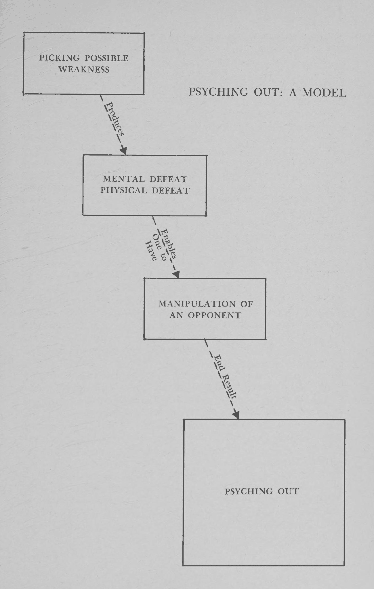
Mô hình “suy sụp tinh thần” (Psyching Out): từ việc nhận diện điểm yếu của đối phương đến thất bại tinh thần và thể chất, rồi bị đối phương thao túng.
Tâm lý là một quá trình hoàn toàn khác. Nhờ hiểu biết tâm lý cơ bản, giờ đây vận động viên có thể vượt xa các kỹ năng vận động thông thường cần có khi chơi quần vợt và đi sâu vào quá trình suy nghĩ, phán đoán hoặc sử dụng ngôn ngữ thời đó, “đánh lừa tâm lý của người khác”. Khi một người đánh lừa đối thủ, anh ta sẽ tham gia vào một quá trình liên quan đến việc tìm ra điểm yếu hoặc khuyết điểm tâm lý của cá nhân đó trên mạng. Tất nhiên, mục tiêu cuối cùng là sử dụng những điểm yếu bất ngờ được phát hiện này để đánh bại đối thủ về mặt tinh thần và từ đó buộc nạn nhân phải chịu thất bại về thể chất cùng một lúc. Để đánh lừa đối thủ, sau khi phát hiện ra điểm yếu, cần phải thao túng anh ta bằng cách tạo ra những suy nghĩ nghi ngờ, lo lắng, bối rối và cảm giác bất lực cơ bản trong suy nghĩ của anh ta, điều này cuối cùng góp phần dẫn đến thất bại chung của anh ta. Thật không may, rất ít vận động viên và huấn luyện viên có thể hiểu đầy đủ về quá trình giải tỏa tâm lý phức tạp. Trong trò chơi quần vợt mà một người chỉ có thể thu được lợi nhuận từ sự tổn thất của người kia, việc có thể đánh bại đối thủ của bạn (và thu được lợi nhuận) cả về thể chất và tinh thần là điều cốt yếu để một người tiếp tục thành công. Vì vậy, điều quan trọng nhất là phải phát triển một kế hoạch nhằm trấn áp phe đối lập.
Việc phát triển một kế hoạch trấn áp tinh thần thường đòi hỏi người chơi quần vợt đôi khi phải thể hiện một thái độ “thánh thiện hơn bạn”, nhưng điều này chỉ nên hời hợt, vì thái độ này cuối cùng có thể (nếu thực hiện nghiêm túc) gây ra sự suy sụp của người đang làm mất tinh thần người kia. Một thái độ thánh thiện hơn bạn sẽ giúp người chơi quần vợt nắm giữ lợi thế trong quá trình ra quyết định - những quyết định chẳng hạn như anh ta sẽ bắt đầu ở bên nào của sân, ai sẽ giao bóng và bên nào, và ai chịu trách nhiệm về hướng chung của trận đấu. Thái độ này chỉ có thể xuất hiện khi người đó có khả năng chơi quần vợt đáng kể. Hình thức tâm lý thông thường nên áp dụng là khi người chơi bằng khả năng của mình (dù ít hay nhiều hơn đối thủ) đâm một cây kim vào đối thủ - một loại thủ thuật châm cứu! Kiểu may vá này không khiến đối thủ khó chịu lắm, vốn được coi là phi thể thao nhất. Những chiếc kim châm cứu được châm vào đối phương để làm họ tê liệt chứ không nhất thiết làm giảm bớt cơn đau mà họ phải chịu trong quá trình đó. Mỗi kim châm cứu được đặt vừa phải để đạt được hiệu quả tối đa. Đầu tiên, một cây kim được đặt ở phía trái tay để làm cho nó trở nên vô dụng - điều này có thể đạt được bằng cách quan sát cách đối phương nhận cú trái tay của anh ta cũng như cú đánh mà anh ta sử dụng để trả bóng - cắt, xoáy ngang, xoáy trên, hoặc bất cứ điều gì. Bắt kịp các cú đánh của đối thủ trong giai đoạn khởi động là nơi tốt nhất để cắm cây kim đầu tiên đó. Nếu bạn đang chơi một người không chịu uốn cong đầu gối hoặc cúi thấp để nhận bóng, thì hãy đâm một cây kim vào đầu gối của anh ta - bằng cách đánh những quả bóng thấp về phía anh ta. Do đó, những chiếc kim này đã khiến tâm lý trở thành hiện thực gần hơn. Từ đây, người ta có thể đi đến các vùng khác của đối phương và cẩn thận lựa chọn những vị trí để đặt kim châm cứu. Vì vậy, hãy là một “bác sĩ châm cứu quần vợt” - một người xoa dịu tâm lý nhưng không xoa dịu nỗi đau của nạn nhân hoặc bệnh nhân (tùy thuộc vào người bạn chơi).
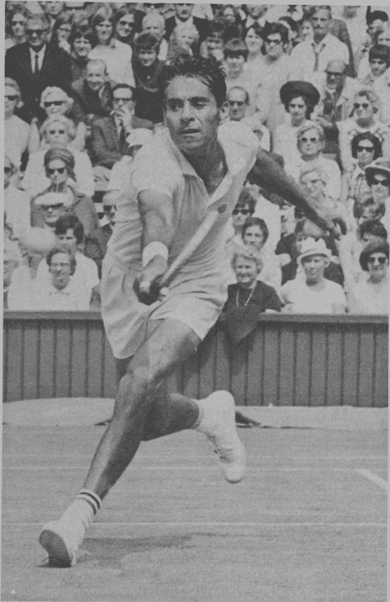
Pancho Gonzales: There is no doubt that he is one of the most intense competitors that has ever appeared in any sport.
Bây giờ là lúc để hỏi người đọc một vài câu hỏi. Bạn sẽ là ai - một tay vợt dễ xúc động trở nên hưng phấn, hay một người bị loạn thần? Bạn có phải là người châm cứu hay châm cứu? Hãy trở thành bác sĩ châm cứu nếu bạn có đủ tố chất và phù hợp với mọi yêu cầu của công việc. Hãy nhớ rằng “cho thì tốt hơn là nhận” và do đó, câu nói cổ xưa trong Kinh thánh này còn có một ý nghĩa khác - lần này đối với người chơi quần vợt - “hãy châm kim vào người khác, đừng để kim đâm vào mình”. Bản thân người chơi quần vợt có cảm xúc là một giống loài và với sự kiểm soát cảm xúc thích hợp cũng như sự huấn luyện được giám sát cẩn thận từ giáo viên hoặc huấn luyện viên, người chơi này có thể trở thành một nhà châm cứu quần vợt tìm kiếm lợi nhuận cao nhất. Chúc may mắn!
Chương 8
Đánh Đôi Nam Nữ: Trò Chơi Tình Yêu Đích Thực
Julian C. Davis — Giám đốc Tâm lý, Bệnh viện Bang Florida, Sở Sức khỏe Tâm thần, Chattahoochee, Florida
Đánh đơn là một trò chơi, đánh đôi là một trò chơi khác, và đôi nam nữ là một trò chơi khác. Thật đáng tiếc khi giữa sự bùng nổ phổ biến của môn quần vợt hiện nay, trò chơi dành cho cả nam và nữ vẫn chưa nhận được sự công nhận xứng đáng.
Khi các quý ông mặc áo nỉ trắng bắt đầu chơi bóng quanh bãi cỏ ở Newport, Rhode Island vào những năm 1870, không mất nhiều thời gian để các quý cô nhận ra khả năng ở bên nhau. Thế là các đội quần vợt dị tính ra đời.
Kết quả thật phi thường. Không có môn thể thao có tổ chức nào khác có thể khẳng định đã tạo ra nhiều mối tình lãng mạn như vậy. Bạn có thường xuyên nhìn thấy những thanh thiếu niên, và có lẽ cả những người lớn tuổi, tụ tập quanh sân tennis hàng ngày, một số hầu như không biết đầu này với đầu kia của vợt, bị thu hút bởi từ tính động vật của một người khác giới, nhưng ở lại đủ lâu để học tốt trò chơi? Đôi nam nữ nhận được nhiều hơn một chút so với tham chiếu trong ngoặc đơn trong các định nghĩa tiêu chuẩn về một đội đôi (cả hai cùng giới tính hoặc một trong hai người - nhóm sau được gọi là đôi nam nữ). Chẳng phải đã đến lúc chúng ta công nhận hình thức trò chơi đã trở thành một phần cơ cấu xã hội của quốc gia sao?
"Rắc rối với đánh đôi", theo Rex Lardner trong The Under Hand Serve, "là bạn đang chơi với một đối tác. Và đây là một thử thách." Thực tế là, việc chơi với một đối tác là nét đẹp tuyệt vời của nội dung đôi nam nữ, nếu bạn sáng suốt trong lựa chọn của mình.
Sự tinh tế của trò chơi được nhân lên trong các trận đấu đôi nam nữ, bởi vì trong cả tương tác với đối tác và thao túng đối thủ, sự khác biệt cá nhân thông thường đều tăng lên do sự khác biệt về giới tính.
Lời cảnh báo ban đầu: khi thi đấu trong giải đấu, hãy tránh rủi ro khi chơi cùng đội với vợ/chồng của bạn, đặc biệt nếu anh ấy hoặc cô ấy là người chơi giỏi hơn. Các giải đấu của vợ chồng nên được xem với sự thiếu tin tưởng. Họ là một kẻ theo mốt nhất thời bị ép buộc bởi một cố vấn hôn nhân đầy tham vọng đang cố gắng thúc đẩy hoạt động buôn bán của anh ta đối với những người đam mê quần vợt ngây thơ.
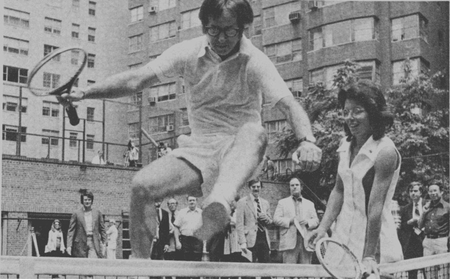
Bobby Riggs, although world champion over 30 years ago, recently proved again and again the importance of mind over matter.
Ngay cả quan sát thông thường cũng cho thấy rằng nam giới có thể lặng lẽ chịu đựng những lỗi (lỗi kép, chơi sai sân, đánh mất bóng, không biết tỷ số) do các đối tác không phải là bạn tình của họ mắc phải, nhưng có thể bùng phát như Mt. Vesuvius nếu vợ họ bị mất một điểm. Tương tự như vậy, các thí sinh nữ có nhiều khả năng khiến chồng mình phải nhận những lời nhận xét gay gắt và tính khí nóng nảy, trong khi chỉ thể hiện thái độ ngọt ngào với một đối tác không liên quan.
Arthur Fixel, một người nghiệp dư đã tham gia các giải đấu câu lạc bộ từ rất lâu, nói: "Chơi trong một giải đấu với vợ cũng giống như dạy cô ấy lái ô tô, hoặc có thể là xây nhà. Hôn nhân vẫn tồn tại nhưng căng thẳng rất nghiêm trọng."
Nói chung, người ta thừa nhận rằng bạn không cần phải là một tay vợt đánh đơn giỏi để xuất sắc ở nội dung đánh đôi và rằng hai tay vợt đánh đơn giỏi có thể không tạo thành một đội đánh đôi có năng lực. Trên thực tế, bạn thậm chí có thể không phải là một tay vợt đánh đôi giỏi nhưng vẫn có thể duy trì trạng thái công bằng ở nội dung đôi nam nữ. Nhóm Gestalt quan trọng hơn là tài năng của cá nhân. Nhóm có thể lớn hơn tổng của hai phần của nó.
Một người phụ nữ quen thân của tôi có kinh nghiệm chơi vợt chỉ giới hạn ở một môn cầu lông nhỏ ở khu phố và thỉnh thoảng nhìn thấy những đứa con tuổi teen của mình và người chồng phong trần đang thi đấu khi cô ấy đi qua sân quần vợt trên đường đến điểm phát bóng đầu tiên, đã đến tham dự một giải đấu đôi nam nữ ở câu lạc bộ nông thôn của chúng tôi để xem gia đình cô ấy thi đấu, và gần như đã giành chiến thắng với tư cách là một người tham gia.
Ngay trước khi trận đấu bắt đầu, nam thành viên của đội hạt giống số 1 thông báo đồng đội (vợ) sẽ không thể thi đấu do bị ngựa đá (săn cáo). Anh ấy đã được ban tổ chức giải đấu cho phép đặc biệt để thi đấu với một đối tác thay thế. Người quen của tôi là người duy nhất có giới tính phù hợp ngay lập tức, vì vậy với đôi giày và vợt mượn, một cái quá nhỏ, một cái quá lớn, cô ấy bắt đầu hành động.
Không ai nhầm cô ấy với Chris Evert, nhưng cô ấy đã cố gắng tránh xa, thỉnh thoảng nhận được một quả giao bóng, và khi trận đấu diễn ra, cô ấy đã trả lại những quả bóng mà cô ấy không thể tránh được, một cách đều đặn. Đối tác của cô, từng là thành viên của đội quần vợt Đại học Duke, coi tình tiết này là một thử thách và chạy khắp sân với sức tàn phá khủng khiếp. Họ đã thắng trận đầu tiên. Trong hiệp thứ hai, họ đang dẫn đầu trong một set cuối cùng đầy cam go và đã thu hút được một khoảng cách đáng kể, khi đầu gối của Joe bị tách ra, khiến trận đấu sớm kết thúc. Đối thủ của họ đã giành chiến thắng trong giải đấu.
Sự đồng thuận về quan điểm đã được vợ của Joe bày tỏ vài ngày sau đó tại một cuộc họp mặt xã hội, "Joe có thể đã bế Betty nếu đầu gối của anh ấy không bị cản trở."
“Họ đang chơi trò gì thế?” một người đến sau quan tâm đã hỏi, đó tất nhiên là một câu hỏi hay.
Hình minh họa trên không có nghĩa là việc luyện tập là không cần thiết hoặc các cú đánh cơ bản, khả năng di chuyển, động tác bằng chân, sự nhanh nhẹn và kiến thức về trò chơi là không quan trọng. Một đặc điểm gần như chí mạng của hàng nghìn cầu thủ là họ hiếm khi sẵn sàng luyện tập. Các yếu tố khác đều ngang bằng, người tập sẽ giỏi hơn người không tập và phần lớn các tay vợt có kỹ năng tốt hơn sẽ giành chiến thắng, nhưng đặc biệt ở nội dung đôi nam nữ, yếu tố tâm lý có cơ hội đảm bảo rằng những thứ khác không bằng.
George Agutter, một huấn luyện viên quần vợt nổi tiếng trong quá khứ, thường nói với các học trò của mình rằng: “Hãy đạt được phong độ và bạn có thể dựa vào trí thông minh của mình để dạy bạn chiến thuật”. Đó vẫn là lời khuyên tốt. Chiến thuật đầu tiên trong nội dung đôi nam nữ là đạt được và thể hiện được phong độ nữ tốt. Một bộ trang phục hấp dẫn dành cho nữ sẽ tạo sự tự tin cho bản thân, hoặc ít nhất cho phép cô ấy giữ được suy nghĩ của mình về trò chơi. Việc trình bày giải phẫu phù hợp có thể làm mất đi sự tập trung trong một trò chơi mà sự tập trung và vị trí là quan trọng nhất. Một mắt cá chân gọn gàng và một đùi xoay cẩn thận có thể không có giá trị bằng một cú đánh trái tay ổn định, nhưng nó chắc chắn có giá trị hơn một cú giao bóng không thường xuyên hoặc một hoặc hai cú đập bóng qua đầu.
Các quý cô nên mặc thứ gì đó để tránh ánh nắng chiếu vào mắt và nếu có thiết bị phù hợp thì nên mặc váy tennis hoặc quần đùi và áo sơ mi ngắn gọn nhất được ủy ban giải đấu, bộ phận giải trí, cảnh sát hoặc bất cứ ai coi là tươm tất. Trang phục như vậy, hoặc thiếu nó, cho phép tự do di chuyển, sẽ khiến đối thủ nam của họ mất tập trung, khiến đối thủ nữ tức giận và gây khó chịu cho cả hai. Mặt khác, nếu khả năng bẩm sinh của họ khiến họ thực sự trông đẹp nhất trong một Mother Hubbard, thì hãy quên quần áo đi và phụ thuộc nhiều hơn vào ổ âm thanh và một cú giao bóng tốt.
Đàn ông cũng cần một số loại phấn mắt, nhưng trừ khi vóc dáng của họ có chất liệu trung tâm, trang phục của họ sẽ không ảnh hưởng đến trận đấu. Chỉ cần nói rằng nếu một người xuất hiện với chiếc mũ lưỡi trai và quần jean, anh ta sẽ không tạo được hình ảnh như nhà vô địch Wimbledon năm sau đang có mặt.
Đánh đôi nam nữ được chơi theo hai nhóm điều kiện chung - như các trận đấu giữa bạn bè và/hoặc người thân và thi đấu theo giải đấu, thường là hoạt động giải trí của câu lạc bộ hoặc thành phố. Những cái trước thì giản dị hơn và có phần trò chuyện hơn. Điều sau khiến các thí sinh bị căng thẳng về tinh thần hơn.
Một cầu thủ nam trên mức trung bình có thể ít quan tâm hơn đến những cú đánh cơ bản của đồng đội mà quan tâm nhiều hơn đến sự nhanh nhẹn và sức chịu đựng của bản thân. (Nếu trò chơi của người đàn ông dưới mức trung bình, anh ta có thể muốn vượt qua các nữ hoàng sắc đẹp để lấy một đối tác có lối chơi gần giống với Billie Jean King nhất có thể.) Nói chung, nếu anh ta có một đối tác sẽ đối mặt với lưới, không trú ẩn bên ngoài con hẻm chờ giao bóng của anh ta và sẽ di chuyển để đón bóng khi nó được đánh đến khu vực sân của cô ấy, thì anh ta đã dẫn trước trò chơi. Nếu cô ấy có thể giao bóng với ít hơn hai lỗi kép trong một trận đấu, hãy cộng thêm.
Mặt khác, các quý cô sẽ được hưởng lợi từ một đối tác có phạm vi hoạt động rộng nhưng lịch sự không để bắn lợn, một sự kết hợp không phải lúc nào cũng dễ dàng tìm thấy. Một người đàn ông đánh bóng với sự cân nhắc thầm lặng và sức bật đáng kể sẽ rất hữu ích. Tránh loại “sĩ quan” hoặc “người hướng dẫn” luôn có mặt, người đưa ra lời khuyên cho mỗi lần bắn và đưa ra lời bình luận liên tục về những gì bạn nên làm. Sự bù đắp duy nhất là anh ta có thể làm tăng huyết áp của đối thủ nhiều như huyết áp của bạn và ảnh hưởng xấu đến trận đấu của họ hơn vì có hai người trong số họ. Loại này thường chơi nhiều đĩa đơn.
Các đối tác phải biết nhau về điểm mạnh và điểm yếu của trò chơi cũng như đặc điểm tính cách để có hiệu quả tối đa. Sự trung thực không che giấu là chính sách duy nhất để thông báo cho đồng đội của bạn về những hạn chế và kỹ năng đặc biệt trong trò chơi của bạn. Sự khiêm tốn sai lầm và đánh giá quá cao đều có hại.
Thống nhất về kế hoạch trò chơi trước khi hành động bắt đầu. Không chỉ cách bao quát sân đấu và những việc cần làm trong những tình huống đặc biệt, mà còn là thái độ bạn muốn truyền đạt cho đối thủ của mình. Các trò chơi của bạn chỉ có thể bổ sung cho nhau một cách hợp lý khi đạt được sự hài hòa về mặt tinh thần.
Biết điều gì đó về đối thủ của bạn. Nếu bạn có cơ hội xem họ thi đấu hoặc thậm chí khởi động, điều đó sẽ hữu ích. Nếu không, hãy nói chuyện với họ, nhìn họ thật kỹ. Tạo ấn tượng về cách họ chơi và tính khí của họ như thế nào. Thiết bị của họ có vẻ đã qua sử dụng, quần áo của họ có sang trọng không, họ có dễ bị kích động, điềm tĩnh, lắm mồm không...?
Thái độ là rất quan trọng. Cách tiếp cận an toàn là bắt đầu bằng sự thân mật, ít nhất là cho đến khi bạn tìm hiểu thêm về họ. Chỉ cần bạn đang chiến thắng thì đừng thay đổi thái độ, nhưng nếu bạn tụt lại phía sau, vẫn có những lựa chọn thay thế. Khi đối mặt với kẻ to mồm, bạn có thể trở nên im lặng, hoặc nếu đối thủ của bạn im lặng, việc trò chuyện nhiều có thể khiến bạn khó chịu.
Bạn và đối tác của bạn có thể áp dụng các cách tiếp cận khác nhau theo thiết kế - một cách thân thiện, miễn phí, cách kia là những cuộc gọi nặng nề - nghi ngờ, có dấu hiệu trầm trọng hơn. Đội cảnh sát đã sử dụng thành công phương pháp này trong việc xử lý nghi phạm. Không có lý do gì nó không thể phát huy tác dụng trên sân tennis, mặc dù nó sẽ không nâng cao được mức độ nổi tiếng của đối tác “mũ đen”.
Một số người cáo buộc rằng những rắc rối của Pancho Gonzales với người chỉ đạo trong nhiều năm đã được lên kế hoạch cho các tập phim để “ra đòn” hoặc phá vỡ nhịp điệu của đối thủ. Sự bất đồng có chủ ý với đối tác của bạn có thể được sử dụng theo cách tương tự.
Có rất nhiều điều bạn có thể làm để gây ấn tượng với đối thủ, nhưng hãy nhớ rằng tác động có thể là tích cực hoặc tiêu cực. Đối thủ của bạn có thể mất quyền kiểm soát trò chơi của họ. Mặt khác, bạn có thể khiến họ nổi điên, tăng quyết tâm chiến thắng, giảm mệt mỏi và bị chính mánh lới quảng cáo của bạn đánh bại. Xử lý chiến tranh tâm lý một cách cẩn thận.
Bạn sẽ thường xuyên nhận ra khi có người đang cố gắng xoa dịu tinh thần của bạn. Một biện pháp đối phó hiệu quả là bắt chước hành động đó. Bạn sẽ ngạc nhiên khi thấy nó sẽ dừng lại nhanh như thế nào.
Sinh viên ngành tâm lý quần vợt có thể học được nhiều điều từ bóng chày và bóng đá. Người ném bóng thay đổi tốc độ ném cũng như vị trí họ ném tới. Nếu bạn là một trong số nhiều người có cú giao bóng đầu tiên cứng (thường là lỗi), cú giao bóng thứ hai mềm hơn (thường là trong), thỉnh thoảng hãy thay đổi. Phục vụ món đầu tiên mềm. Một người chơi chuẩn bị trả giao bóng nhanh sẽ gặp khó khăn với một pha phạm lỗi.
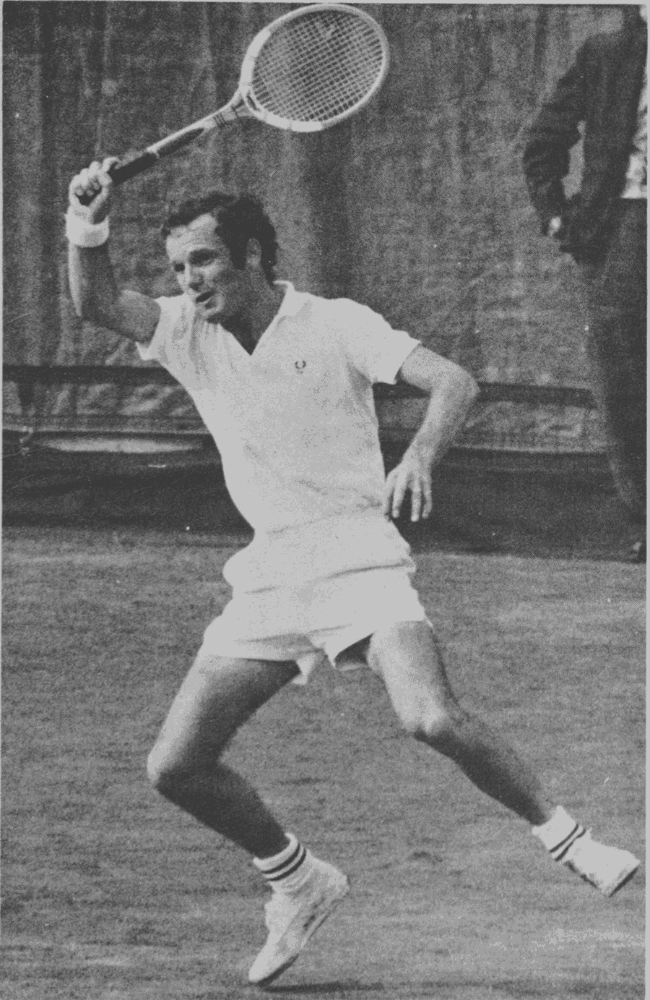
Tom Okker once said that he never believes that his opponent can hit a shot that he cannot run down and return.
Trong bóng đá, mắt giả là một công cụ hữu ích cho người chuyền bóng. Nó có thể dành cho máy chủ. Nhìn về phía thuận tay và giao bóng về phía trái tay. Cũng nên nhớ rằng một số người chơi có thể trả lại quả giao bóng ở hai bên dễ dàng hơn so với khi nó được đánh thẳng vào họ. Đưa ra ý tưởng rằng bạn sẽ giao bóng đến một điểm và sau đó đánh nó ở một điểm khác. Tất nhiên, điều này thật khó khăn nếu bạn không biết chính mình sẽ đi đến đâu.
Chơi trên mạng cũng mang lại cơ hội lớn cho các “diễn viên”. Kẻ săn trộm giả rất hài lòng. Thiết lập nó bằng cách săn trộm một vài lần, sau đó dùng đầu và cơ thể nhử về phía đường giữa, lao về phía con hẻm. Trong một số trường hợp đáng ngạc nhiên, bạn sẽ có một cú đánh dễ dàng khi đối thủ của bạn cố gắng đánh xuyên qua khu vực mà họ nghĩ bạn đã bỏ trống.
Di chuyển, đặc biệt là khi có người ở trên lưới. Rời mắt khỏi bóng là một trong những lỗi phổ biến nhất trong quần vợt. Chuyển động làm chuyển hướng sự chú ý. Ngoài ra, bạn còn tạo ra một mục tiêu khó đánh hơn.
Đây là một số kỹ thuật đòi hỏi phải vận động trí óc nhiều hơn là khả năng thể thao. Có rất nhiều người khác mà bạn có thể mơ ước. Tất nhiên, bạn không thể khéo léo trong mọi lần chơi, nhưng suy cho cùng, ở nội dung đôi nam nữ, việc bạn chơi trò chơi không quan trọng lắm. Vấn đề là bạn chơi với ai, bạn thấy vui như thế nào và điều gì xảy ra sau đó.
Chương 9
Làm Chủ Nghệ Thuật Kiểm Soát Cú Đánh
Anthony B. Gabriele, Ph.D. — Nhà trị liệu tâm lý, Thành phố New York
Chương này đề cập đến lý do tại sao chơi tennis giỏi lại khó đến vậy. Không cần phải xin lỗi cho tuyên bố này, vì bất kỳ ai chơi trò chơi này, hoặc có liên quan theo cách nào đó với những người chơi trò chơi đó, đều nhận thức rõ về sự không hài lòng thường xuyên của tay vợt này đối với màn trình diễn của anh ta. Hơn nữa, lời phàn nàn của anh ấy là có cơ sở. Nếu người ta quan sát lối chơi ở cấp câu lạc bộ và so sánh nó với lối chơi trong giải đấu hoặc hình ảnh lý tưởng hóa trong tâm trí các cầu thủ, người ta không thể không nhận thấy sự tương phản. Điều này đúng ngay cả với những cầu thủ câu lạc bộ hàng đầu. Sự thật là quần vợt là một môn thể thao rất khó và nhìn có vẻ đơn giản.
Học chơi tennis giỏi sẽ khó khăn ngay cả trong điều kiện học tập tốt nhất. Trên thực tế, không ai đến trường để học quần vợt. Ngay cả những trại quần vợt mới dành cho người lớn và trẻ em cũng chỉ phục vụ mục đích chữa bệnh hơn là giảng dạy. Mọi người học chơi quần vợt bằng cách quan sát những người xung quanh họ, và những quan sát này được bổ sung bằng những lời khuyên, dù tốt hay xấu, từ giáo viên, cố vấn cắm trại, bạn bè, người thân và đôi khi là một chuyên gia. Cơ hội thi đấu hoặc luyện tập hầu như luôn bị hạn chế. Các dịp dành cho một trong hai có thể được phân tách theo tuần, tháng hoặc mùa. Những người quan tâm nhất đến trò chơi sẽ chơi nhiều nhất có thể và cải thiện. Đây là một cách khá lộn xộn để học một trò chơi phức tạp; tuy nhiên, đây là nền tảng quần vợt của một tay vợt điển hình của câu lạc bộ “A” hoặc “B”, người luôn quyết tâm tiến bộ một cách mãnh liệt và không ngừng nghỉ. Nếu không được đào tạo có hệ thống hơn, người chơi cũng dễ mắc phải những điểm yếu về tâm lý, điều này cản trở trò chơi của anh ta.
Để thành thạo các cú đánh một cách chính xác, người ta phải tìm hiểu chuỗi phản ứng có độ tin cậy cao nhưng vẫn có mức độ linh hoạt cao tương đương. Không có vấn đề gì về việc học một mối liên hệ cứng nhắc giữa kích thích và phản ứng. Không có hai quả bóng nào nảy theo cùng một cách hoặc ở cùng một vị trí. Tuy nhiên, phải thực hiện những điều chỉnh rất nhanh, ở giữa chuỗi, để điều chỉnh cú đánh đối với những cú nảy không tốt hoặc những điều bất ngờ khác. Yêu cầu đối với loại hệ thống phản ứng này là quá cao đối với các phản ứng cảm giác-vận động cục bộ. Người ta phải giả định rằng toàn bộ các nét, hoặc phần lớn các nét, được lưu giữ trong não dưới dạng các đơn vị riêng lẻ. Trên sân, mắt nhìn bóng từ phía thuận tay, chúng kích hoạt toàn bộ cú đánh thuận tay hoặc theo từng phần lớn. Vì vậy, để trở nên thành thạo, người ta phải học các nét một cách nhuần nhuyễn và tổng thể nhất có thể. Sự can thiệp có ý thức vào cơn đột quỵ, dù là để điều chỉnh một phần nhỏ nào đó của cơn đột quỵ, hoặc để sửa đổi nó, đều có tác động gây rối loạn. Sau khi biết được cơn đột quỵ, não sẽ tổ chức nó và khi được kích hoạt bởi mắt, não không chỉ tạo ra chuỗi phản ứng thích hợp mà còn “giám sát” phản ứng, tùy chỉnh điều chỉnh nó cho phù hợp với nhu cầu cụ thể.
Tuy nhiên, những chuỗi phản ứng này, tạo thành các cú đánh và chuyển động của quần vợt, thường bị can thiệp theo một số cách, mỗi cách đều là nguồn gốc gây ra lỗi; lỗi do luyện tập không đầy đủ, lỗi do nhầm lẫn các trình tự cú đánh giống nhau, lỗi do cưỡng ép phán đoán sai, lỗi do phối hợp thị giác không tốt. Mỗi loại lỗi này đều liên quan đến các lĩnh vực tâm lý khác nhau. Hai phần đầu tiên được tiếp cận tốt nhất từ quan điểm phát triển kỹ năng vận động. Hai vấn đề cuối cùng sẽ được tiếp cận từ quan điểm tính cách và hành vi giữa các cá nhân.
Từ những gì đã nói cho đến nay, các yêu cầu cơ bản để học các nét là: một, thực hành các nét một cách tổng thể không thay đổi; hai, sự phát triển các thói quen thị giác cần thiết để “điều chỉnh” từng nét vẽ cho phù hợp với tình huống cụ thể.
Yêu cầu đầu tiên trong số này bị vi phạm khi người chơi cố gắng học hai cú đánh liên quan cùng một lúc, trước khi một trong hai cú đánh được học kỹ lưỡng. Đây là điều mà nhiều người cố gắng thực hiện khi họ thay đổi nét phẳng bằng nét cắt. Tuy nhiên, những nét này có thể giống nhau nhưng chúng là những chuỗi riêng biệt. Việc chú ý đến hai cú đánh thuận tay sẽ làm loãng đi “bài tập không ngừng nghỉ” cần thiết để học một trong hai cú đánh này một cách đúng đắn. Hơn nữa, điều này tạo ra một tình huống trong đó phải đưa ra quyết định xem nên sử dụng cái nào trong hai cái, bất cứ khi nào cần một cú đánh thuận tay. Đối với người chơi bình thường, kiểu mơ hồ này góp phần làm suy yếu chuỗi trình tự và khiến lỗi của người chơi tăng lên. Không ở đâu đây lại là một vấn đề nghiêm trọng như với việc giao bóng. Đặc biệt ở đây, có truyền thống giao bóng “thứ nhất” và “thứ hai”. Và, vì người chơi có hai lần cố gắng giao bóng, điều này càng củng cố xu hướng giao bóng theo cách này ở lần đầu tiên và cách khác vào lần thứ hai.
Sự thiếu quyết đoán không tạo ra cùng một loại vấn đề với cú giao bóng nhiều lần như nó tạo ra với nhiều cú đánh chạm đất. Người ta có thời gian khi phục vụ để quyết định phải làm gì. Tuy nhiên, các vấn đề khác phát sinh. Giao bóng là một cú đánh khó học. Điều này một phần là do nó được sử dụng ít hơn các cú đánh khác trong quá trình thực hiện một hiệp đấu. Những người chơi tập luyện trong một hoặc hai giờ để thực hành các cú đánh mặt đất của họ, sẽ không thực hiện được điều tương tự đối với cú giao bóng của họ. Sự mơ hồ về các yếu tố tạo nên trình tự giao bóng, khiến người chơi gặp khó khăn khi tự mình thực hành cú giao bóng của mình trên sân bóng ném hoặc ở một nơi nào khác. Đối với những người may mắn có sẵn một sân trống, việc mang xô bóng ra sân, trong hầu hết trường hợp, có nghĩa là cố gắng đánh bóng mạnh nhất có thể trong khi giữ nó trong sân giao bóng, điều mà họ không làm trong một trận đấu. Kết quả là, người chơi phần lớn bị buộc phải “luyện tập” cú giao bóng của mình trong các tình huống cạnh tranh. Học cách giao bóng trong một trận đấu cũng giống như học chơi violin giữa đường cao tốc. Nhiều tác nhân kích thích tranh giành sự chú ý của một người hơn mức người ta có thể mong đợi một cách hợp lý. Thêm vào những hạn chế này là vấn đề mỏi cánh tay vì các cơ liên quan yếu và người ta có thể thấy sự cần thiết phải thực hành tập trung và có nghi thức chỉ một loại cú đánh giao bóng.
Bởi vì các cú đánh phải hoạt động một cách tổng thể và do đó dễ bị gián đoạn do các phản ứng gây rối, nên cách phòng thủ duy nhất của chúng ta là phải đáng tin cậy. Do đó, không thể đánh giá thấp giá trị của các bài tập và diễn tập. Không cần phải lo sợ về việc điều chỉnh học sinh-người chơi theo một kiểu phản ứng cứng nhắc. Ngay cả trong trường hợp cực đoan là vận động viên chuyên nghiệp đứng cạnh lưới và ném bóng cho học sinh, đường bay và độ nảy của bóng sẽ có thể thay đổi. Các cuộc tập trận càng khéo léo thì càng tốt. Một rủi ro lớn hơn sự cứng nhắc là sự phát triển của những “cú đánh” không được luyện tập trong lối chơi cạnh tranh. Những biến thể đột quỵ này là những thói quen xấu mà huấn luyện viên cố gắng loại bỏ. Các bài tập cho phép phát triển dần dần nhiều biến thể của cùng một cú đánh. Nếu một biến thể mới được giới thiệu sau khi phiên bản trước của nó đã được học và luyện tập kỹ lưỡng, thì mỗi biến thể tồn tại dưới dạng một cú đánh độc lập. Mỗi cái bao gồm một chuỗi phản hồi riêng.
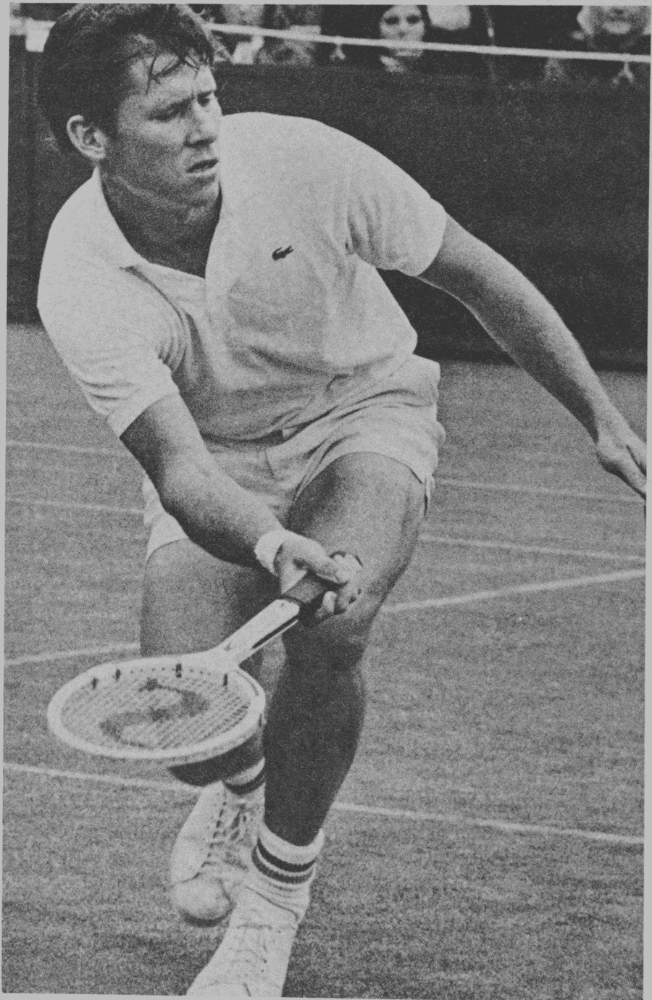
Dennis Ralston lives his whole life aggressively; even his walk is bold, and his tennis game dynamic.
Một loại hành vi tạo ra lỗi hoàn toàn khác, đặc biệt gây rối loạn cho sự phát triển của các cú đánh đáng tin cậy, là các biến thể bắt buộc của các cú đánh. Các biến thể này bao gồm các cú đánh hoặc giao bóng thông thường, được củng cố bằng tốc độ hoặc độ xoáy của bóng tăng mạnh.
Một ví dụ về điều này là cú giao bóng hoặc cú đánh có lực đánh quá mạnh. Sự kiên trì của những phản ứng này bất chấp mọi loại bằng chứng cho thấy họ thiếu khôn ngoan, hàm ý một sự ép buộc phi lý nào đó từ phía người chơi. Một số vấn đề phát sinh. Đầu tiên là ở tốc độ nhanh, việc học và kiên định một kỹ năng mới sẽ khó hơn so với tốc độ chậm hơn. Để thực hiện một cú giao bóng di chuyển với sức mạnh và tốc độ khác thường, người chơi phải thực hiện chuyển động giao bóng nhanh hơn mức có thể thoải mái và vẫn tích hợp các yếu tố quan trọng liên quan. Do đó, các giai đoạn thực hành cẩn thận trong việc kết hợp những gì tay phải làm với những gì tay trái làm được xen kẽ với các giai đoạn, thường là trong các hiệp, khi lòng tham quyền lực vượt qua những giai đoạn ban đầu mong manh của năng lực. Không cần phải nói, không có vị thần quần vợt nào có thể cung cấp cho một người một cú giao bóng tốc độ 80 dặm một giờ vào thời điểm quan trọng khi, trong lúc luyện tập hoặc trong giờ học, một người đang đánh bóng ở khoảng năm trăm với cú giao bóng tốc độ 40 dặm một giờ. Tuy nhiên, bên cạnh sự thất vọng, việc xen kẽ việc luyện tập cẩn thận với tưởng tượng liều lĩnh sẽ gây ra sự tàn phá cho sự phát triển trò chơi của một người và người ta có rất ít thời gian để thực hành các chuyển động chính xác để chúng trở nên đáng tin cậy ngay cả trong những thời điểm căng thẳng tối đa.
Điều đúng với cú giao bóng cũng đúng với các cú đánh khác. Người chơi thực hiện với tốc độ hợp lý, chơi trò chơi của mình, khi ở một thời điểm quan trọng, người chơi thường phản ứng, không có lý do rõ ràng, bằng cách cố gắng thực hiện cú đánh với tốc độ và theo cách mà anh ta chưa từng làm trước đây. Ở những điểm dài tính từ đường cơ sở, người ta có thể quan sát thấy căng thẳng gia tăng sau mỗi cuộc trao đổi và người ta tự hỏi ai sẽ là người thay đổi tốc độ hoặc thay đổi mô hình? Tất nhiên, những người chơi hàng đầu luôn thay đổi tốc độ, xoay chuyển mọi thứ. Tuy nhiên, cầu thủ của câu lạc bộ không có khả năng này và việc anh ta hành động như thể anh ta có khả năng này là không thực tế. Anh ta làm như vậy một cách bắt buộc chứ không phải là một hành động phán đoán kém. Điều này trở nên rõ ràng khi người chơi phản ứng với thái độ chán ghét bản thân, cho thấy rằng anh ta “đã làm lại”, rằng anh ta đã phá vỡ quyết tâm kiểm soát phản ứng phản bội.
Sự khác biệt giữa khả năng phán đoán kém và phản ứng cưỡng chế là điều quan trọng cần được thực hiện nếu chúng ta muốn hiểu bản chất của hành vi gây rối. Hành vi phán đoán kém là điều thường thấy trên sân quần vợt. Về mặt cổ điển, đây là những tình huống mà người ta đánh giá hai cộng hai và đưa ra năm. Do đó, người ta có thể thấy những người chơi, bằng cách nào đó đã học được rằng chiến lược “đánh trái tay” là một chiến lược tốt, sẽ đối đầu với những người chơi khác có mặt trái tay là mặt mạnh hơn của họ. Thay vì đánh giá lại chiến lược của mình, nhiều người tiếp tục đánh về phía trái tay. Họ dường như không có chút khẩn trương nào để làm điều đó. Đơn giản là họ chưa “nghĩ ra” rằng mặt mạnh của đối thủ này chính là mặt trái tay của anh ta. Tuy nhiên, những phản ứng cưỡng bức xảy ra khi người chơi quyết tâm rằng chúng không xảy ra. Khi chuẩn bị giao bóng hoặc nhận giao bóng, người chơi có đủ thời gian cần thiết để chuẩn bị làm điều đúng đắn. Nếu một người quan sát người chơi và nói chuyện với họ, người ta sẽ biết rằng thời gian này thật lãng phí. Hết cầu thủ này đến cầu thủ khác sẽ báo cáo rằng tất cả những gì anh ta muốn làm là trả bóng qua sân mà không có gì đặc biệt về việc đó. Tuy nhiên, những gì anh ta làm có thể là một cái gì đó hoàn toàn khác. Anh ta có thể cố gắng đập bóng dọc theo đường biên hoặc cố gắng thực hiện một cú trả bóng theo góc nhọn, xoáy từ trên xuống, cả hai đều không bao giờ đến được đích đã định. Trong tình huống này, có vẻ như khả năng phán đoán kém không có hiệu quả. Người chơi nhận thấy rằng tỷ lệ thuận lợi cho việc trả giao bóng vừa phải, chỉ cần đưa bóng vào cuộc. Tuy nhiên, anh ta đã không thực hiện trình tự; cánh tay của anh ấy được hướng dẫn bởi những ý định khác.
Những người coi bản năng là lời giải thích sẽ thấy trong tình huống này là sự xung đột cổ điển giữa những xung động hung hãn và những cân nhắc hợp lý. Đây là một quan điểm hạn chế vì nhiều lý do. Có một điều, nó không giải thích được tại sao, trong một khoảng thời gian hẹp, phản ứng hung hăng lại xảy ra vào một thời điểm này chứ không phải vào thời điểm tiếp theo. Những phản ứng bốc đồng này, dù hung hãn hay không, không chỉ xảy ra vào những thời điểm quan trọng. Khi được quan sát một cách bình thường, vô kỷ luật, chúng dường như xảy ra vào những thời điểm có ý nghĩa quan trọng về mặt tâm lý, chẳng hạn như khi người chơi đang thắng. Nếu phản ứng bốc đồng khiến anh ta mất điểm, anh ta sẽ kết luận rằng mình không thể giành chiến thắng. Tuy nhiên, anh ta phải giải thích thế nào về những phản ứng này khi chúng xảy ra khi anh ta đang thua cuộc hoặc chỉ đang phục hồi? Vấn đề là những hệ quy chiếu này không đủ để giải thích tại sao phản ứng bốc đồng lại xảy ra ở thời điểm này chứ không phải thời điểm khác.
Vai trò của phản ứng cưỡng bức-gây rối là cơ bản đối với cá nhân trong quần vợt cũng như trong cuộc sống. Trở nên “ổn định”, “ngầu” hoặc “làm việc của mình” về cơ bản là tạo ra những phản ứng thích hợp theo cách có thể đoán trước được. Tuy nhiên, kiểu đều đặn này không phải là điểm mạnh của người đồng tính. Với đủ số lượng thử nghiệm, các cá nhân sẽ bộc lộ một dạng lỗi đặc trưng. Những lỗi này có ý nghĩa nhất khi được hiểu là các chuỗi bị xáo trộn.
Mọi người dường như buộc phải làm xáo trộn chuỗi phản ứng hữu ích. Họ làm như vậy rất nhiều lần, trong và ngoài sân quần vợt. Tất nhiên, người ta có thể nghĩ đến những người nổi tiếng bình thường, “... mà bạn có thể chỉnh đồng hồ của mình.” Tuy nhiên, những quan sát dựa trên kinh nghiệm hàng ngày chứng minh rằng sự nhất quán như vậy thực sự rất hiếm hoặc chỉ tìm thấy được trong những tình huống hạn chế nhất. Thật vậy, hành vi nhất quán hoàn toàn chỉ được tìm thấy trong giới hạn của các tình huống chuyên môn có tính chuyên môn cao, tức là các tình huống mà các cá nhân tương đối tài năng dành lượng thời gian ngày càng lớn để đào tạo trong các lĩnh vực năng lực ngày càng nhỏ. Việc học quá nhiều và ‘sự chuyên môn hóa hạn hẹp đòi hỏi phải có được năng lực đáng tin cậy gợi ý một số kết luận: rằng các lực lượng gây rối mạnh phải được khắc phục bằng sự kiên trì không ngừng nghỉ; rằng hầu hết mọi người đều có thể thấy sự xâm nhập của những phản ứng mang tính chất phá hoại cưỡng bức.
Các phản ứng đột phá, ở mức độ này hay mức độ khác, xâm nhập vào quá trình học tập của chuỗi phản ứng, bất kể tình huống học tập được sắp xếp một cách có phương pháp như thế nào. Do đó, các chiến lược giảng dạy nên dạy các động tác như một động tác tổng thể và thiết kế các tình huống để giảm thiểu tác động của các phản ứng gây rối.
Các bài tập thực hành không chỉ giúp việc học thứ tự các câu trả lời trở nên dễ dàng hơn mà còn cung cấp bối cảnh tốt nhất cho việc thực hành, cái mà tôi sẽ gọi là chức năng “giám sát”. Đây là một phần của phản ứng học được nhằm điều chỉnh trình tự phản ứng cho phù hợp với hoàn cảnh cá nhân. Chức năng giám sát dễ bị xao nhãng và gặp trục trặc giống như một phần tuần tự của phản ứng đột quỵ. Chính trong mối liên hệ này, việc giao tiếp bằng mắt với quả bóng là bắt buộc. Bộ não không thể điều chỉnh trình tự đột quỵ cho phù hợp với bối cảnh riêng lẻ nếu nó không biết bối cảnh đó là gì. Do đó, trong phần này của cú đánh, tác động của xu hướng cưỡng bức gây rối có thể được quan sát thấy ở những biến đổi trong nhận thức thị giác của một người về quả bóng.
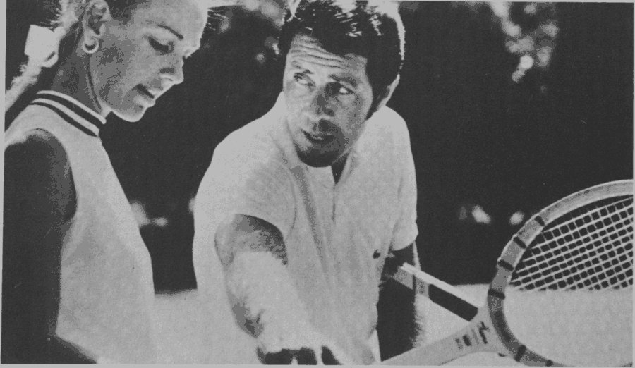
A guest listens intently as professional Nick Bollettieri gives her pointers at the Cerromar Beach Hotel in Puerto Rico.
Cho dù chuỗi phản ứng được học tốt đến đâu thì phần giám sát của phản ứng đột quỵ vẫn phải hoạt động với sự cảnh giác cao độ. Chức năng của nó không thể “học được” theo nghĩa là người ta có thể mong đợi nó hoạt động mà không cần giám sát. Quả thực có thể nói rằng sự tiếp xúc trực quan với quả bóng chính là sự tập trung trong quần vợt. Càng tập trung, người ta càng có nhiều khả năng tạo ra những nét vẽ hoàn hảo ngay cả trong bóng tối. Đối với một số người, có vẻ như một nghịch lý là khi một người càng chơi quần vợt thành thạo thì càng tham gia vào quả bóng nhiều hơn. Quả thực, vấn đề là trình độ thông thạo càng cao thì mức độ tập trung càng cao. Nếu sự tập trung có vẻ không triệt để, đó chỉ là do phản ứng thị giác đã trở nên hiệu quả hơn khi mức độ sử dụng ngày càng tăng và chuyên biệt.
Ngoài vóc dáng, thói quen thị giác tốt có lẽ là nguyên nhân dẫn đến sự khác biệt về năng khiếu giữa những học viên mới bắt đầu chơi môn thể thao này. Những người có kinh nghiệm tốt trong các hoạt động liên quan đến phối hợp tay-mắt dường như làm tốt nhất, chẳng hạn như vận động viên bóng chày, xạ thủ máy bay. Việc người điều khiển có thể dễ dàng chọn một đường truyền trong không khí bằng một tay chứng tỏ thói quen thị giác. Phong cách bắt bóng giản dị rõ ràng của anh ấy là do mức độ chú ý rất phát triển của anh ấy. Thói quen trực quan tốt thúc đẩy việc thực hành phát triển cú đánh tốt hơn vì học viên đánh được nhiều bóng hơn một cách trơn tru và sạch sẽ. Những học sinh kém may mắn hơn không thể hiểu tại sao chuyên gia cứ bảo họ xem quả bóng khi họ chắc chắn rằng mình đang xem nó. Sự thực là học viên khó có thể quan sát được những thay đổi quan trọng trong khả năng tập trung của chính mình. Người ta có thể rất thoải mái trải qua cuộc sống mà không cần phải theo dõi tỉ mỉ một mục tiêu đang di chuyển. Trừ khi một người có khuyết tật rõ ràng về khả năng đọc và phải nhờ đến sự huấn luyện đặc biệt, nếu không thì người ta khó có thể biết nhiều về thói quen đặc trưng của mình là quét và tập trung thị giác. Dù những thói quen thị giác này có thể rất quan trọng nhưng chúng không được dạy trực tiếp; thay vào đó, chúng phát triển, nếu thực sự chúng phát triển, ngẫu nhiên trong quá trình học các nét vẽ. Nếu một người học quần vợt nghiêm túc muốn cải thiện kỹ năng của mình, anh ta phải dành nhiều thời gian cho việc phát triển thói quen thị giác cũng như dành nhiều thời gian cho việc phát triển các cú đánh. Phần “giám sát” của cú đánh là gót chân Achilles của quần vợt. Không có phần nào khác của trò chơi phải được áp dụng nhất quán và đó là phần dễ bị phân tâm nhất. Các biến thể nhỏ dẫn đến lỗi xấu. Điều gì khiến sự chú ý tăng lên hay giảm xuống chắc chắn khiến người chơi phải quan tâm. Không thể dễ dàng phân chia sự chú ý, và do đó, bất cứ điều gì xảy ra trên sân khiến người chơi không chú ý đến quả bóng nữa, sẽ làm suy yếu khả năng của não trong việc điều chỉnh cú đánh cho phù hợp với tình huống. Có rất nhiều phiền nhiễu. Rõ ràng nhất là các kích thích thị giác xâm nhập vào trường thị giác, tức là một quả bóng lăn từ sân bên cạnh hoặc ai đó đi ngang qua sân. Các kích thích thính giác cũng xâm nhập vào ý thức của người chơi và có thể gây ra sự mất tập trung - rất có thể là những âm thanh chói tai lớn hoặc những âm thanh khó nghe dai dẳng khiến người chơi tự hỏi cái quái gì đang tạo ra âm thanh đó. Rõ ràng là gợi ý rằng các kích thích vật lý đi vào lĩnh vực ý thức sẽ làm người nhận thức phân tâm. Tuy nhiên, điều này không nhất thiết phải như vậy. Cũng đúng là một số người có khả năng chống lại sự xao lãng cực kỳ cao và hầu hết mọi người đều dễ bị tổn thương vào lúc này hơn lúc khác.
Hơn nữa, ngoài những phiền nhiễu về thể chất, đằng sau chúng còn có một lĩnh vực rộng lớn về những phiền nhiễu “tâm lý”. Sự xao lãng tâm lý, theo nghĩa phổ biến của từ này, có nghĩa là sự xao lãng xảy ra khi không có các kích thích vật lý bên ngoài. Những phiền nhiễu này là do một số sự kiện tinh thần gây ra, thu hút sự chú ý của người chơi giống như một kích thích vật lý. Có vẻ như người chơi, vào thời điểm lẽ ra phải theo dõi quả bóng, lại đang “nghĩ về điều gì khác”. Anh ấy có thể đang nghĩ về điểm cuối cùng hoặc tự hỏi liệu mình có ghi đúng điểm hay không. Tất nhiên còn nhiều vấn đề xa vời hơn nảy sinh trong ý thức của người chơi. Nhưng không thành vấn đề nếu chúng là những chủ đề xa xôi hay tầm thường. Điều quan trọng là mức độ xao lãng, nguyên nhân khiến nó xảy ra và người ta có thể làm gì để tránh nó.
Sự xao lãng, và chủ yếu là sự xao lãng về mặt tâm lý, là nguyên nhân gây ra lỗi lớn nhất ở các cầu thủ câu lạc bộ. Những người chơi này thường có những cú đánh tốt nhưng họ thường không có cơ hội sử dụng. Họ nghĩ rằng họ đang bị áp đảo bởi sức mạnh hoặc vị trí của đối thủ, trong khi trên thực tế, chính sự xao lãng của họ đã đánh bại họ. Họ bị ép vào những tư thế vụng về và đòn đánh yếu ớt vì không có thời gian chuẩn bị cho cú đánh của mình. Tuy nhiên, họ không có thời gian chuẩn bị, không phải vì tốc độ của bóng mà vì mắt họ không dán vào bóng. Vai trò chính của sự mất tập trung trong các lỗi quần vợt có thể cần được giải thích, vì nhiều người trong số những người chơi câu lạc bộ này là những vận động viên hoặc kỹ thuật viên lành nghề trong các lĩnh vực khác. Tôi nghĩ lời giải thích nằm ở những yêu cầu tâm lý cụ thể mà quần vợt đặt lên người chơi.
Quần vợt khác với rất nhiều hoạt động thể chất khác ở chỗ người chơi phải phối hợp hai hệ thống vật lý độc lập, cả hai đều chuyển động. Hai hệ thống là bóng và đầu vợt. Người chơi gôn, vận động viên trượt tuyết, nghệ sĩ piano ít nhất đều có những mục tiêu cố định để rèn luyện kỹ năng của mình. Người chơi tennis không như vậy. Những cú đánh hoàn hảo sẽ vô dụng trừ khi chúng được phối hợp chính xác với quả bóng đang bay và ở một mức độ nào đó là độ xoáy của quả bóng, ngay cả khi đang ở giữa không trung. Có lẽ có thể rút ra một sự tương tự hạn chế với việc đánh bóng trong bóng chày. Trong bóng chày, cũng như trong quần vợt, người đánh bóng phải đánh một quả bóng đang bay bằng một vật thể. Sự tương tự bị hạn chế vì một số lý do: thứ nhất, người đánh bóng có ba lần cố gắng trả bóng, trong khi người chơi quần vợt chỉ có một cơ hội để trả giao bóng; khu vực chơi dành cho người đánh bóng rộng hơn nhiều so với khu vực dành cho người chơi quần vợt, người phải kiểm soát xu hướng đánh bóng ra khỏi sân của mình. Hơn nữa, ngoại trừ khi nhận giao bóng, người chơi quần vợt phải chạy và chuẩn bị sẵn sàng trước khi “đánh bóng”. Những cú đánh trượt trong quần vợt là điều phổ biến ngay cả với những tay vợt chuyên nghiệp hàng đầu trong những tình huống đánh bóng thông thường. Tuy nhiên, điều này có vẻ hợp lý nếu người ta cho rằng người chơi đang chơi một cây đàn piano đang nhảy quanh sân.
Thông thường, khi một kỹ năng được học và các yếu tố liên quan được sắp xếp một cách trôi chảy, việc thực hiện kỹ năng đó ngày càng đòi hỏi ít sự chú ý hơn và hành động ngày càng trở nên tự động hơn. Khi các cú đánh trở nên tự động, người chơi có thể cảm nhận được đầu vợt của mình ở đâu mà không cần nhìn. Tuy nhiên, biết được đầu vợt ở đâu mới chỉ là một nửa công việc. Trong quần vợt, các cú đánh trở nên mượt mà hơn khi luyện tập và ngày càng đòi hỏi ít sự chú ý của người chơi hơn. Tuy nhiên, những ưu điểm của tính năng tự động hóa này có giá trị hạn chế trong quần vợt vì việc theo dõi bóng bằng hình ảnh không bao giờ có thể bị đình chỉ. Laver không thể đánh bóng khi nhắm mắt hơn Mays có thể đánh bóng khi nhắm mắt. Hình ảnh có thể thấy vô lý; tuy nhiên, nếu xem xét phạm vi tốc độ cao liên quan, thì sự mất tập trung trong một khoảnh khắc tương đương với việc nhắm mắt lại. Một người chơi quần vợt không bao giờ có thể học một cú đánh theo cách một nghệ sĩ piano học một đoạn văn hoặc một thang âm, nhưng vì đã có kinh nghiệm ở nơi khác nên anh ta có xu hướng làm như vậy. Do đó, nếu anh ấy vuốt ve tốt, anh ấy có thể có xu hướng thả lỏng cảnh giác. Khi anh ta làm điều này, các cú đánh của anh ta xấu đi và người chơi tự hỏi điều gì đã xảy ra với trò chơi của anh ta.
Khi người ta tập trung vượt ra ngoài các cú đánh riêng lẻ và tập trung vào các nhóm cú đánh mang tính chiến thuật, nhu cầu chú ý của người chơi càng trở nên rõ ràng hơn. Các kỹ năng chơi quần vợt có tính năng suất theo nghĩa là ngôn ngữ có tính năng suất, tức là một tập hợp hạn chế các yếu tố được kết hợp và kết hợp lại theo một cách mới lạ, nguyên bản. Một vận động viên quần vợt thành đạt phải thực hiện các chuỗi cú đánh giống như cách người ta tạo ra các câu nói. “Các câu” trong quần vợt, giống như các câu trong lời nói, phải được tạo ra một cách nhanh chóng và mạch lạc. Hơn nữa, chúng phải được tạo ra trong khoảng thời gian giới hạn do quả bóng tennis đang lao tới, độ xoáy và khả năng tiếp cận rộng rãi của nó áp đặt. Thời gian phản ứng cần thiết để tạo ra một cú đánh thông minh cũng như phù hợp là rất ngắn và nhằm nhấn mạnh một lần nữa những yêu cầu cao đặt ra đối với sự chú ý của ngay cả những người chơi thành thạo nhất.
Cho đến nay, tôi đã thảo luận về những phiền nhiễu tâm lý do bản chất tâm sinh lý của quần vợt gây ra và những phiền nhiễu do xu hướng tự động hóa các kỹ năng tâm vận động gây ra. Bây giờ tôi sẽ lần lượt thảo luận về hai nguồn sai sót liên quan đến tâm lý: thứ nhất, sai sót gây ra bởi các yếu tố cố hữu trong quá trình chơi trò chơi; và thứ hai, những lỗi đó vốn liên quan đến sự tương tác của con người.
Rằng có sự mất tập trung vốn có trong cách chơi của trò chơi được thể hiện bằng sự thay đổi trong cách vuốt ve và trong cách chơi nói chung, khi người chơi chuyển từ tập hợp sang chơi một set. Những người chơi là sư tử khi tập hợp có thể trở thành cừu non khi trận đấu bắt đầu. Tôi nghĩ ngoài vấn đề cạnh tranh, bản thân việc chơi trò chơi cũng gây ra sự xao lãng chỉ đơn giản do sự thay đổi về bối cảnh. Có một điều người chơi phải suy nghĩ nhiều hơn. Anh ấy nghĩ về tỷ số và có lẽ là lần đầu tiên anh ấy trở nên hứng thú hơn với lối chơi của đối thủ. Anh ấy suy nghĩ nhiều hơn về cú giao bóng của mình và cú giao bóng của đối thủ. Sự căng thẳng dường như đạt đến mức tối đa trong thời gian trao đổi dài. Trao đổi càng lâu thì căng thẳng càng lớn. Ở cấp độ chơi câu lạc bộ, những cuộc trao đổi này thường bị thua do sai lầm về thứ hạng, ngay cả trong điều kiện cạnh tranh căng thẳng ở mức tối thiểu. Hành vi này có thể được giải thích một phần là do sự gia tăng mạnh mẽ của các kích thích tranh giành sự chú ý của người chơi. Đáng chú ý là khi các bài tập làm cho chiến thuật trở nên tự động hơn, người chơi có khả năng kiểm soát bóng tốt hơn và giảm thiểu sai sót. Những thay đổi về sân, bề mặt thi đấu, di chuyển vào hoặc ra khỏi cửa và những thay đổi tương tự khác cũng có thể gây ra những lỗi mang tính chất tạm thời, những lỗi sẽ biến mất khi người chơi thích nghi với điều kiện mới.
Những khía cạnh của quần vợt liên quan đến sự tương tác của con người đối với hầu hết mọi người là những khía cạnh rất thú vị của tâm lý quần vợt. Các vấn đề liên quan đều quen thuộc và có thể quan sát được trong các tình huống tương tự khác. Tôi sẽ mô tả những tình huống này như sau: Chúng bị hạn chế về mặt thể chất và được một số ít người cùng tham gia theo cách trực tiếp; về bản chất chúng là những tình huống hướng tới mục tiêu. Những người tham gia cùng nhau đạt được sự hài lòng nào đó hoặc thỏa mãn một số nhu cầu nào đó, sự thỏa mãn đó đòi hỏi sự tham gia lẫn nhau của họ. Những tình huống kiểu này xảy ra thường xuyên trong cuộc sống của người chơi; cách anh ấy phản ứng với chúng sẽ quyết định rất nhiều đến tính cách của anh ấy. Nếu một người dễ bị kích động trong cuộc sống, anh ta có thể sẽ dễ bị kích động trên sân đấu. Nếu anh ấy có phương pháp và kiên nhẫn trong cuộc sống, anh ấy có thể sẽ là người có phương pháp và kiên nhẫn trên sân quần vợt. Các khía cạnh tương tác của quần vợt mang lại tính cách của người chơi như một yếu tố bổ sung góp phần vào khả năng phản ứng của anh ta hoặc làm giảm đi khả năng phản ứng của anh ta.
Sân thông thường và các quy tắc thông thường không xác định trò chơi quần vợt mà hai hoặc bốn người bất kỳ bắt đầu chơi. Có nhiều loại trò chơi và chúng gợi lên những phản ứng khác nhau. Những kiểu phân biệt xuất hiện trong đầu sẽ được minh họa rõ ràng nếu người ta nghĩ về việc mọi người đang trò chuyện. Một số người trò chuyện, những người khác tranh luận, vẫn có những người khác cãi nhau, đánh nhau, la hét và cư xử theo bất kỳ cách đáng xấu hổ nào mà họ có thể thoát khỏi. Giống như các quy tắc ngữ pháp cho phép trò chuyện, tranh luận, cãi vã và những điều khác một cách bình đẳng, các quy tắc của quần vợt cũng cho phép những điều tương đương tương tự của chúng tồn tại trong quần vợt. Sự tương tự không phải là một điều phù phiếm. Như đã đề cập trước đây, các kỹ năng chơi quần vợt mang lại hiệu quả. Các yếu tố của quần vợt, giống như các yếu tố của lời nói, có khả năng được kết hợp lại theo những cách mới lạ nhưng phù hợp. Tuy nhiên, cũng như trong lời nói, tiềm năng sáng tạo này có thể được sử dụng hoặc lạm dụng theo nhiều cách khác nhau. Trong lĩnh vực này, cũng như trong các lĩnh vực khác, việc người chơi nhìn nhận bản thân mình như những người khác nhìn nhận anh ta sẽ có ích. Điều này cũng có nghĩa là người chơi, đặc biệt nếu tham gia vào giải đấu, phải quan sát kỹ hơn đối thủ của mình và cố gắng hiểu rõ hơn về phong cách tâm lý trong trò chơi của anh ta. .
Khi nói rằng một số tay vợt “cãi vã” hoặc “tranh luận” khi họ chơi quần vợt, tôi không có ý rằng họ cãi nhau hoặc tranh cãi bằng lời nói theo nghĩa thông thường của những từ này. Ý tôi là lối chơi của họ gây gổ; họ ủ rũ và thường có vẻ cáu kỉnh; cú đánh của họ rất bạo lực; họ thường xuyên đánh bóng vào các cầu thủ khác. Ở cấp độ chơi thông thường của câu lạc bộ, việc đánh bóng càng mạnh càng tốt vào lưới thường thành công nên hành vi này được hợp lý hóa như một chiến thuật hiệu quả. Tuy nhiên, khi mức độ chơi được cải thiện, tốc độ hung hãn này dễ dàng bị người lưới cảnh giác chống lại những người chơi hay gây gổ. Những người chơi hay gây gổ, cũng như những người hay gây gổ, không phải lúc nào cũng được công nhận như vậy. Họ có thể ngọt ngào như bất kỳ ai, miễn là họ có thể làm theo cách của mình. Tuy nhiên, nếu trò chơi bắt đầu chống lại họ, các chiến thuật cơ bản hơn của họ sẽ xuất hiện.
Do đó, phong cách trò chơi mà người chơi chọn để chơi hoặc sự tranh chấp giữa những người chơi về phong cách trò chơi nào sẽ xuất hiện sẽ ảnh hưởng đến năng lực. Chúng ta thường nghĩ rằng một người nào đó sẽ khơi dậy điều tốt nhất hoặc điều tồi tệ nhất trong chúng ta. Tôi nghĩ khi xem xét tình hình quần vợt, bạn sẽ thấy rằng điều này chỉ xảy ra một cách gián tiếp. Có lẽ đúng hơn khi nói rằng các tình huống khác nhau sẽ gây ra những kiểu phản ứng khác nhau ở những người tham gia. Trò chơi gây gổ là một trò chơi khác, một trò chơi đưa ra những yêu cầu khác đối với người chơi, chẳng hạn như trò chơi giao hữu hoặc trò chơi với một người cạnh tranh tinh vi.
Các biến thể trong phong cách chơi bao gồm những phản ứng hữu hình, những phản ứng mà người chơi đã tiếp xúc và phản ứng trong suốt cuộc đời mình, trong và ngoài sân quần vợt. Cách phòng thủ tốt nhất của anh ấy trong quần vợt, cũng như trong cuộc sống, là nhận thức được càng nhiều càng tốt cả phản ứng của người khác và phản ứng của chính anh ấy trước các tình huống khi chúng phát triển.
Điều dường như cốt lõi của nhiều phong cách chơi rắc rối nhất là hành vi cạnh tranh phi lý. Hành vi này là phi lý không phải vì nó bao gồm tham vọng to lớn trở thành tay vợt giỏi nhất trong nhóm của mình, mà bởi vì người chơi bị ám ảnh bởi hình ảnh của mình trong mắt người khác và bản thân chiến thắng. Người cạnh tranh cạnh tranh với đối tác của mình cũng như với đối thủ của mình. Đó là cách anh ấy “trông” mới quan trọng. Anh ấy muốn thực hiện những bức ảnh tuyệt vời. Nếu bên của anh ấy sắp thua, anh ấy muốn làm rõ rằng đó là lỗi của đối tác của anh ấy. Thái độ này không thúc đẩy sự phát triển của những cú đánh tuyệt vời và chiến thuật hợp lý, những thứ mà người ta thường nghĩ là những ván thắng. Người chơi cạnh tranh thích tác động lên tính cách của đối thủ nhằm tạo ra sự xao lãng và các cú đánh bị bỏ lỡ.
Những trò hề giống như trò chơi của những người cạnh tranh trên các phương tiện truyền thông đại chúng thường được coi là hài hước. Tuy nhiên, trên sân tennis họ hiếm khi nở nụ cười. Không thể liệt kê được những hành vi này vì chúng dường như vô số và những hành vi mới liên tục được phát hiện. "Bạn phục vụ trước!" hoặc “những quả bóng này có vẻ đã chết - đây, hãy sử dụng quả bóng của tôi,” là những ví dụ tương đối thuần hóa về những nhận xét bằng lời nói mang tính khiêu khích. Dù chúng có vẻ vô hại nhưng một lúc sau người chơi vẫn thường nghĩ về những quả bóng đó khi mọi sự chú ý của anh ta phải dồn vào quả bóng đang chơi. Nếu anh ta mắc lỗi do mất tập trung, anh ta sẽ có hai điều cần suy nghĩ.
Ngoài phong cách gây tranh cãi đã lưu ý trước đó, ba phong cách chơi khác cũng gợi ý: quyến rũ, khiêu khích và thân thiện.
Tôi gọi một phong cách chơi là quyến rũ vì anh ta ít thể hiện rõ ràng nhất trong hành vi cạnh tranh của mình, đặc biệt là khi trận đấu đang diễn ra theo hướng của anh ta. Người chơi quyến rũ căn cứ vào chiến lược của mình là chơi thận trọng và dựa vào tài năng để đánh lạc hướng đối thủ theo những cách tinh tế, không kịch tính; chủ yếu là anh ấy quấy khóc. Anh ta băn khoăn không biết nên chơi ở sân nào; về màu sắc của quả bóng; về loại vợt mà đối thủ đang sử dụng; và hầu hết mọi thứ có thể thu hút sự chú ý của đối thủ. Trong suốt cuộc thi, loại đối thủ này trò chuyện rất nhiều. Anh ta chúc mừng đối thủ bất cứ khi nào anh ta ghi được điểm tốt và phàn nàn cay đắng về lối chơi kém cỏi của mình mỗi khi anh ta thua một điểm. Ngoài ra, tay vợt quyến rũ không thích tập trung nhiều trước một hiệp đấu, anh ta cũng không thích luyện tập các cú giao bóng của mình trước một hiệp đấu. Đối với loại trò chơi của anh ấy, cả hai hoạt động đều không cần thiết. Trò chơi thận trọng của anh ấy đòi hỏi ít sự khởi động hơn nhiều so với những đối thủ đầy tham vọng hơn của anh ấy. Do đó, người chơi quyến rũ cạnh tranh cố gắng thúc đẩy đối thủ của mình bắt đầu. Trong khi chơi, anh ấy không bao giờ đi chệch khỏi chủ nghĩa bảo thủ của mình; anh ấy hiếm khi cố gắng tìm kiếm người chiến thắng; anh ấy hiếm khi lên lưới. Những người khác có thể đọc về cách giành chiến thắng trong trò chơi trên mạng, nhưng người chơi cạnh tranh của chúng tôi tuân theo một quy tắc đơn giản hơn: trò chơi sẽ thắng khi người khác mắc lỗi. Trò chơi của anh ấy là một nghiên cứu về sự tầm thường được áp dụng. Anh ấy quyến rũ bằng cách nói chuyện của mình. Anh ta quyến rũ bằng trò chơi tưởng chừng như đơn giản của mình.
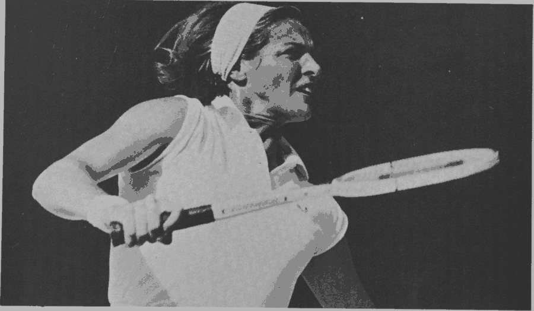
Margaret Court dominates any game by her very presence and great physical strength.
Người chơi khiêu khích làm phiền. Anh ấy không hay nói chuyện cũng không ủ rũ. Anh ta là loại người dành một phút để xì mũi trong khi đối phương đang chờ giao bóng. Anh ta sẽ gọi lỗi giao bóng ở cả hai bên lưới và trong những cuộc gọi này, cũng như những cuộc gọi khác, anh ta thường xuyên sai. Tôi cho rằng phán đoán của anh ta là không chính xác vì đối với tôi, dường như hành vi của anh ta quan tâm đến việc khiêu khích đối thủ hơn là cướp điểm. Người chơi khiêu khích, không giống như người chơi quyến rũ, không phụ thuộc vào một trò chơi bảo thủ. Trò chơi của anh ta thường vượt xa mức tầm thường và do đó sự kết hợp giữa tính khiêu khích và kỹ năng của anh ta có thể là mối đe dọa ở nhiều cấp độ chơi. Thực tế mà nói, thật khó để tự bảo vệ mình trước những hành động khiêu khích, nhưng một người càng học kỹ các kỹ năng quần vợt thì càng có khả năng miễn dịch tốt hơn. Có vẻ như một số người có khả năng miễn dịch tốt hơn những người khác. Nhưng thực tế mà nói, trong khi nhiều người chơi tự hào về khả năng miễn dịch của họ trước sự khiêu khích, thì mọi người lại phản ứng với những hành động khiêu khích và họ càng làm như vậy nhiều hơn khi số tiền đặt cược tăng lên.
Ngược lại với phong cách chơi cạnh tranh, ở phong cách chơi thân thiện, người chơi giảm thiểu sự xao lãng và khuyến khích lẫn nhau bằng sự tham gia nhiệt tình của nhau. Tôi nghĩ các điều kiện xác định của trò chơi giao hữu là mục tiêu của mỗi người chơi phải tương thích với nhau, thay vì xung đột với nhau. Trong trường hợp các cầu thủ đang nỗ lực cải thiện kỹ năng của mình, mỗi cầu thủ đều chơi tốt hơn ngay cả khi đối thủ của anh ta trên sân cũng đang nỗ lực hết mình để giành chiến thắng. Họ khuyến khích lẫn nhau, không phải bằng những bài học mà bằng một sự đồng cảm lẫn nhau. Phong cách thân thiện có lẽ không thường xuyên đạt được tiềm năng của nó. Tuy nhiên, ở mức độ nào đó, điều đó vẫn xảy ra và xét cho cùng thì đó là cơ sở chính để quần vợt coi như một hoàn cảnh của con người.
Tuy nhiên, chủ đề về hành vi cạnh tranh là một chủ đề khó nói hết, chạm đến rất nhiều khía cạnh của tình hình quần vợt. Khi nói về những nguồn sai sót liên quan đến sự tương tác giữa người với người trong quần vợt, tôi đã nhấn mạnh những cách khác nhau mà tình huống quần vợt có thể được tô màu bởi một hoặc một số người tham gia. Do vai trò quan trọng của hành vi cạnh tranh, tôi sẽ phát triển chủ đề này hơn nữa.
Người ta có thể hỏi: “Tại sao hành vi cạnh tranh lại đóng vai trò lớn như vậy trong tâm lý quần vợt?” Tôi nghĩ câu trả lời nằm ở việc đánh giá cao những khía cạnh nổi bật của quần vợt: thứ nhất, đó là một tình huống đòi hỏi việc rèn luyện một năng lực khó và phát triển tốt; thứ hai, năng lực này được thực hiện một cách công khai.
Trong quần vợt, cũng như trong cuộc sống, tất cả các loại năng lực đều có giá trị rất cao và cảm xúc. Yếu tố cảm xúc liên quan có xu hướng biến đổi thực tế năng lực trong một lĩnh vực thành một “năng lực” vượt trội hơn trong mọi việc. Không có gì lạ khi tìm thấy một anh hùng thể thao, chủ tịch ngân hàng hoặc giáo viên được trông đợi để lãnh đạo hoặc hướng dẫn trong những lĩnh vực khác ngoài lĩnh vực của họ. Thành tựu của họ trong một lĩnh vực xác định họ, trong tâm trí công chúng, là một phần của đội ngũ cán bộ “thông minh”. Xu hướng phóng đại tầm quan trọng về mặt cảm xúc của năng lực trong bất kỳ lĩnh vực nào xuất hiện rất nhiều trong quần vợt và khiến việc thắng và thua trở thành một tình huống thú vị đối với nhiều người. Đối với người có ý thức về địa vị, việc chơi quần vợt kém có ý nghĩa rộng lớn hơn, một ý nghĩa càng trở nên mãnh liệt hơn bởi tính chất hoàn toàn công khai của quần vợt.
Chúng ta không quen với việc tiết lộ năng lực của mình trước công chúng. Theo nguyên tắc chung, biểu diễn trước công chúng là một yếu tố bổ sung phải được học cùng với bất kỳ kỹ năng nào có liên quan. Theo nghĩa này, nói trước công chúng được coi là một năng lực khác biệt đáng kể so với nói trong bối cảnh riêng tư hơn. Tương tự như vậy, một người thành thạo trong việc làm những chiếc bánh táo ngon chắc chắn sẽ cảm thấy khá tù túng và không thoải mái nếu người đó được yêu cầu nướng một chiếc bánh trong cửa sổ cửa hàng. Khía cạnh tương tự của bối cảnh công cộng ảnh hưởng đến hành vi của người chơi quần vợt bình thường. Bất cứ ai dễ bị kiêu ngạo hoặc xấu hổ đều gặp khó khăn trong môn quần vợt. Không có nơi nào để trốn. Người chơi bình thường cũng có ý thức về khán đài như người chơi trong giải đấu. Sự tự ý thức này dẫn tới những lỗi kép, những pha đánh đầu đập vào đáy lưới, những cú đánh vô duyên đủ kiểu. Sự tự ý thức này cũng làm cho người cạnh tranh trở nên cạnh tranh hơn, đến mức anh ta sẽ không như vậy nếu hoạt động liên quan là hoạt động riêng tư hơn, chẳng hạn như đọc, viết, vẽ, chế biến gỗ. Trong những hoạt động này, người không bị quan sát có thể thực hành và mắc lỗi ở mức độ cần thiết. Các hoạt động của anh ấy đều riêng tư như anh ấy chọn thực hiện.
Rõ ràng là tay vợt có một biên giới tâm lý dài cần phải bảo vệ. Những kỹ năng chơi quần vợt là những kỹ năng khó có được. Một khi đã đạt được chúng phải được thực hành với sự chú ý không lay chuyển. Tôi đã cố gắng chỉ ra trong chương này rằng sự thiếu chú ý và sai sót là những hiện tượng phức tạp hơn là đơn giản. Nhiều lỗi trong số này có thể tránh được nếu người chơi ý thức hơn về việc chúng xảy ra. Điều này đặc biệt đúng với các lỗi do các cú đánh không nhất quán. Người chơi nên chú ý nhiều hơn khi anh ta đi chệch khỏi trò chơi của mình và anh ta nên bớt vội vàng hơn trong việc hợp lý hóa lợi ích của những sai lệch này. Những lỗi phát sinh do không chú ý được bằng thị giác rất khó xảy ra vì rõ ràng có nhiều thứ cần phải nhìn và chú ý hơn là “sẵn sàng” nó theo từng thời điểm. Các cầu thủ trẻ phải được huấn luyện cách quan sát hành vi của quả bóng khi nó bay hoặc khi nó nảy lên, sau đó, họ, giống như những người quan sát chim được đào tạo, có thể “nhìn thấy” những nơi mà người khác không thể.
Hầu hết tình trạng “nghẹt thở” và “mất tinh thần” đều liên quan đến việc giảm sự chú ý về mặt thị giác. Không phải là mắt bị hỏng mà là phần não chịu trách nhiệm xử lý dữ liệu bị can thiệp. Phần dễ thấy nhất của việc nghẹn ngào và mất tinh thần là những cú vuốt ve cứng ngắc và vụng về. Tuy nhiên, những điều này xuất phát từ việc mất thời gian do thiếu chú ý. Một lần nữa, người chơi càng có thể thuyết phục bản thân rằng hầu hết mọi rắc rối của anh ta đều xuất phát từ việc thiếu chú ý thì anh ta càng có thể phát huy tối đa các kỹ năng chú ý sẵn có của mình và kiềm chế mọi xu hướng thực hiện các chiến thuật thay thế không có thật.
Trong một trận đấu mà những người chơi có trình độ gần như nhau, người chơi khiêu khích hơn sẽ được ưu tiên hơn. Chính hành động đối phó với một đối thủ khiêu khích sẽ khiến người ta mất đi sự chú ý và ghi điểm. Những người lôi kéo có thể tiếp tục và gây ra cảm giác buồn nôn và hiếm khi khiến bản thân mất tập trung. Khi quần vợt trở nên phổ biến hơn và sinh lời nhiều hơn, sẽ có nhiều người như vậy bị lôi cuốn vào môn thể thao này. Nếu luật chơi không được củng cố liên quan đến hành vi khiêu khích, chức vô địch sẽ ngày càng rơi vào tay những kẻ khiêu khích thành công hơn.
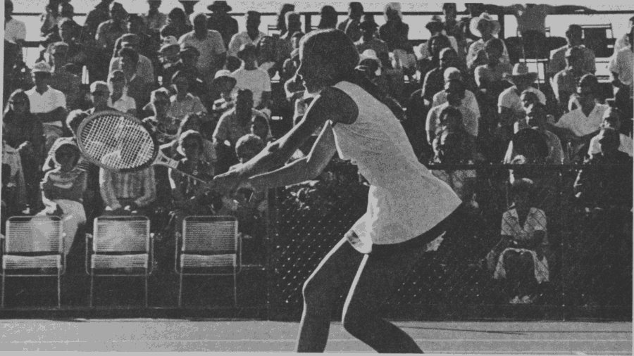
Chris Evert: Steady strokes and nerves of steel are her winning ingredients despite a somewhat defensive game.
Chương 10
Quần Vợt Năng Động Qua Thư Giãn
Richard Lazere, Ph.D. — Chuyên viên Tâm lý, Trung tâm Dịch vụ Thanh thiếu niên và Gia đình C. V. Morrison, Portland, Oregon
Quần vợt đã trở nên phổ biến bùng nổ trong vài năm qua và ngày nay nó trở thành một trong những môn thể thao được tham gia nhiều nhất ở Mỹ. Các sân tennis mọc lên như nấm ở nhiều thôn, thành phố trên khắp cả nước tạo điều kiện dễ dàng tiếp cận môn thể thao tăng cường sinh lực tuyệt vời này. Các cửa hàng bách hóa báo cáo doanh số bán thiết bị chơi quần vợt ngày càng tăng đã đạt đến mức không thể tưởng tượng nổi cách đây vài năm. Nói tóm lại, thời kỳ bùng nổ quần vợt đang diễn ra và Hoa Kỳ đang nhanh chóng trở thành quốc gia của quần vợt và các vận động viên quần vợt.
Hầu hết chúng ta khi tham gia một môn thể thao mới đều mong đợi rằng ban đầu, thành tích sẽ khó khăn và thất thường với kỳ vọng rằng nhờ luyện tập và hướng dẫn, trò chơi của chúng ta sẽ dần dần được cải thiện. Trò chơi quần vợt, giống như bất kỳ trò chơi mới nào khác, có thể là một trải nghiệm vô cùng khó chịu đối với người mới chơi. Những cú đánh trượt hoặc những cú đánh chệch hướng thường khiến chúng ta lẩm bẩm, la hét, chửi thề hoặc tấn công trang bị của mình. Những người có thể chịu đựng được những khó khăn ban đầu này nhận thấy rằng nhờ luyện tập và huấn luyện, những sai lầm này ngày càng ít đi. Có một loại cảm giác thỏa mãn thực sự và rất đặc biệt đến từ một cú vô lê mạnh mẽ và liên tục trên sân quần vợt. Chinh phục môn quần vợt quả thực là một chiến thắng ngọt ngào. Tuy nhiên, sẽ có một thời điểm, trong trò chơi của mọi người, khi sự cải thiện dường như không thay đổi và khó đạt được sự cải thiện hơn nữa. Chúng ta cảm thấy bị cản trở và thất vọng vì không thể tiến về phía trước khi có thêm kinh nghiệm và thực hành. Chúng ta có thể trải nghiệm lại cảm giác đau khổ và ghê tởm mà chúng ta cảm thấy khi còn là người mới khi màn trình diễn của chúng ta không đạt được mong muốn. Sự cản trở vô hình, rào cản thực tế nhưng vô hình này đến từ đâu? Một cái nhìn tâm lý về trò chơi quần vợt sẽ giúp chúng ta hiểu được phần nào về nguồn gốc của rào cản này.
Một cái nhìn tâm lý về trò chơi quần vợt
Từ thời xa xưa, đàn ông đã tham gia vào các cuộc thi thể thao, đọ sức với một hoặc nhiều người đàn ông khác trong cuộc cạnh tranh. Động lực cho các cuộc thi thể thao có rất nhiều, bao gồm cảm giác hồi hộp khi thi đấu, cảm giác hài lòng khi chiến thắng, cơ thể khỏe mạnh, được công nhận chiến thắng và hàng loạt phần thưởng khác. Sự phấn khích khi thi đấu và thi đấu với một người khác chắc chắn là một trong những niềm vui của trò chơi quần vợt. Loại hoạt động thể thao được đại diện bởi quần vợt liên quan đến một số thay đổi thể chất rất đặc biệt trong cơ thể, là một phần trong quá trình chuẩn bị của cơ thể để đối phó với căng thẳng và thử thách. Chính những thay đổi về thể chất này xảy ra liên quan đến trò chơi quần vợt có thể nâng cao hoặc làm giảm chất lượng trò chơi của chúng ta. Khi chúng ta tham gia vào các hoạt động cạnh tranh thể chất, những thay đổi về mặt hóa học sẽ giúp cơ thể chúng ta giải quyết những yêu cầu ngày càng tăng mà chúng ta đặt ra cho chúng. Ngoài những thay đổi về thể chất mà quần vợt liên quan, còn có những thay đổi về cảm xúc liên quan đến mong muốn giành chiến thắng và/hoặc thể hiện tốt của chúng ta. Cả những thay đổi về thể chất và cảm xúc này đều dẫn đến cảm giác của chúng ta là “hăng hái” hoặc “hết sức” hoặc “hưng phấn” với trò chơi. Nói chung, chúng ta có thể coi những thay đổi diễn ra liên quan đến việc tăng cường kích thích cơ thể, điều này thường giúp chúng ta hoạt động tốt hơn dưới áp lực về thể chất và tinh thần khi thi đấu thể thao. Nhiều người trong chúng ta có thể đạt được mức tăng vừa đủ về trạng thái hưng phấn của cơ thể để thể chất và tinh thần hoạt động tốt hơn khi chơi một môn thể thao như quần vợt. Tuy nhiên, bạn có thể bị kích động, hưng phấn và phấn khích quá mức đến mức bắt đầu ảnh hưởng đến trận đấu quần vợt của bạn. Nói tóm lại, có một mức độ hưng phấn hoặc phấn khích tối ưu hoặc tốt nhất nhất định liên quan đến bất kỳ trận đấu quần vợt hay nào. Điều gì sẽ xảy ra khi bạn phấn khích hoặc phấn chấn vượt quá điểm tối ưu hoặc tốt nhất này? Chúng tôi biết từ các nghiên cứu trên động vật và con người rằng việc thực hiện một nhiệm vụ phức tạp như chơi quần vợt có thể trở nên thất thường và vô tổ chức khi xảy ra mức độ kích thích quá cao. Nói cách khác, nếu bạn trở nên quá phấn khích, căng thẳng và căng thẳng, trò chơi của bạn sẽ bị ảnh hưởng. Quá hưng phấn do căng thẳng và căng thẳng rõ ràng là một trong những yếu tố phổ biến nhất liên quan đến việc cản trở khả năng chơi quần vợt tốt nhất có thể của chúng ta. Chính sự căng thẳng và áp lực phát sinh từ sự phấn khích quá mức này đã tạo thành rào cản vô hình cho việc cải thiện môn quần vợt mà tôi đã đề cập trước đây.
Thư giãn theo cách của bạn để chơi quần vợt tốt hơn
Trở nên quá căng thẳng và lo lắng trên sân tennis có thể được ví như một thói quen xấu mà chúng ta muốn thay đổi. Khi chúng ta trở nên căng thẳng và căng thẳng, thông qua quá trình liên kết, căng thẳng có thể trở thành một phản ứng có thể học được khi bước lên sân tennis và bắt đầu trận đấu. Sự liên kết này lặp đi lặp lại nhiều lần sẽ trở thành một thói quen giống như bất kỳ thói quen nào khác và sẽ khó thay đổi nếu nó được lặp đi lặp lại nhiều lần. Bất cứ ai đã cố gắng giảm hoặc bỏ hút thuốc lá đều biết khá rõ sự đau đớn của việc sửa đổi thói quen. Khi đó, rõ ràng là chúng ta có thể học cách trở nên căng thẳng và lo lắng trong một số tình huống nhất định và sự căng thẳng nghiêng về này có thể là một yếu tố gây gián đoạn kinh niên trong nỗ lực đạt được thành tích tốt hơn trên sân quần vợt của chúng ta. Câu trả lời cho vấn đề căng thẳng trong quần vợt đã học được này là gì? Câu trả lời là hãy học cách thư giãn. Nếu chúng ta có thể học cách căng thẳng thì chúng ta cũng có thể học cách thư giãn. Giúp mọi người học cách thư giãn là một phần công việc hàng ngày của nhà tâm lý học. Chúng tôi đã tìm hiểu về một số cách giúp mọi người thư giãn có thể áp dụng cụ thể cho trò chơi quần vợt. Mặc dù có vẻ như là một bước nhảy vọt từ ghế của nhà trị liệu tâm lý đến sân tennis, nhưng thực tế có rất nhiều điều mà người chơi tennis có thể học được từ hình thức rèn luyện thư giãn diễn ra trong văn phòng của tôi. Kỹ năng thư giãn, giống như chơi quần vợt, là thứ được cải thiện nhờ luyện tập. Giống như hầu hết các kỹ năng, những nguyên tắc cơ bản cơ bản rất dễ được dạy, trong khi khả năng thành thạo thực sự phụ thuộc vào việc luyện tập và lặp lại. Để nắm vững nghệ thuật thư giãn sẽ đòi hỏi phải nỗ lực và nỗ lực, nhưng nỗ lực đó sẽ được đền đáp gấp nhiều lần. Khi quả bóng tennis đó bắt đầu hoạt động ngày càng giống như bạn dự định, bạn sẽ cảm thấy rằng nỗ lực bạn bỏ ra trong việc học cách thư giãn đã thực sự khiến trận đấu quần vợt của bạn trở nên năng động hơn.
Học cách thư giãn
Một trong những thành phần cơ bản của tình trạng căng thẳng mãn tính là sự siết chặt cơ xương. Khi cơ thể chúng ta căng thẳng, thực ra chúng ta đang ép và co cứng các cơ lại với nhau theo cách có những tác động nhất định. Một trong những ảnh hưởng của việc chuột rút liên tục này là đau nhức. Cơ bị căng thường là cơ sẽ bắt đầu đau. Những cơn đau nhức làm chúng ta mất tập trung và phá vỡ sự tập trung. Cơ bắp bị chuột rút dễ bị tổn thương hơn cơ bắp lỏng lẻo. Do đó, học cách thư giãn có thể là một biện pháp bảo vệ cơ thể. Cơ bắp bị chuột rút, căng cứng thường làm giảm lượng máu cung cấp đến các chi (tay và chân), dẫn đến tê và ngứa ran làm giảm khả năng hoạt động tốt như mong muốn. Những tác động không mong muốn này thường xuyên đến với chúng ta - chúng ta trở nên căng thẳng mà không nhận thức được sự căng thẳng của mình. Một trong những bí quyết của việc rèn luyện thư giãn là học cách đánh giá cao sự khác biệt giữa thư giãn cơ thể và căng thẳng. Quá trình này được các nhà tâm lý học gọi là đào tạo khả năng phân biệt hoặc có thể tìm hiểu sự khác biệt giữa hai trạng thái (trong trường hợp này là căng thẳng và thư giãn). Khả năng tuyệt vời của con người trong việc học cách phân biệt rõ ràng giữa các vật thể hoặc trạng thái rất giống nhau đã được tôi hiểu rõ một cách sống động nhờ kinh nghiệm cá nhân khi làm công việc bán thời gian nhiều năm trước. Vào năm cuối đại học, tôi bị bệnh viêm phổi và buộc phải nghỉ học vì không thể theo kịp việc học. Sau khi hồi phục, tôi kiếm được việc làm ở Hudson's Bay Fur Co. với tư cách là trợ lý phân loại lông thú, để tôi có thể tiết kiệm một số tiền cho học kỳ thứ hai ở trường. Ngày đầu tiên làm trợ lý cho một người phân loại lông thú có kinh nghiệm thực sự là một ngày khó khăn. Ngoài sự bối rối thông thường liên quan đến việc bắt đầu bất kỳ công việc mới nào, còn có một yếu tố bổ sung là tôi phát hiện ra rằng sự phân biệt tinh tế về cấp lớp và màu da mà người hướng dẫn của tôi đưa ra đã bị mất đi trong con mắt chưa được học hành của tôi. Đối với tôi tất cả lông thú đều giống nhau! Dần dần, với sự hướng dẫn kiên nhẫn, tôi đã có thể phân biệt ngày càng tinh tế hơn để khi nghỉ việc, tôi có thể phân loại lông thú trong một hệ thống phân loại phức tạp với độ chính xác khá cao. Quá trình học tập tương tự diễn ra khi bạn học cách thư giãn. Với thực hành nó trở nên dễ dàng hơn và dễ dàng hơn.
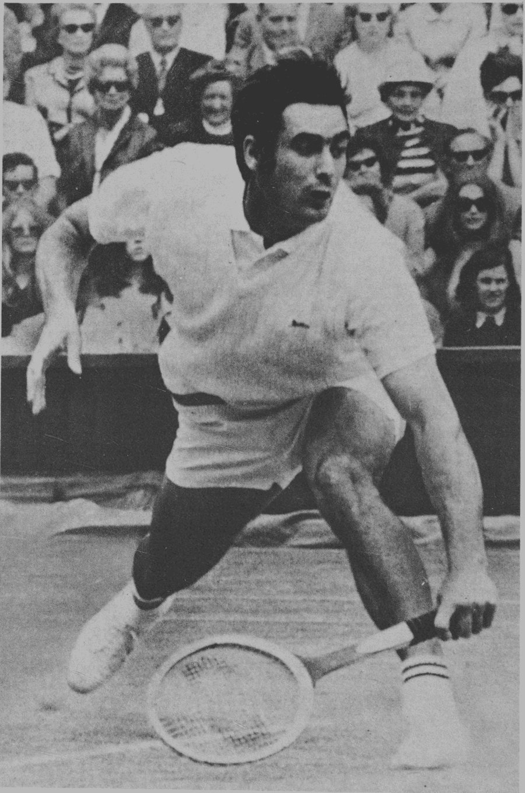
Roger Taylor is a perfect example of a tennis player who has used courage to pull himself to the top of the tennis ladder. His backhand is stronger than his forehand.
Bắt đầu
Thành phần đầu tiên của một chương trình rèn luyện thư giãn là sự cam kết thực sự với chương trình. Bạn phải tự hứa với mình rằng bạn sẽ luyện tập thường xuyên cho đến khi thành thạo kỹ năng thư giãn hiệu quả. Sau khi bạn đã tự hứa với mình rằng bạn sẽ thực hiện công việc và làm đúng, bạn có thể nghĩ đến việc chuyển sang cơ chế thực tế của chương trình.
Nếu theo dõi chương trình này, bạn sẽ học theo các quy trình có trật tự, có hệ thống và đã được kiểm nghiệm một cách khoa học, cả kỹ thuật thư giãn và kiểm soát căng thẳng. Những kỹ thuật này không chỉ giúp bạn chơi tennis tốt hơn mà còn hữu ích trong các lĩnh vực khác của cuộc sống. Nhiều người cho biết rằng khi học cách thư giãn, họ có thể ngủ ngon hơn và có nhiều năng lượng hơn vào ban ngày. Họ thấy dễ dàng hơn để tập trung vào học tập, công việc và bất kỳ nhiệm vụ nào cần thực hiện. Sự hao mòn cơ thể sẽ giảm đi khi bạn học cách thư giãn, vì sự căng thẳng và lo lắng ảnh hưởng đến cơ thể chúng ta. Bạn thậm chí có thể trở nên dễ dàng chung sống hơn khi bạn trở nên thoải mái hơn và chắc chắn trò chơi quần vợt của bạn sẽ cải thiện nếu bạn tiếp cận nó một cách bình tĩnh, thoải mái. Hãy nhớ rằng, bạn đang học một kỹ năng mới và không thể mong đợi thành thạo nó trong một hoặc hai lần đầu tiên bạn thử nó. Hãy nghĩ xem bạn đã phải tập luyện cú giao bóng của mình bao nhiêu lần trước khi nó trở nên trôi chảy. Cố gắng đừng buồn nếu một số thời gian thực hành có vẻ kém hiệu quả hơn những thời gian khác. Những thăng trầm có thể xảy ra bất cứ khi nào bạn học một kỹ năng mới). Tuy nhiên, hãy nhớ rằng bạn đang học một kỹ năng sống và thời gian cũng như công sức bạn bỏ ra sẽ rất xứng đáng với thời gian và sức lực của bạn.
Bước số một liên quan đến việc tìm kiếm sự thoải mái; nơi yên tĩnh để tập luyện. Bạn sẽ cần tìm một nơi không bị phân tâm, đây có thể là một nhiệm vụ quan trọng đối với bất kỳ ai có vợ/chồng, con cái và thú cưng chạy lung tung quanh nhà. Dù thế nào đi nữa, bạn nên cố gắng hết sức để tìm một vị trí thoải mái, yên tĩnh, thông thoáng mà bạn có thể gọi là của riêng mình ít nhất một khoảng thời gian ngắn trong ngày. Bạn sẽ thấy rằng chương trình của mình sẽ thành công nhất nếu bạn đặt mình vào một lịch trình đều đặn và kiên trì tuân thủ nó.
Hướng dẫn chung
Chương trình thư giãn này sẽ bao gồm bảy bài học dạy chúng ta cách thư giãn các nhóm cơ chính trong cơ thể. Nhiệm vụ cơ bản mỗi ngày sẽ là thư giãn và co một số cơ nhất định để tìm hiểu sự khác biệt giữa căng và thư giãn ở các nhóm cơ khác nhau. Mỗi buổi tập sẽ bắt đầu với năm phút nghỉ ngơi ở tư thế cơ bản. Để đảm nhận vị trí cơ bản, trước tiên hãy đặt hai chân phẳng trên sàn cách nhau khoảng 6 inch. Đặt cẳng tay của bạn một cách thoải mái trên tay ghế và để đầu bạn thoải mái ngả về phía trước. Nhắm mắt dần dần và giữ nguyên nhắm trừ khi bạn cần xem qua hướng dẫn thư giãn của mình. Dành khoảng ba mươi đến bốn mươi lăm phút cho các buổi thực hành của bạn. Đừng cố xem đồng hồ mà hãy nhờ ai đó gọi cho bạn khi bạn hết giờ. Hãy thử một bài học mỗi ngày cho đến khi bạn thành thạo cả bảy bài học.
Bài học đầu tiên: Nhóm cơ cẳng tay
Đặt các hướng dẫn trước mặt bạn trên bàn hoặc ghế để bạn có thể xem qua khi cần thiết. Đầu tiên hãy đặt mình vào tư thế cơ bản và thư giãn trong năm phút.
Đặt cẳng tay lên tay ghế và lòng bàn tay hướng lên, uốn cong cổ tay, các ngón tay duỗi thẳng sao cho chúng hướng vào bạn. Giữ tay của bạn ở vị trí này trong ba mươi giây. Bạn sẽ cảm thấy căng ở phần trên, phần ngoài và phần sau của cẳng tay. Hãy cố gắng ghi nhận cảm giác này và ghi nhớ nó. Bây giờ hãy để tay bạn buông thõng, mềm nhũn và thả lỏng, và tiếp tục thư giãn trong khoảng hai hoặc ba phút. Lưu ý cảm giác thư giãn cẳng tay của bạn. Lặp lại động tác uốn cong của bàn tay. Một lần nữa hãy ghi nhận cảm giác căng thẳng. Thư giãn bàn tay của bạn và tiếp tục thư giãn trong vài phút.
Tiếp theo, xoay cánh tay của bạn sang hai bên và uốn cong bàn tay vào trong về phía bạn. Quan sát sức căng tập trung ở các cơ lớn ở mặt trong của cả hai cánh tay. Hãy thư giãn và để tay bạn buông thõng. Chú ý cảm giác căng thẳng biến mất như thế nào. Sau khi thư giãn vài phút, lặp lại bài tập. Hãy cố gắng trở nên hoàn toàn thư giãn và ngồi trong trạng thái thư giãn trong mười lăm hoặc hai mươi phút.
Bài học thứ hai: Cánh tay dưới và cánh tay trên là một đơn vị
Một lần nữa đặt mình vào tư thế cơ bản và thư giãn trong năm phút trước khi bắt đầu bất kỳ bài tập cụ thể nào. Hãy bắt đầu với cánh tay trái trước. Giữ cánh tay của bạn ở vị trí cơ bản, căng toàn bộ cánh tay và cuộn các ngón tay thành nắm đấm thật chặt. Làm cho cánh tay cứng đờ và quan sát độ căng khắp toàn bộ cánh tay. Dần dần thả lỏng cánh tay cho đến khi bạn cảm thấy sự căng thẳng tan biến. Thư giãn cánh tay trong vài phút. Lặp lại bài tập này bây giờ ở cả hai tay, siết chặt nắm tay cho đến khi bạn có thể cảm thấy căng ở cả hai tay. Từ từ giảm căng thẳng và cố gắng quan sát cẩn thận cảm giác của quá trình thư giãn. Thư giãn cả hai tay trong vài phút. Cố gắng làm cho mình hoàn toàn thư giãn trong mười lăm hoặc hai mươi phút.
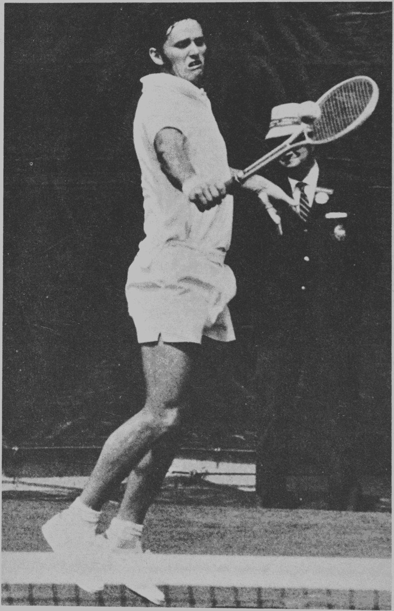
Roy Emerson, once the great Australian singles champion, has used guile and experience to become one of the great doubles players of all time.
Bài học thứ ba: Hạ chân
Trong bài học này, chúng ta học cách xác định cảm giác căng và thư giãn ở chân. Bắt đầu ở tư thế cơ bản như mọi khi và thư giãn trong năm phút. Từ từ uốn cong bàn chân ở mắt cá chân về phía bạn càng xa càng tốt. Cảm thấy căng thẳng và căng thẳng. Thư giãn mắt cá chân, đặt chân xuống sàn và chú ý đến cảm giác thư giãn ở bộ phận này trên cơ thể. Lặp lại bài tập và thư giãn trong năm phút.
Tiếp theo chúng ta sẽ tìm hiểu về sự căng thẳng và thư giãn ở cơ bắp chân. Nâng gót chân lên khỏi sàn, đồng thời giữ các ngón chân vững chắc trên mặt đất. Nghiên cứu cảm giác căng và căng ở cơ bắp chân của bạn. Thư giãn bắp chân bằng cách hạ gót chân xuống sàn. Chú ý cảm giác thư giãn ở cơ bắp chân. Nâng gót chân lên một lần nữa và kiểm tra độ căng, đồng thời thư giãn bắp chân bằng cách thả gót chân xuống sàn một lần nữa. Thư giãn trong mười lăm đến hai mươi phút.
Bài 4: Chân trên và đùi
Bài học này chủ yếu nghiên cứu về độ căng ở cơ đùi. Đầu tiên đảm nhận vị trí cơ bản. Thư giãn ở vị trí này trong năm phút. Duỗi thẳng cả hai chân ra phía trước, nhấc chân lên khỏi sàn khi hai chân duỗi thẳng ở đầu gối. Giữ hai chân thẳng trước mặt trong vài giây và chú ý đến độ căng ở phần trên của cả hai đùi. Thư giãn, thả lỏng cả hai chân xuống sàn. Lưu ý cảm giác thư giãn ở cơ đùi. Một lần nữa, duỗi thẳng chân về phía trước trong vài giây và quan sát độ căng của cơ đùi. Một lần nữa, thả lỏng chân từ từ xuống sàn và quan sát cảm giác thư giãn ở phần trên của chân. Thư giãn trong năm phút.
Tiếp theo chúng ta sẽ nghiên cứu sức căng của các cơ lớn bên dưới xương đùi. Cong cả hai chân về phía sau ở đầu gối, kéo cả hai chân về phía ghế. Giữ hai chân ở tư thế này trong vài giây và ghi nhận sự căng của các cơ ở phần lưng dưới của đùi. Đưa chân về vị trí ban đầu, thư giãn và ghi nhận sự khác biệt giữa căng và giãn ở cơ đùi. Một lần nữa, uốn cong hai chân về phía ghế và xác định cảm giác căng như trước. Đưa chân về vị trí ban đầu và ghi nhận cảm giác nhẹ nhõm và thư giãn mà bạn cảm thấy ở cơ đùi. Thư giãn hoàn toàn trong mười lăm đến hai mươi phút.
Bài thứ năm: Thân trên (Thân)
Bài học này liên quan đến việc dạy bạn phân biệt sự khác biệt giữa căng thẳng và thư giãn ở phần trên của cơ thể. Đầu tiên đảm nhận vị trí cơ bản và thư giãn trong năm phút ở vị trí này. Tiếp theo, kéo cơ bụng vào và siết chặt chúng cho đến khi bạn cảm thấy căng khắp thành bụng. Thư giãn cơ bụng và ghi nhận cảm giác thư giãn ở vùng này. Một lần nữa hãy siết chặt cơ bụng và cố gắng nhớ lại cảm giác căng thẳng của bạn như thế nào. Hãy thư giãn từ từ và cảm nhận sự thư giãn đang lan tỏa khắp khu vực này. Thư giãn trong năm phút. Tiếp theo, từ từ cong lưng cho đến khi bạn bắt đầu cảm thấy căng ở cơ lưng. Thư giãn từ từ cho đến khi cảm giác căng thẳng biến mất ở vùng lưng dưới. Cong lưng lại một lần nữa cho đến khi nó căng và cứng. Thư giãn hoàn toàn và quan sát cảm giác thư giãn và không bị căng thẳng ở khu vực này như thế nào. Thư giãn hoàn toàn trong mười lăm đến hai mươi phút.
Bài học thứ sáu: Hơi thở và cơ vai
Bài học thứ sáu này liên quan đến các cơ mà chúng ta sử dụng để thở và cơ vai. Đầu tiên đảm nhận vị trí cơ bản và thư giãn trong năm phút ở vị trí này. Hít một hơi thật sâu, nín thở và ghi nhận cảm giác căng thẳng ở vùng ngực. Xác định vị trí nơi cảm thấy căng thẳng. Thở ra bình thường và thư giãn - vùng ngực của bạn. Hãy hít một hơi thật sâu và ghi nhận trong tâm nơi tập trung căng thẳng. Thở ra và thư giãn các cơ ngực đó cho đến khi hết dấu vết căng thẳng. Thư giãn trong vài phút. Để nghiên cứu độ căng của cơ vai, trước tiên chúng ta phải kéo xương bả vai thẳng về phía sau như thể chúng ta đang cố gắng làm cho chúng gặp nhau ở phía sau lưng. Bạn sẽ cảm thấy căng và căng ở vùng cột sống giữa hai bả vai. Bây giờ hãy thư giãn và ghi nhận cảm giác thư giãn ở khu vực này. Lặp lại bài tập này cho đến khi bạn cảm thấy chút căng thẳng đầu tiên ở giữa lưng. Hãy thư giãn và cảm nhận sự căng thẳng tan biến. Thư giãn trong năm phút.
Cuối cùng, nhún vai và siết chặt chúng. Bạn sẽ cảm thấy căng ở đỉnh vai. Thư giãn vai và nghiên cứu cảm giác thư giãn lan truyền trên cơ vai. Hãy nhún vai lại và đặc biệt chú ý đến cảm giác căng thẳng khi bạn làm cho các cơ ngày càng căng hơn. Bây giờ hãy thư giãn vai và một lần nữa chú ý đến cảm giác thư giãn khi vai trở nên lỏng lẻo và thư giãn. Thư giãn trong mười lăm đến hai mươi phút.
Bài học thứ bảy: Vùng da mặt
Giữ tư thế cơ bản và thư giãn trong năm phút. Hãy nhăn trán và ghi nhận cảm giác đó rồi nhăn lại nhiều hơn. Hãy thư giãn và quan sát cảm giác khi trán bạn trở nên mịn màng và thư giãn. Tiếp theo, cau mày và nhíu chặt lông mày của bạn. Hãy thư giãn và một lần nữa ghi nhận cảm giác vuốt phẳng trán khi bạn thư giãn. Nhắm mắt lại và giữ chúng ngày càng chặt hơn trong khi nghiên cứu cảm giác căng thẳng khi bạn nhắm mắt lại. Hãy thư giãn và vẫn nhắm mắt, ghi nhận cảm giác thư giãn ở khu vực này như thế nào. Siết chặt hai hàm lại với nhau và cảm nhận sự căng thẳng ở cơ hàm. Thư giãn hàm của bạn và giữ thư giãn trong vài phút. Bên cạnh vùng cổ. Ngả đầu về phía sau hết mức có thể và cảm nhận sự căng thẳng ở phía sau cổ. Xoay đầu sang phải và cảm nhận sự căng thẳng ở bên trái cổ. Xoay đầu sang trái và cảm nhận sự căng thẳng ở bên phải cổ. Thư giãn hoàn toàn trong mười lăm đến hai mươi phút.
Thư giãn trên sân tennis
Sau khi bạn đã làm việc chăm chỉ để thành thạo kỹ thuật thư giãn, bạn nên bắt đầu cố gắng phát huy kỹ năng mới của mình | cho bạn trên sân tennis. Không có kỹ năng hay kiến thức nào có giá trị trừ khi bạn sử dụng nó và sử dụng nó đúng cách. Khi bạn ngày càng tiến gần hơn đến việc bước lên sân tennis, hãy cố gắng khiến bản thân ngày càng thoải mái hơn. Hãy hít thở sâu và bắt đầu kiểm tra lại sự căng thẳng và thư giãn của cơ thể. Với một chút nỗ lực, giờ đây bạn có thể phát hiện ra những điểm gây căng thẳng trên cơ thể mình. Hãy cố gắng thư giãn những vùng này như bạn đã làm rất nhiều lần trong các buổi tập ở nhà. Bạn sẽ sớm nhận ra rằng việc kiểm tra cơ thể về tình trạng căng thẳng và thư giãn các điểm rắc rối do căng thẳng sẽ trở thành một thói quen vô thức và tự động khi nó được lặp đi lặp lại nhiều lần. Bạn sẽ sớm thấy mình đối mặt với đối thủ trong trạng thái thoải mái, bình tĩnh, điều này sẽ cộng thêm điểm cho trò chơi của bạn.
Hãy thử những kỹ thuật này; Tôi biết họ sẽ làm việc.
Chương 11
Vì Sao Bạn Muốn Thắng
Bernard Mackler, Ph.D. — Trường Hunter, Đại học Thành phố New York, New York
Quần vợt, giống như cuộc sống, là do bạn tạo nên. Bạn có thể chơi quần vợt để giải trí, để tập thể dục, để thư giãn, để thi đấu, để tiêu diệt. Đối với một số người, đó là một trò chơi; đối với những người khác, đó là cuộc sống của họ.
Khi lần đầu tiên tôi xem một trận đấu quần vợt, tôi nghĩ chỉ có người giàu mới chơi. Rồi ở tuổi 19, tại một trại hè, tôi đã thử sức mình. Mặc dù khó quên được nỗi thất vọng ngày hôm đó nhưng cuối cùng tôi vẫn chơi thêm hai lần nữa vào mùa hè năm đó. Bóng rổ, môn thể thao mà tôi đã lớn lên, vẫn là môn thể thao chính của tôi. Tôi cảm thấy (hợp lý hóa) rằng quần vợt thật ẻo lả. Bóng rổ là trò chơi của đàn ông, một cuộc chiến quyền lực với sự tinh tế. Quần vợt quá nhẹ nhàng.
Ba năm sau, tôi mua một cây vợt và cố gắng tự học bằng cách đánh bóng vào tường. Tôi cũng đã chơi một vài trò chơi với bạn bè. Cuộc sống của tôi với quần vợt chỉ thay đổi một chút trong thập kỷ tiếp theo. Thỉnh thoảng tôi chơi với bạn bè và đồng nghiệp. Đánh đôi có nghĩa là một trò chơi xã hội hoàn toàn trong đó bạn di chuyển từ bên này sang bên kia và không tập thể dục nhiều. Bạn cũng không biết chuyện gì đang xảy ra. Đôi nam nữ có nghĩa là tập thể dục ít hơn. Người duy nhất thường xuyên chơi quần vợt với tôi là vợ tôi. Chủ yếu là chúng tôi đánh thuận tay. Những cú trái tay của chúng tôi gần như là phương sách cuối cùng. Việc phục vụ chỉ được thực hiện một lần trong một thời gian. Chúng tôi chạy rất nhiều và rất thích chạm bóng. Sự phấn khích đến khi chúng tôi có thể bắn được năm phát súng trở lên liên tiếp. Chiến thắng!
Khoảng năm năm trước, vợ tôi quyết định chơi quần vợt. Mỗi sáng vào lúc 7 giờ, cô bé sẽ chơi với một người bạn. Khi tôi về nhà vào buổi tối, tôi cũng tập luyện với cô ấy. Trò chơi của chúng tôi bắt đầu được cải thiện. Chúng tôi thậm chí còn học cách đánh trái tay và giao bóng. Tôi đã sẵn sàng cai sữa. Vâng, tôi sắp chơi quần vợt với đàn ông, một trận đấu quan trọng.
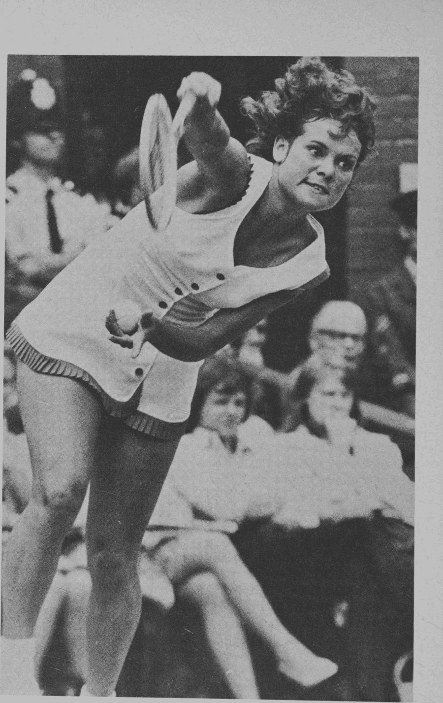
Evonne Goolagong: An ability to win when behind partly compensates for her many lapses in concentration.
Lúc đầu tôi nghĩ quần vợt là một trò chơi, một môn thể thao. Tôi cho rằng bạn chơi để có một khoảng thời gian vui vẻ. Chẳng bao lâu sau, tôi nhận ra rằng đàn ông, bao gồm cả tôi, đã mang theo nhiều nhu cầu của họ đến tòa án. Một số người đàn ông đã chờ đợi cả tuần để trút bỏ nỗi thất vọng. Trận đấu quần vợt cuối tuần là ngày nổi bật của họ. Nếu suốt cả tuần chúng bị lãng quên hoặc không quan trọng thì ít nhất đây là bằng chứng về sức mạnh của chúng. Trận đấu diễn ra theo tỷ lệ giống như đấu sĩ - chiến thắng và sống sót đồng nghĩa với nhau.
Đàn ông (và phụ nữ) không chỉ muốn chiến thắng mà như Vince Lombardi đã nói, “Chiến thắng là tất cả”. Một số đàn ông chọn cách giành chiến thắng bằng cách trung thực nhất - làm việc chăm chỉ và không vô nghĩa. Đó là một cuộc chặt đầu nghiêm trọng và chết người của kẻ thù. Mọi vũ khí tấn công đều được sử dụng - giao bóng mạnh, giao bóng trên lưới, đánh đầu, lốp bóng, vô lê, trái tay, v.v. Áp lực là không ngừng. Mục tiêu của họ là giành chiến thắng 6-0. Nếu hai cầu thủ như vậy thi đấu thì đó là một trận đấu thú vị nhưng thiếu hài hước. Những kẻ thách thức nổi lên để truất ngôi nhà vua (người chơi hàng đầu). Một tay vợt kém hơn sẽ thi đấu, và nếu anh ta thua, anh ta luôn đổ lỗi cho trận thua đó là một ngày tồi tệ, hoặc rằng anh ta đã làm việc chăm chỉ cả tuần và kiệt sức.
Machismo luôn hiện diện và những người yêu thích quần vợt không bao giờ có thể thư giãn. Một số người chơi luôn tìm cách giành chiến thắng và không dám thách đấu những người chơi giỏi hơn mà chỉ thách đấu những người yếu hơn. Ở đây chiến thắng là điều chắc chắn và các trò chơi thực sự là một phương tiện để đạt được cảm giác trở thành kẻ chinh phục.
Một số người chơi không phải lúc nào cũng chiến thắng; đối với họ cách họ chơi rất quan trọng. Những cú đánh phải đánh mạnh và vào những điểm dễ bị tổn thương của đối thủ. Cây vợt được sử dụng làm vũ khí. Một cú sút tốt còn đáng nhớ hơn tỷ số cuối cùng. Sự hung hãn sẽ có quy mô đáng sợ và đe dọa những người chơi yếu hơn hoặc ít hung hãn hơn. Mặc dù hầu hết những người chơi hung hãn đều sử dụng vợt nhưng một số lại sử dụng miệng. Họ sẽ cố gắng “làm mất tinh thần” hoặc gieo rắc nỗi sợ hãi bằng những gì họ nói hoặc bằng những động tác hung hãn nhanh chóng trên lưới.
Mô típ chiến thắng và thành tích kiểu Mỹ này có thể được nhìn thấy trên bất kỳ sân tennis nào. Người chiến thắng cảm thấy tự hào về thành tích của họ. Nhưng tại sao chúng ta cần phải chiến thắng để cảm thấy dễ chịu? Và nếu chúng ta cần điều này để cảm thấy tốt nhất, điều gì sẽ xảy ra khi chúng ta thua cuộc?
Chúng ta không còn cần phải chiến thắng để tồn tại. Người ta có thể sống mà không luôn khao khát trở thành người chiến thắng. Đây có phải là di sản thể chế của chúng ta về tính hung hăng? Tôi tự hỏi.
Tôi ngạc nhiên khi thấy tính cách thay đổi như thế nào trên sân quần vợt. Những người nhu mì và rút lui có thể không chỉ trở nên hung hãn và thù địch mà còn xấu xí nữa. Nhiều người đảm nhận những công việc rất có trách nhiệm trong tuần: luật sư, giáo viên, bác sĩ, nhân viên bán hàng, nhà tâm lý học, v.v. Điều gì sẽ xảy ra nếu họ không giải phóng sự hung hăng của mình? Điều gì sẽ xảy ra nếu họ thua vào Chủ nhật và mang theo nhiều nỗi thất vọng hơn khi phải làm việc vào thứ Hai? Họ có trút cơn giận của mình lên người khác không? Có phải họ chỉ có khả năng tử tế, hữu ích và thoải mái nếu giành chiến thắng?
Có những người chơi gian lận. Có những người khác nhìn thấy một cảnh quay và sau đó phải đợi trước khi họ gọi nó. Nhu cầu chiến thắng đi vào nhận thức và tư duy. Những gì người ta nhìn thấy đều nhuốm màu nhu cầu chiến thắng. Đối với những người khác, việc tạm dừng lâu trước khi thực hiện cú đánh đòi hỏi phải suy nghĩ xem nên gọi là gì. Quá trình suy nghĩ phức tạp không chỉ dừng lại ở việc quyết định bắn ngay khi nó diễn ra. Người chơi nghĩ về trò chơi, người chơi kia là người như thế nào, nhịp độ của trò chơi, điều gì là đúng đắn về mặt đạo đức.
Nếu chiến thắng là tất cả thì thất bại chẳng là gì cả. Ở đây chúng ta thấy người chơi phải học cách chơi thể thao giỏi như thế nào. Một số hợp lý hóa những trận thua của họ, những người khác ghét bản thân, vợt của họ, điều kiện chơi, gió, thời gian trong ngày, tiếng ồn, ánh nắng, không ngủ đủ giấc vào đêm hôm trước, v.v. Rất ít người trong chúng ta có thể thua một cách nhẹ nhàng. Nếu chiến thắng mang lại nụ cười, niềm hân hoan và chứng tỏ chúng ta có giá trị gì đó thì thất bại chứng tỏ chúng ta vô giá trị, trống rỗng và bị vứt bỏ.
Tôi đã chứng kiến một mất mát tàn phá một người nặng nề đến mức anh ta phải chạy trốn khỏi tòa án. Một người chơi khác đã làm gãy một cây vợt. Người chơi thứ ba dự định từ bỏ trò chơi sau nhiều tuần thua liên tục. Tôi đã từng chứng kiến một người đàn ông tự nói chuyện với chính mình và tự đẩy mình ra khỏi cuộc chơi. Anh ghét bản thân vì đã thua và không thể đánh được quả bóng theo ý muốn. Người này là một người chơi khá giỏi nhưng những trận thua liên tiếp bắt đầu ăn mòn anh ta.
Quần vợt được cho là để tập thể dục, thư giãn và vui vẻ. Chúng ta đã thấy cảm xúc của mình có thể phá hủy những khía cạnh thú vị này của trò chơi như thế nào. Nhu cầu chiến thắng và nỗi sợ thua cuộc thúc đẩy người chơi. Như tôi đã nói trước đó, một số người sợ thua đến mức cạnh tranh với những người chơi kém hơn, từ đó đảm bảo chiến thắng. Tâm lý thua cuộc làm xói mòn con người ngoài trận đấu. Chúng có thể nghiền ngẫm hàng giờ sau đó. Họ có thể nghĩ cách trả thù cho sự mất mát, đồng thời luyện tập, lập kế hoạch và lập kế hoạch để giành chiến thắng vào lần tiếp theo khi các chiến binh quay trở lại. Cường độ của trận đấu dành cho những người chơi coi chiến thắng là tất cả những gì phủ nhận những mặt tích cực của quần vợt như một hình thức giải trí. Thay vì giảm bớt sự thất vọng trong cuộc sống hàng ngày, họ chỉ làm nóng nó lên trong thời gian rảnh rỗi. Sự phát triển tâm lý của họ bị cản trở bởi guồng quay liên tục này. Cường độ cao đến mức trận đấu bị cuốn ra khỏi sân. Người chơi đó có thể phải chơi hàng giờ cho đến khi sự căng thẳng tăng cao này giảm bớt. Động lực giành chiến thắng dường như đã chiếm ưu thế. Anh ta dường như bị điều khiển bởi một con quỷ. Anh ấy chơi cho đến khi kiệt sức - tạm dừng - và quay lại chơi tiếp. Một cầu thủ như vậy sẽ bộc lộ sự căng thẳng này khi anh ta chờ thi đấu. Sự phấn khích ở xung quanh anh ấy và bên trong anh ấy. Giống như một quả bom hẹn giờ sắp phát nổ, anh ta phải chơi vào một thời điểm nhất định. Xem điều gì sẽ xảy ra nếu thời tiết khắc nghiệt can thiệp. Nó giống như nhìn một con hổ bị nhốt trong chuồng.
Thật đáng buồn khi chúng ta trở thành những người thất vọng, thù địch như vậy. Sự căng thẳng trong cuộc sống hàng ngày của chúng ta không cần phải quá nặng nề. Chắc chắn, những giờ giải trí của chúng ta có thể miễn phí hoặc tương đối không bị căng thẳng quá mức như vậy. Việc lựa chọn một cuộc sống thú vị, dễ chịu, phát triển và liên quan đến tâm lý và cơ thể của chúng ta nhiều hơn là sự cạnh tranh luôn là một khả năng có thể xảy ra. Đó là công lao đối với những người chơi quần vợt và tận hưởng nó như một trò chơi, như một phương tiện để giải trí, học cách xem làm thế nào một người chơi có thể làm được nhiều điều như vậy với cơ thể của mình. Sự phát triển đến từ việc khám phá những khả năng mới và quần vợt mang lại điều này cho chúng ta. Là một môn thể thao, quần vợt không tốt cũng không xấu. Đó là những gì chúng tôi làm cho nó. Đối với một số người trong chúng ta, những người chọn nhìn nhận sự cạnh tranh và không bị nó thúc đẩy, chúng ta có thể khám phá những con đường phát triển khác.
Tôi rất ngạc nhiên khi thấy cảm xúc dâng trào khi lần đầu tiên chơi đánh đôi. Bây giờ bạn phải tiếp cận và trở thành một đối tác. Một số người trong chúng ta không thể làm điều này một cách dễ dàng và thường thích gánh nặng cuộc sống độc thân nhẹ nhàng hơn. Đối với một số người, đánh đôi có nghĩa là chúng ta có thể dựa vào một người chơi mạnh hơn và do đó, thích đánh đôi hơn là đánh đơn, nơi bạn tự mình thắng hoặc thua. Sự năng động của đấu đơn so với đấu đôi chỉ ra cách chúng ta thể hiện bản thân với thế giới. Một số người trong chúng ta chỉ muốn ở một mình, sống hoặc chết một mình. Cảm giác chia sẻ quá khó để xử lý. Những người khác luôn muốn chia sẻ và không thể chịu đựng được cảm giác cô đơn.
Nhân đôi có thể có nghĩa là chia sẻ bình đẳng hoặc là một mối quan hệ đối tác rất không bình đẳng. Ở đây chúng ta thấy cách mọi người đối phó với sự bình đẳng, quyền lực và sự phục tùng. Một số người trong chúng ta không thể ngang bằng và chúng ta nhanh chóng chiếm lĩnh. Chúng ta lãnh đạo, chỉ đạo người khác hoặc thúc ép người khác. Vấn đề bình đẳng sẽ nhanh chóng bị phá vỡ bởi người không thể chịu đựng được nó. Những người khác phục tùng, một cách thoải mái hoặc miễn cưỡng, trước đối tác áp đảo. Quần vợt cho phép một số người trong chúng ta đôi khi được bình đẳng, dẫn đầu cũng như theo dõi, và các đối tác có thể chuyển từ vai trò này sang vai trò khác một cách linh hoạt và phù hợp. Người chơi càng khỏe mạnh thì anh ta càng có nhiều khả năng di chuyển trong cuộc sống và quần vợt theo cách cởi mở này. Những người phải tham gia theo một cách nhất định đang chơi quần vợt giống như cách họ sống. Họ chỉ mang đến trò chơi và cho đến thời điểm hiện tại những gì đã hoạt động trong quá khứ. Khi nói “đã làm việc”, ý tôi là điều gì đã giúp họ tồn tại cho đến bây giờ. Sự tăng trưởng phụ thuộc vào sự sống còn của những người này.
Nếu thực hiện cú đánh không tốt, đồng đội có thể xin lỗi đồng đội của mình. Tại sao lại xin lỗi? Bởi vì đối tác là “cha mẹ” cần được kính trọng, hay có lẽ là để giảm bớt sự tức giận của đối tác? Một số người trong chúng ta chơi một cú sút xuất sắc nhưng lại không thể chơi tốt trong vài phút tiếp theo. Cảnh quay quá khứ vẫn đang được thưởng thức và vì vậy không có gì mới xảy ra cho đến khi cảnh quay lớn đó được xử lý. Đôi khi một cú đánh tồi hoặc một trận đấu thua sẽ ăn mòn chúng ta và chúng ta sẽ rơi vào tình trạng khó khăn trong vài phút.
Các cặp đôi cung cấp một phương tiện để xem đàn ông liên hệ với nhau như thế nào, phụ nữ liên hệ với nhau như thế nào, đàn ông với phụ nữ và ngược lại. Nhiều nam và nữ không thể thi đấu đôi nam nữ. Một số vấn đề ngăn cản việc chơi với những người khác giới bao gồm hung hăng với phụ nữ, không thể chơi quần vợt khi có đàn ông trên sân và sợ bị xấu hổ. Tốt nhất những người như vậy nên tránh bất kỳ sự cạnh tranh nghiêm trọng nào. Nếu điều này không làm giảm đi sự xấu hổ thì hãy tránh những chuyện hỗn tạp.
Những cặp đôi quen nhau đã lâu có thể chơi đùa với nhau rất suôn sẻ, hoặc rất bấp bênh. Hôn nhân hoặc các mối quan hệ hợp tác khác không đảm bảo sự kết hợp quần vợt tốt. Tôi đã từng chứng kiến những người đàn ông trở nên giận dữ với vợ, chỉ trích vợ, phớt lờ vợ hoặc hạ thấp vợ trong một trận đấu đôi nam nữ. Tôi chưa từng thấy phụ nữ làm điều này với bạn tình của mình. Những người phụ nữ bị đối xử thô bạo phải chịu đựng sự xấu hổ của mình một cách kiên cường. Khi quan sát những phản ứng này, người ta cũng thấy được những phản ánh về văn hóa của chúng ta và cách đàn ông và phụ nữ quan hệ với nhau. Đàn ông thường thảo luận về các cầu thủ nữ theo cách riêng của họ. Ví dụ: “Cô ấy đánh như đàn ông, giao bóng tốt như đàn ông, cô ấy không sợ lưới”. Phụ nữ không thảo luận về các tay vợt nam bằng thuật ngữ nữ. Chúng ta thường thấy phụ nữ chơi vào các ngày trong tuần và đàn ông chơi vào cuối tuần. Có vẻ như phụ nữ chỉ có thể chơi khi đàn ông của họ đi làm. Sự thống trị của nam giới cũng được thể hiện rõ khi chúng ta quan sát các anh hùng nam của trò chơi với số tiền thưởng lớn hơn và những người hướng dẫn chủ yếu hướng đến nam giới.
Tính cạnh tranh của trò chơi cũng là một phần mở rộng của nam giới. Mặc dù phụ nữ có tính cạnh tranh nhưng họ không chơi với cùng một quyết tâm. Khi nam đấu đơn với nữ, họ không chơi ngang bằng. Cái tôi của đàn ông quá mong manh; anh ấy phải thắng. Thua cuộc trước một người đàn ông thật là khủng khiếp, nhưng ý nghĩ thua một người phụ nữ lại khiến người ta giễu cợt. Người phụ nữ bị bắt. Cô ấy muốn chơi và tận hưởng chính mình. Nếu cô ấy thắng, cô ấy sẽ khiến bạn tình nam của mình cảm thấy mình nhỏ bé; nếu cô ấy thua vì không chơi hết mình thì cô ấy không trung thực.
Cuộc đấu tranh giải phóng phụ nữ và bình đẳng giữa hai giới hầu như không ảnh hưởng đến quần vợt. Hầu hết chúng ta coi sự khác biệt và bất bình đẳng là điều hiển nhiên. Thật đáng xấu hổ khi làm như vậy, vì chúng ta đã mất mát rất nhiều vì sự thờ ơ lạnh lùng của mình. Nếu chúng ta kiên định với những vai trò cứng nhắc và áp đặt hành vi khó chịu của mình cho người khác, nếu chúng ta không thể uốn cong, chúng ta sẽ học được rất ít từ những sai lầm của mình và sống cuộc sống như những con robot. Nhu cầu sử dụng quyền lực là một tình huống không cần thiết và không hiệu quả và chỉ ra những người không chắc chắn về bản thân. Họ không thể đối mặt với sự yếu đuối và liên tục bắt nạt người khác để che giấu những hạn chế bên ngoài của mình.
Đối với bản thân tôi, quần vợt là sự phản ánh cuộc đời tôi. Tôi thấy đó là một trò chơi mà tôi có thể chơi tốt hoặc kém, tùy thuộc vào tâm lý của tôi. Khi cuộc sống đáng sống và tương đối thoải mái, tôi chơi quần vợt một cách vui vẻ. Khi có nhiều căng thẳng về cảm xúc trong cuộc sống, tôi đánh bóng kém; Tôi tụt lại phía sau trong một trò chơi cạnh tranh. Khi tập luyện, tôi gặp khó khăn trong việc đánh bóng theo ý muốn.
Quần vợt được chơi thường xuyên như một phần mở rộng của cách chúng ta cảm nhận. Trong số nhiều người tôi đã xem thi đấu, tôi nhận thấy rằng chỉ một số ít chơi một cách lành mạnh. Đối với những người này, quần vợt là một môn thể thao ngoài trời, vui chơi, thú vị và tiếp thêm sinh lực. Nếu trò chơi mang tính cạnh tranh, họ chơi để giành chiến thắng nhưng không cố gắng tiêu diệt đối thủ. Nếu họ thua, họ sẽ không hờn dỗi suốt thời gian còn lại trong ngày.
Đối với những người yêu thích quần vợt, trò chơi này thật choáng ngợp. Các cuộc thảo luận tại các cuộc tụ họp và các bữa tiệc tập trung vào quần vợt. Những người chơi giỏi hơn được coi là những anh hùng sau khuôn viên trường. Đôi khi quần vợt thậm chí còn trở nên quan trọng hơn những gì chúng ta làm để kiếm sống, gia đình và cộng đồng của chúng ta. Quần vợt trở nên quan trọng hàng đầu khi mọi thứ khác đều khiến bạn nản lòng. Quần vợt có thể là lối thoát cho một số nỗi thất vọng này, nhưng không phải tất cả.
Những người yêu thích quần vợt từ độ tuổi ba mươi đến năm mươi thường tìm đến quần vợt như một phương tiện để tìm kiếm thử thách mới trong cuộc sống, khi sự thất vọng và buồn chán ngày càng phổ biến. Cuộc sống đã được đáp ứng và bây giờ những thách thức mới phải được tìm thấy. Nhiệm vụ vẫn là tìm lại chính mình, do đó ý nghĩa cuộc sống không thể tìm thấy hoàn toàn trong việc giải trí. Nó chỉ là một lối thoát. Có những người chạy trốn khỏi cuộc sống hàng ngày của họ vào thời điểm này trong cuộc đời và tiếp tục chạy trốn. Có những người khác tìm lại được chính mình và khi đó quần vợt được đặt vào một góc nhìn thích hợp.
Chương 12
Quần Vợt và Trò Chơi Cuộc Đời
William R. Hutcherson, Ph.D. và Wayne R. Bartz, Ph.D.
Giống như hầu hết các hoạt động thể thao và giải trí, quần vợt có ý nghĩa nhiều hơn đối với những người hâm mộ nó hơn là những gì có thể được gợi ý chỉ bằng cách mô tả các quy tắc và quy định của nó. Rốt cuộc, bóng đá còn nhiều điều hơn là một nhóm đàn ông chạy vòng quanh và va vào nhau để đuổi theo một cái bàng quang chứa đầy không khí được bọc trong da heo. Và bóng chày chắc chắn liên quan đến nhiều thứ hơn là những hoạt động rõ ràng của các cầu thủ, chẳng hạn như đứng quanh sân hoặc ngồi trên băng ghế. Tuy nhiên, quần vợt, do cấu trúc cơ bản của nó, bao gồm mức độ tương tác và thậm chí là sự thân mật giữa những người tham gia mà hầu hết các hoạt động thể thao khác không thể so sánh được. Nó còn hơn rất nhiều so với việc hai hoặc bốn người chạy tới đập bóng qua lại với nhau. Chúng ta hãy xem quần vợt từ bốn quan điểm: như sự phản ánh phong cách sống, như một hình thức giao tiếp, như một đấu trường để chơi trò chơi và như một biểu hiện của sự hài lòng giữa các cá nhân.
Quần vợt như một sự phản ánh của phong cách sống
Sân tennis có thể được xem như một sân khấu để những người tham gia thể hiện cá tính của mình. Sự chuẩn bị của một người cho trận đấu, phong cách chơi và ghi điểm, mối quan hệ của một người với đối thủ, tất cả đều phản ánh phong cách sống cụ thể và cách đối mặt với những thử thách trong cuộc sống. Trong những trận đấu đơn, chúng ta thấy rằng thái độ, kỹ thuật và chiến lược chơi tương tự như cách tiếp cận đặc trưng của một người đối với các mối quan hệ một đối một khác. Đánh đôi cũng bổ sung thêm các khía cạnh hợp tác và cạnh tranh của bất kỳ mối quan hệ cặp đôi nào đòi hỏi phải có tinh thần đồng đội.
Việc chuẩn bị cho một trận đấu quần vợt cũng tương tự như những tình huống khác trong cuộc sống. Nó có bị xem nhẹ, mong chờ, mong chờ hay nó là nguồn gốc của sự lo lắng, căng thẳng, lo lắng? Người chơi có thư giãn, nghe nhạc, ngủ trưa hay ăn uống không. . . hay anh ta đi đi lại lại, nói nhiều hay ít hơn bình thường, tỏ ra cáu kỉnh và thể hiện cảm xúc của mình? Tính hài hước của anh ấy có bền bỉ không, hay nó biến mất trên sân trong “sức nóng của trận chiến?” Anh ta có “phân loại” bản thân theo mối quan hệ với đối thủ, đánh giá xem anh ta là người chơi giỏi hơn (và do đó, là người), mạnh hơn hay yếu hơn, giàu hơn hay nghèo hơn, thông minh hơn hay kém hơn, hay anh ta bước vào tình huống quần vợt với sự tự tin và cảm thấy có một mối quan hệ nhất quán với đối thủ của mình, bất kể kết quả ra sao?
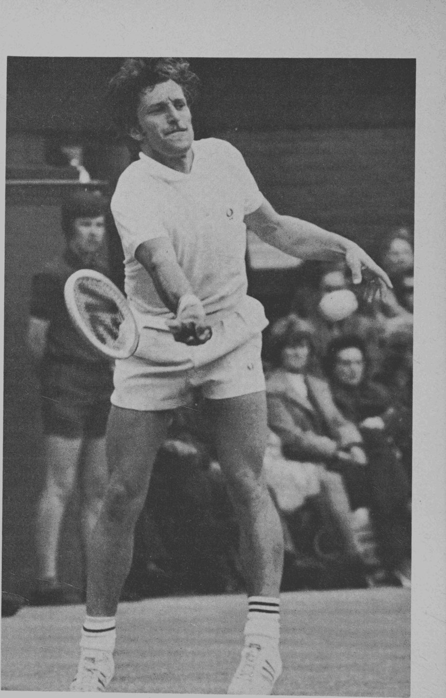
Jan Kodes: He never gives up. Determination and courage have rescued many games for this unique Czech player.
Những thông tin như vậy nói lên rất nhiều điều về tâm lý của mỗi cá nhân và khiến quần vợt trở thành một lá bài Rorschach cỡ khổng lồ. Do đó, phong cách chơi của một người trở thành sự thể hiện tính cách của một người và là dấu hiệu cho thấy các giá trị, nhu cầu và tính khí của một người. Ví dụ, một thất bại nặng nề có thể khiến một số cầu thủ cảm thấy nhục nhã như thể nhân cách của họ đã bị tấn công, khiến họ phải phục hồi bằng nhiều cử chỉ "cứu mặt". Một số sẽ làm hầu hết mọi thứ để giành chiến thắng, như Tiriac đã làm trong trận chung kết Davis Cup khi anh rút "túi thủ đoạn" để đánh bại Forman - trừng mắt nhìn trọng tài biên, ngồi xuống, từ chối thi đấu, kêu gọi cho phép. Minh họa: “Đây là ngày ô nhục nhất trong lịch sử Davis Cup”.
Người đọc có thể quan tâm đến việc tự mình kiểm chứng luận điểm của chúng tôi vào lần tới khi anh ấy xem một trận đấu quần vợt. Trước tiên hãy thử nó với một người mà bạn biết rõ và xem liệu phong cách quần vợt của anh ấy có phản ánh cách bạn biết về anh ấy ngoài sân đấu hay không. Nếu điều đó có vẻ hiệu quả, bạn có thể muốn suy đoán một chút về tính cách của một người mà bạn không biết bằng cách theo dõi và chú ý kỹ đến cách anh ta xử lý bản thân trên sân.
Quần vợt như một phương tiện truyền thông
Ngoài việc phản ánh tính cách và phong cách sống của một người, quần vợt còn có thể hữu ích như một phương tiện giao tiếp tương tự và mô tả một số cách mọi người liên hệ với nhau ngoài sân đấu. Để xem xét quần vợt và giao tiếp, chúng ta cần mô tả hai khía cạnh quan trọng của giao tiếp. Trong mọi giao tiếp đều có thông điệp mang nội dung hoặc thông tin và một siêu thông điệp đi kèm là một tuyên bố ngầm về cách thực hiện thông điệp. Do đó, siêu thông điệp xác định bản chất của mối quan hệ và cách kiểm soát nó. Một câu nói đơn giản như “Bạn sai rồi,” mang nhiều ý nghĩa hơn ngoài thông tin đánh giá. Nó ngụ ý rằng người gửi có quyền đối chất với người khác về đánh giá của mình (chẳng hạn như điều mà một nô lệ sẽ không bao giờ đảm nhận vị trí nói với chủ nhân của mình). Những gì anh ấy nói và cách anh ấy nói cho thấy, “Đây là loại mối quan hệ mà chúng ta có với nhau.”
Trong quần vợt, quả bóng là một thông điệp và cách nó được gửi đi chính là một thông điệp meta. Ở mọi thời điểm, mỗi người chơi cố gắng điều động người kia vào vị trí trên sân để anh ta có thể giành quyền kiểm soát và đạt được mục tiêu của mình, cho dù đó là chơi để giành chiến thắng, chơi để giải trí và rèn luyện sức khỏe, hòa đồng hay để cải thiện.
Tương tự như vậy, trong các mối quan hệ hàng ngày, chúng ta cố gắng thông qua giao tiếp để giành quyền kiểm soát và xác định loại mối quan hệ mà chúng ta mong muốn cũng như một vị trí cuộc sống mà chúng ta cảm thấy thoải mái nhất. Việc sử dụng ngôn ngữ quần vợt để mô tả các loại mối quan hệ khác nhau có thể được minh họa. Ví dụ, một người cực kỳ hung hăng hoặc quyết đoán và cố gắng nhanh chóng giành chiến thắng trong các cuộc tranh luận của mình có thể được gọi là “kẻ tấn công mạng”. Hoặc cá nhân dường như không bao giờ cam kết với bản thân trong một mối quan hệ nhưng chơi an toàn bằng cách phản ứng cẩn thận và tốt trong giới hạn những gì được xã hội chấp nhận có thể được xếp vào loại “kẻ vận động hành lang phía sau” thận trọng. Sau đó, có một nhận xét tinh tế khiến người ta mất cảnh giác như thể đó là một “cú sút rơi”. Hay điểm không thể chối cãi trong một cuộc trò chuyện mà không ai có thể phủ nhận vì sức mạnh của nó tương đương với một cú “cú đập từ trên cao”. Trên thực tế, chúng ta có xu hướng nhìn nhận bản thân ở một vị trí sống cơ bản nhất định so với những người khác mà sau đó chúng ta thiết lập và duy trì một cách có ý thức và vô thức thông qua các phương pháp giao tiếp của mình. Điều này đúng cho dù họ có tham gia quần vợt hay các loại mối quan hệ khác.
Trò chơi trong một trò chơi
Một cách phổ biến hơn để xem xét hoạt động giữa các cá nhân, cho dù đó là trong hay ngoài sân quần vợt, là thông qua việc sử dụng “trò chơi”. Cuốn sách Trò chơi mà mọi người cùng chơi của Eric Berne tập trung sự chú ý vào nhiều “trò chơi” hoặc thao tác xảy ra giữa con người với nhau trong bối cảnh xã hội rộng lớn của nền văn hóa chúng ta. Quần vợt cũng có một bộ sưu tập các trò chơi đặc biệt mà người tham gia thường thấy mình bị mắc kẹt. Dưới đây là một vài ví dụ:
Giờ Thì Tóm Được Ngươi Rồi (Now I Gotcha). Một người chơi điều khiển đối thủ của mình vào vị trí trên sân nơi anh ta có thể giành được điểm bằng một cú đặt bóng thuyết phục. Mặc dù đây là điều bình thường trong môn quần vợt cạnh tranh và giúp người ta nâng cao tâm lý, nhưng có một số người thích hạ gục đối thủ và cảm thấy hài lòng không chỉ khi chiến thắng mà còn có thể hả hê trước một thất bại nặng nề. Nó giống như đổi tiền mặt bằng một số tem cũ để có được sự hả hê miễn phí.
Một ví dụ hiện lên trong đầu tôi. Một kỳ thủ của giải đấu đã bị đánh bại 6-0, 6-1 một cách rõ ràng, đã phục thù vào tuần sau trên một mặt sân chậm hơn, nơi anh ta lật ngược thế cờ và bất ngờ khiến đối thủ của mình khó chịu. Với mỗi cú đập, người ta càng thấy rõ anh ấy thích thú với việc “nhận lại” đến mức nào.
Kẻ Khoe Tên Tuổi (The Name Dropper). Cách tiếp cận này được sử dụng để đạt được địa vị và lợi thế bằng cách liên hệ điểm số, chiến thắng hoặc liên hệ trong quá khứ với những người chơi tên tuổi. Người này đặt ra mục tiêu được đối thủ đánh giá cao nhằm đạt được lợi thế tâm lý khi họ chơi. Trong một giải đấu gần đây, tôi gặp phải một đối thủ ngay lập tức cố gắng gây ấn tượng và gây áp lực cho tôi bằng cách nói về một số “chiến thắng lớn” gần đây của anh ta. Nó có thể đã thành công - tôi đã thua.
Kẻ Giả Vờ Yếu (Sandbagger). Khoảng thời gian tập hợp ngắn ngủi trước khi trận đấu bắt đầu có thể được sử dụng cho nhiều mục đích hơn là khởi động. Đôi khi nó thể hiện một phiên bản méo mó về khả năng và phong cách thực sự của người chơi nhằm ru ngủ đối thủ. Một số sẽ chê bai khả năng của họ bằng lời nói với hy vọng khiến đối thủ mất cảnh giác. Trong một trận đấu ở trường đại học, chúng tôi gặp phải một bậc thầy về bao cát. Ngoại hình của anh ấy là một “quần áo đồng quê” cổ điển với quần đùi thể dục màu xanh lam, mũ bóng chày màu đỏ và đôi tất nâu rủ xuống đôi giày bóng rổ màu đen. Trong thời gian khởi động, anh ta tỏ ra không phải là một mối đe dọa lớn vì anh ta sử dụng những cú đánh không chính thống và thể hiện một thái độ thiếu quyết đoán, gần như thờ ơ. Tuy nhiên, khi trận đấu bắt đầu, đất nước này nhanh chóng chứng tỏ mình là một thành phố quần vợt lém lỉnh.
Kẻ Phá Rối (Upset). Cách tiếp cận này được sử dụng để khiến người khác mất cảnh giác thông qua việc mất tập trung, tin nhắn kép, bất ngờ, chiến thuật bất ngờ hoặc làm gián đoạn trò chơi và nếu vẫn thất bại, một số người sẽ dùng đến lạm dụng bằng lời nói. Nếu hiệu quả, đối thủ thậm chí có thể “hạ hỏa”. Nhiều kỳ thủ vĩ đại đã sử dụng những chiến thuật gây khó chịu, mất tập trung và điên rồ như vậy để giành được lợi thế tâm lý trước đối thủ. Trong khi nhiều người nói Nastase “rắc rối” và đùa giỡn liên tục trên sân thì anh lại thích gọi đó là “sự chuẩn bị”, trong đó yếu tố bất ngờ là một trong những vũ khí chính của anh. Có thông tin cho rằng Wayne Sabin thỉnh thoảng ném vợt của mình vào ghế và nghỉ ngơi trong khi những người nhặt bóng lấy nó. Và Bobby Riggs, một tay chơi cờ bạc bậc thầy “người có thể khống chế trọng tài và giao bóng nhanh chóng với những người giỏi nhất trong số những người dễ thương,” đã nhiều lần chứng minh rằng quần vợt thực sự là một trò chơi được chơi bằng trí óc cũng như bằng vợt. Chắc chắn độc giả, nếu là một vận động viên quần vợt, có thể thêm những vận động viên yêu thích của mình vào danh sách này.
Quần vợt như một mối quan hệ thân mật
Cũng có thể coi quần vợt là một mối quan hệ “thân thiết”, không có trò chơi, thao túng, nơi người ta có thể cởi mở và chấp nhận rủi ro, phạm sai lầm, bày tỏ tình cảm và đồng cảm với người kia. Trong quần vợt, điều này có thể xảy ra khi một người không cần phải chứng minh bất cứ điều gì về bản thân hoặc vị trí cơ bản trong cuộc sống của mình trước sự tổn hại của người khác và có thể kiềm chế mong muốn chiến thắng của mình bằng sự chấp nhận nồng nhiệt đối với đối thủ, tin tưởng vào lời kêu gọi của mình và cảm thấy không cần phải “thắng bằng bất cứ giá nào”. Do đó, quần vợt có thể bao gồm các mối quan hệ ở nhiều cấp độ khác nhau, từ một nghi lễ lạnh lùng, khách quan, đến một hoạt động hoặc trò tiêu khiển, đến “các trò chơi trong một trò chơi”, và cuối cùng là sự thân mật thực sự. Ở cấp độ này, mối quan hệ thực sự đã trở nên quan trọng hơn trò chơi.
Tất nhiên, sự thân mật trong quần vợt không phải là tự động mà có thể là mục tiêu phải hướng tới và liên tục được thiết lập lại cũng giống như người chơi nỗ lực cải thiện kỹ năng và giành chiến thắng. Buông bỏ và chấp nhận rủi ro là điều không hề dễ dàng trong bất kỳ mối quan hệ nào và cũng có thể phải trả giá khá đắt trong một cuộc tình. Ví dụ, hãy xem xét vai trò của sự tức giận trong quần vợt và các mối quan hệ giữa các cá nhân khác. Sự tức giận phù hợp và biểu hiện của nó là tốt, nhưng quá nhiều hoặc quá ít có thể gây khó chịu cho một trận đấu quần vợt hoặc sự hài lòng giữa các cá nhân. Ngay cả những người ở cấp độ chuyên nghiệp mà chiến thắng là quan trọng nhất cũng bày tỏ mong muốn gần gũi này, ví dụ như Nastase muốn “chơi cho đến khi đối thủ và tôi ngã xuống vì kiệt sức. Đánh hắn rồi ôm lấy”.
Kinh nghiệm về các mối quan hệ thân mật còn thiếu đối với nhiều người trong nền văn hóa của chúng ta. Đối với một số người, quần vợt có thể mang lại khả năng trị liệu thực sự cho sự phát triển của những mối quan hệ như vậy và kết quả có thể là sự phát triển cá nhân.
Nếu quần vợt thực sự là một mô hình thu nhỏ của “thế giới thực” và các khía cạnh rộng lớn hơn của cuộc sống, thì một khả năng thú vị sẽ nảy sinh: bên cạnh việc phản ánh cách cá nhân đối phó với cuộc sống, liệu sân quần vợt có thể cung cấp một môi trường “an toàn” để một người thực hành những cách sống mới, các mối quan hệ giữa các cá nhân hay không? Chúng ta biết rằng chỉ nghĩ hay nói về những cách ứng xử khác là chưa đủ mà chúng phải được thực hành và thực hiện, phát triển từng bước thông qua hành động. Chúng ta có thể nhìn, nghe và đọc về cơn đột quỵ của mình, nhưng nó sẽ không thay đổi cho đến khi chúng ta thực hành nó và tích cực vận động cơ bắp cùng với những hình ảnh trong đầu. Chúng ta khám phá ra rằng khi chúng ta thực hành và thực hiện nó, sự thay đổi sẽ diễn ra. Trong quần vợt cũng vậy, trong cuộc sống cũng vậy. Có lẽ có thể có sự chuyển tiếp từ thành công trong học tập trên sân sang thành công trong việc giải quyết các vấn đề rộng lớn hơn của cuộc sống.
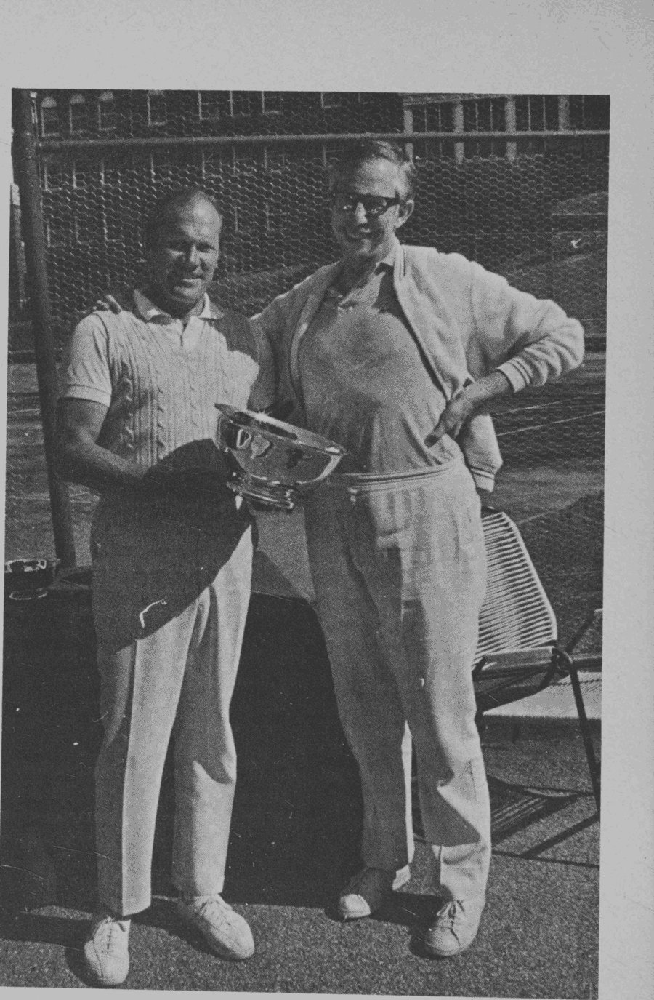
Dr. Claude Frazier receiving a cup from Hal Burrows at a Spring 1974 tournament. Burrows, a former member of the Davis Cup Team, is the tennis pro at the Homestead.
Phụ Lục
Bảng Tra Cứu
Nguyên bản tiếng Anh (trích từ bản in gốc)
A
Agutter, George, 94
Ashe, Arthur, 55
attitude, 11, 14, 19
B
Barrymore, Lionel, 31
Bessier, Armmold, 18
Bolliettieri, Nick, 106
Brown, Tom, 15
Budge, Don, 30
Burrows, Hal, 146
Carlson, Lawrence P., 26, 27
Cassals, Rosemary, 32
choke up, 17, 69, 70, 71, 73,
clutching up, 69, 75
Cobb, Brad, 30, 31
compulsive-disruptive
response, 105, 107
compulsive response, 104
concentration, 11, 14, 15, 20,
24, 75, 77, 107, 123
consistency, 12
Court, Margaret, 114
cybernation, 33
cybernetics, 34, 48, 49
D
desensitize, 73, 80
disruptive response, 101, 105
impulsive response, 104, 105
Institute for the Study of
Athletic Motivation, 36,
International Lawn Tennis
Assn., 24
J
Johnson, James, 23
K
King, Billie Jean, 13, 32, 39,
44, 46, 84, 92, 95
Kodes, Jan, 140
Krugger, Bjorn, 51, 52
Lall, Premjit, 58
Laver, Rod, 14, 35, 37, 38, 39,
D2, Of, 00, Fl, 109
M
mental practice, 43, 45, 46,
47, 48
meta-message, 141, 142
Moran, Gussie, 29
Mulligan, Marty, 58
Mulloy, Gardner, 21
Mufioz, Ramon, 50
N
Nastase, Ilie, 26, 71, 74, 143,
Newcombe, John, 51, 52, 64
O
Ogilvie, Bruce, 36
Okker, Tom, 97
Orantes, Ramon, 50
P
placement, 12, 13
practice, mental, 43, 45, 46,
47, 48
psyche, 23, 24, 25, 27, 28, 29,
30, 31, 32, 35
distraction, 109, 110, 113
psychological, 108, 110
double fault, 17, 21, 76, 79,
93, 116
Downs, Jim, 31
E
Eastwood, Clint, 59
Emerson, Roy, 126
epileptic, 33
Evert, Chris, 74, 93, 118
F
factor, psychological, 11, 12,
fault, double, 17, 21, 76, 79,
Fisher, Dan, 29, 30
flat spin, 12
Frazier, Claude Albee, 16, 146
freeze, 69, 74, 79
Freud, Dr. Sigmund, 83
G
Gestalt, 93
Gonzales, Pancho, 30, 36, 89,
Goolagong, Evonne, 132
Gunter, Richey, 32
H
Hoad, Lew, 78
Hopman, Harry, 11
image, self-, 34, 35, 41, 42, 49
psyche, self-, 31, 32
psyching out, 23, 24 58, 84,
88, 89, 117, 133
psyching up, 24, 75, 84, 86,
88, 120
psychological distraction,
108, 110
psychological factor, 11, 12,
13, 19, 22,52, 94
psychotherapy, 12
R
Ralston, Dennis, 102
response, compulsive, 104
compulsive-disruptive,
disruptive, 104, 105
impulsive, 104, 105
stroke, 107
Riggs, Bobby, 92, 144
Rosewall, Ken, 39, 45, 52, 57,
S
Sabin, Wayne, 144
self-criticism, 18
self-image, 34, 35, 41, 42, 49
self-psyche, 31, 32
slice, 12, 65, 90
Smith, Stan, 10, 30, 74
Stolle, Fred, 81
stroke response, 107
T
Taylor, Roger, 122
Tilden, Bill, 39, 40
Tutka, Thomas, 36
twist, American, 12, 21
U
United States Lawn Tennis
Ass’n., 24, 29
Wimbledon, 29, 52
Phụ Lục
Thư Mục Tham Khảo
Nguyên bản tiếng Anh
Beisser, A. B. “Tennis” in Slovenko, R. and Knight, J. A. (Eds.) Motivation in Play, Games, and Sports. Springfield, Illinois: Charles C. Thomas, 1967.
Bindra, D. Motivation: A Systematic Reinterpretation. New York: Ronald, 1959.
Bruner, Jerome S. “The Growth and Structure of Skill,” in Connelly, K. J. (Ed.), Motor Skill Development. London and New York: Academic Press, 1970, 63-92.
Combs, A. W., Avila, D. L., and Purkey, W. W. Helping Relationships. Boston: Allyn and Bacon, 1972.
Frankl, V. E. Man’s Search for Meaning. New York: Washington Square Press, 1963.
Hahn, W. W., Stern, J. A., & Fehr, F. S. “Generalizability of Heart Rate as a Measure of Drive State.” Journal of Comparative and Physiological Psychology, 1964, 58, 305.
Jacobsen, E. Progressive Relaxation. University of Chicago Press, 1938.
Kennedy, J. A. Relax and Live. London: Anchor Press, 1965.
King, B. J. with Kim Chapin. Tennis to Win. New York: Harper and Row, 1970.
Lashley, Karl S. “The Problem of Serial Order in Behavior.” In L. A. Jeffress (Ed.), Cerebral Mechanisms of Behavior: The Hixon Symposium. New York: Wiley, 1951, 122-130.
Laver, R. How to Play Championship Tennis. New York: Macmillan, 1965.
Maltz, M. Psycho-Cybernetics. New York: Pocket Books, 1969.
Mulloy, G. The Will to Win: An Inside View of Tennis. New York: A. S. Barnes and Co., Inc., 1959.
Ramo, Simon Extraordinary Tennis for the Ordinary Player. New York: Crown Publishers Inc., 1970.
Tilden, William. How to Play Better Tennis. New York: Cornerstone Library, 1950.
——— Match Play and the Spin of the Ball. New York: Kennikat Press, 1969.